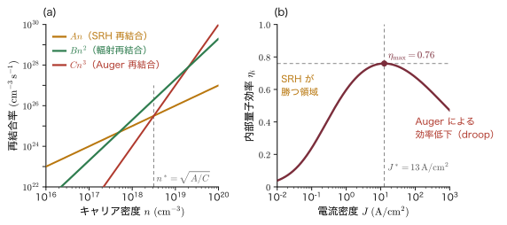
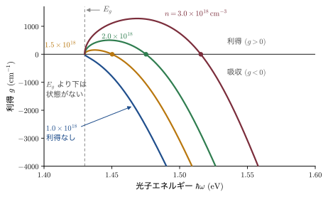
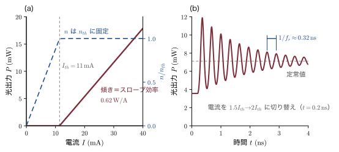
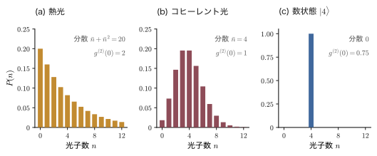
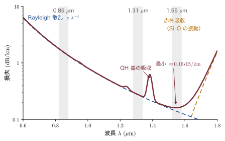

第26章半導体発光の物理 — 再結合・誘導放出・半導体レーザー
信号機の LED，スマートフォンの画面，Blu-ray の読み取りヘッド，そして世界中をつなぐ光ファイバ通信の送信器．これらはすべて，半導体の中で電子と正孔が出会って消えるときに光が出るという現象を使っている．第25章では光が半導体に吸収されて電子–正孔対が生まれる過程を調べた．本章はその逆，電子–正孔対が消える過程である．ところが話はそれほど単純ではない．GaAs の結晶にレーザー光を当てると赤外線でぼんやり光るが，Si の結晶はほとんど光らない．どちらでも電子と正孔は確かに消えているのに，Si では消えたエネルギーが光ではなく熱（格子振動）になってしまうのである．光が出る消え方と，光が出ない消え方がある——この区別から本章を始める．
前半（26.1〜26.3節）では，まず再結合の速度論を組み立てる．電子密度の時間変化を「生成 − 再結合」で書き，光が出る輻射再結合 $Bnp$，深い準位を介した Shockley–Read–Hall（ショックレー・リード・ホール）再結合，3個のキャリアが関わる Auger（オージェ）再結合を，それぞれ式として導く．次に発光スペクトルの形を調べる．バンド間発光，励起子発光，ドナー–アクセプター対発光などの線は，結晶の中で何が起きているかを教えてくれる「指紋」である．そして Einstein（アインシュタイン）が1917年に示した吸収・誘導放出・自然放出の3つの過程のあいだの関係を，熱平衡の論法で導く．これを半導体に当てはめると，光が増幅される条件 $E_{Fn}-E_{Fp}\gt\hbar\omega\gt E_g$（Bernard–Duraffourg（ベルナール・デュラフォーグ）条件．$\hbar\omega$ は光子のエネルギー，$E_g$ はバンドギャップ，$E_{Fn}$ と $E_{Fp}$ は電子と正孔それぞれの準 Fermi（フェルミ）準位で，26.3.4 で説明する）が出てくる．
後半（26.4〜26.6節）は応用である．光の増幅と鏡による帰還を組み合わせたものが半導体レーザーであり，しきい電流，発振波長の間隔，光出力と電流の関係，高速変調の限界を決める緩和振動まで，すべてを本章の式から計算する．さらに，レーザー光と電球の光はどこが違うのか，自然放出はなぜ起こるのか，という問いに答えるために光を量子化する．自然放出は「何もない真空」の電場のゆらぎが引き起こす誘導放出だ，という驚くべき結論にたどり着く．最後に，光ファイバの損失，発光素子と受光素子の材料設計，フォトダイオードの帯域と雑音，そして送信器から受信器までの光の収支（リンクバジェット）を計算し，光通信システムが物理のどこに支えられているかを見る．
本章は第IV部の中で，第24章（p-n 接合とヘテロ接合）と第25章（光吸収）の二つを土台にする．第24章の準 Fermi 準位がなければ反転分布は語れず，第25章の吸収係数 $\alpha$ がなければ発光の強さも利得も計算できない．逆に言えば，本章を読み終えると，LED とレーザーと太陽電池と光検出器が同じ一組の式——吸収と放出の詳細釣り合い——の別々の顔であることが見えてくるはずである．次の第27章では，本章のレーザーが生む強い光が，物質の応答そのものを光の強さに比例しなくする現象（非線形光学）を扱う．
- 速度方程式 $\dd n/\dd t=G-R$ と寿命の定義，輻射再結合 $R=Bnp$ と輻射寿命 $\tau_r=1/(Bp_0)$
- van Roosbroeck–Shockley（ファン・ルースブルック・ショックレー）の関係で，吸収スペクトルから輻射再結合係数 $B$ を計算する方法
- Shockley–Read–Hall 統計の完全導出（4つの過程）と，深い準位ほど再結合を速める理由
- Auger 再結合・表面再結合・内部量子効率 $\eta_i$ と ABC 模型，LED の効率低下（droop）
- バンド間発光（半値幅 $\approx1.8k_BT$），励起子・束縛励起子（Haynes（ヘインズ）則），ドナー–アクセプター対，深い準位，フォノンレプリカ，Stokes（ストークス）シフト，熱消光
- Einstein の $A,B$ 係数の関係を熱平衡から導き，半導体版の Bernard–Duraffourg 条件と利得スペクトル $g=\alpha_0(f_c-f_v)$ を導く
- ダブルヘテロ構造，光閉じ込め係数 $\Gamma$，Fabry–Pérot（ファブリ・ペロー）共振器，しきい値条件，レート方程式と緩和振動周波数
- 量子井戸レーザー，DFB・DBR・VCSEL，量子カスケードレーザー，GaN 青色レーザー，線幅
- 電磁場の量子化，コヒーレント状態，真空ゆらぎによる自然放出 $A=\omega_0^3\abs{\bm d}^2n_r/(3\pi\epsilon_0\hbar c^3)$，Purcell（パーセル）効果，光子統計とショット雑音
- 光ファイバの損失，InP 格子整合材料と Vegard（ベガード）則，PIN と APD の帯域・雑音，リンクバジェットの計算
26.1 輻射再結合と非輻射再結合
実験から始めよう．室温の GaAs ウェハと Si ウェハを並べ，同じ緑色のレーザー光（光子エネルギー $2.3\,\mathrm{eV}$）を当てて，出てくる赤外線を分光器で調べる．GaAs からは波長 $870\,\mathrm{nm}$ 付近（光子エネルギー $1.43\,\mathrm{eV}$，GaAs のバンドギャップそのもの）に明るい発光が見える．これをフォトルミネセンス（photoluminescence，PL）という．Si からも $1.1\,\mu\mathrm{m}$ 付近にかすかな光が出るが，その強さは GaAs の数千分の1以下である．どちらの結晶でもレーザー光は吸収され，電子–正孔対はたくさん作られている．そして明かりを消せば，どちらでも電子と正孔はすぐに消える．消え方が違うのである．
電子が伝導帯から価電子帯へ落ちて正孔と対消滅することを再結合（recombination）という．このとき約 $E_g$ のエネルギーが放出される．それが光子として出ていくものを輻射再結合（radiative recombination），フォノン（格子の振動，すなわち熱）として出ていくものを非輻射再結合（nonradiative recombination）という．LED やレーザーを作るとは，非輻射再結合をできるだけ抑えて輻射再結合だけを残すことにほかならない．本節では，再結合の速さを決める式を，3つの機構（輻射・深い準位・Auger）についてそれぞれ導く．
記号の約束：本章で使う文字
本章は登場する量が多いので，同じ文字を別の意味に使うことがある．混同しやすいものをここにまとめる（読み進めて迷ったら戻ってきてほしい）．
- 屈折率は $n_r$ と書く．第25章の複素屈折率 $\tilde n=n+i\kappa$ の実部 $n$ と同じものであるが，本章では電子密度 $n$ と区別するため $\tilde n=n_r+i\kappa$ と書く（$\kappa$ は消衰係数で，本章ではこの意味にだけ使う）．導波路の芯（コア）と外側（クラッド）の屈折率は $n_{r1},n_{r2}$，群屈折率は $n_g$，導波モードの実効屈折率は $n_{\rm eff}$．SRH 統計の $n_1,p_1$（26.1.5）は屈折率ではなくキャリア密度である．時間依存の約束は第25章と同じ $\ee^{-i\omega t}$．
- エネルギーは $E$，電場の大きさ・成分は $\mathcal{E}$（スクリプトの E）と書いて区別する（電場のベクトルは $\EE$）．第17章の $\epsilon_\kk$ を本部では $E(\kk)$ と書く．$E_i$ は真性 Fermi 準位（26.1.5）で，不純物のイオン化エネルギーは $E_{\rm ion}$（ドナーなら $E_D$，アクセプターなら $E_A$）と書く．
- $\alpha$ は吸収係数（第25章と同じ，単位 $\mathrm{cm^{-1}}$）．$\alpha_0$ は「価電子帯が満ち伝導帯が空」のときの吸収係数，$g$ は利得係数（負の吸収）．レーザーの内部損失 $\alpha_i$，ミラー損失 $\alpha_m$，線幅増大係数 $\alpha_H$ も $\alpha$ を使うが，いずれも添字で区別する（第23章の衝突イオン化係数 $\alpha_n,\alpha_p$ とも別物）．26.5.3（と，それを使う26.2.7 の最後の導出）の添字のない $\alpha$ だけは，コヒーレント状態を表す複素数である．
- $B$ は輻射再結合係数（$\mathrm{cm^3/s}$），$B_{12},B_{21}$ は Einstein の $B$ 係数，26.5.1 の $B_y$ は磁束密度．周波数の帯域は $B$ と書かず $\Delta f$ と書く．$A$ は SRH 再結合の係数（ABC 模型）または Einstein の $A$ 係数（26.4.9 と26.6.5 では面積）．$C$ は Auger 係数（26.6.5 では空乏層の容量）で，熱消光の定数 $C_q$ と Rayleigh（レイリー）散乱の係数 $C_R$ は添字で区別する．
- $\tau$ は寿命．輻射寿命 $\tau_r$，非輻射寿命 $\tau_{nr}$，SRH の電子・正孔捕獲寿命 $\tau_{n0},\tau_{p0}$，光子寿命は $\tau_{ph}$（正孔の $\tau_p$ と混同しないため）．
- $\eta$ は効率を表す：内部量子効率 $\eta_i$（再結合のうち光を出す割合．26.1.8），注入効率 $\eta_{inj}$（電流のうち活性層に届いて再結合する割合．26.4.5），外部微分量子効率 $\eta_d$（26.4.6），受光器の量子効率 $\eta$（26.6.5）．ただし例題26.10 と26.4.9 の $\eta_c,\eta_v$ は効率ではなく，準 Fermi 準位をバンドの端（26.4.9 ではサブバンドの底）から $k_BT$ 単位で測った値である．
- $S$ は3通りに使う：26.1.7 の表面再結合速度（第24章24.1.7 で $S_r$ と書いたもの），26.2.6〜26.2.7 の Huang–Rhys（ホアン・リース）因子（無次元），26.4節の光子密度．$\Gamma$ は光閉じ込め係数（Brillouin（ブリルアン）域の $\Gamma$ 点とは別）．$R$ は再結合率または鏡の反射率（文脈で区別）．
- $V$ は電圧，体積（26.3.6，26.4.6，26.5），導波路の規格化周波数 $\mathcal{V}$（26.4.3）を区別する．$\Omega$ は光学フォノンの角振動数（$\hbar\Omega$ がそのエネルギー）で，26.5.4 の $\dd\Omega$ だけは立体角．$Q$ は26.2.7 では配位座標，26.5.5 では共振器の Q 値．
- $g$ は利得係数のほか，26.3 の縮退度 $g_1,g_2$，26.5 の基底状態 $\ket g$（励起状態は $\ket e$），結合の強さ $g_0$，2次の相関関数 $g^{(2)}(0)$ に使う．26.5節の $n$ は光子数，$q,p$ は電磁場の振動子の座標と運動量（正孔密度 $p$ とは別）．
- そのほか，$K$（例題26.2 の吸収の比例定数／26.2.7 のばね定数），$W$（板や i 層の厚さ／26.2 の遷移の速さ），$a$（格子定数・局在の半径／26.4 の微分利得．演算子 $\hat a$ とは別），$d$（活性層の厚さ／双極子モーメント $\bm d$），$D$（拡散係数／26.6.2 の波長分散），$I$（光の強さ／電流），$M$（APD の増倍率／モードの数）も，文脈で区別できるので同じ文字を使う．
26.1.1 再結合の3つの経路 — エネルギーの捨て方
電子と正孔が再結合すると，約 $E_g\approx1\,\mathrm{eV}$ のエネルギーをどこかへ捨てなければならない．捨て先の候補は3つある．
(a) 光子に渡す．$1\,\mathrm{eV}$ の光子1個でエネルギーを全部持ち去れる．ただし第17章17.1 で見たとおり，光子は運動量をほとんど運べないので，電子と正孔が同じ $\kk$ にいなければならない．直接ギャップの GaAs ではこれが自然に満たされるが，間接ギャップの Si では伝導帯の底と価電子帯の頂上が違う $\kk$ にあるため，さらにフォノンの助けが要り，確率が桁違いに小さくなる．
(b) フォノンに渡す．フォノンのエネルギーは高々 $\hbar\Omega\approx30$〜$60\,\mathrm{meV}$ なので，$1\,\mathrm{eV}$ を捨てるには一度に20〜30個のフォノンを出さなければならない．これはほとんど起こらない．ところが，ギャップの中ほどに不純物や欠陥の準位（深い準位，deep level）があると話が変わる．電子はまずこの準位に落ち（エネルギーの約半分を捨てる），次にそこへ正孔がやってくる（残りを捨てる）．捨てる量が半分ずつになり，しかも捕まった電子の周りで格子が大きく歪むので，多数のフォノンを出すことが容易になる．深い準位は非輻射再結合の踏み石である．
(c) 別のキャリアに渡す．近くにいる3個目の電子（または正孔）がエネルギーを受け取って伝導帯の高いところへ跳ね上がり，その後フォノンを出しながら底へ戻る．キャリアが3個集まる必要があるので，キャリア密度が高いときにだけ効く．
26.1.2 速度方程式 — 生成と再結合の収支
再結合の速さを定量的に扱う道具は，「人数の収支」の式である．
定義：生成率 $G$，再結合率 $R$，正味の再結合率 $U$，寿命 $\tau$
単位体積・単位時間あたりに作られる電子–正孔対の数を生成率（generation rate）$G$，消える数を再結合率（recombination rate）$R$ という．単位はどちらも $\mathrm{cm^{-3}\,s^{-1}}$．空間的に一様なら，電子密度 $n$ の変化は
である（キャリアが拡散で出入りする場合は第24章24.1 の連続の式になる）．$G$ は熱による生成 $G_{th}$ と光や電流による外部からの注入 $G_{ext}$ の和 $G=G_{th}+G_{ext}$ に分ける．正味の再結合率 $U\equiv R-G_{th}$ を使えば $\dd n/\dd t = G_{ext}-U$．熱平衡からの過剰キャリア密度を $\Delta n=n-n_0$ と書き，
$$ \tau \equiv \frac{\Delta n}{U} $$をキャリア寿命（carrier lifetime）と定義する．
熱平衡では $n$ は一定だから $G_{th}=R$，すなわち $U=0$ である．これは単に「出入りが釣り合う」というだけでなく，あとで使う強い主張——個々の過程ごとに，その過程と逆過程が釣り合う（詳細釣り合い，detailed balance）——の特別な場合である．
導出：寿命 $\tau$ の意味 — 光を消したあとの減衰と，照らし続けたときの定常値
(1) 減衰．$\tau$ が $\Delta n$ によらない定数だとする．時刻 $t=0$ で光を消すと $G_{ext}=0$ なので，$n_0$ が一定であることに注意して
$$ \frac{\dd(\Delta n)}{\dd t} = \frac{\dd n}{\dd t} = -U = -\frac{\Delta n}{\tau} $$両辺を $\Delta n$ で割って $t$ で積分すると $\ln\Delta n = -t/\tau+\text{定数}$，すなわち
$$ \Delta n(t) = \Delta n(0)\,\ee^{-t/\tau} $$$\tau$ は過剰キャリアが $1/\ee$ に減るまでの時間である．時間分解フォトルミネセンス（26.2節）で発光の減衰を測れば，この $\tau$ が直接読める．
(2) 定常状態．一定の強さで照らし続けると $\dd n/\dd t=0$ になるので $G_{ext}=U=\Delta n/\tau$，したがって
$$ \Delta n = G_{ext}\,\tau $$∎ 寿命が長いほど，同じ光で多くの過剰キャリアがたまる．太陽電池や光検出器（第25章25.9）で寿命が重要なのはこのためである．
26.1.3 輻射再結合 $R=Bnp$
輻射再結合が起こるには，伝導帯の電子と価電子帯の正孔が同じ場所・同じ $\kk$ で出会わなければならない．出会う確率は電子の数にも正孔の数にも比例するので，再結合率は積 $np$ に比例する．化学反応の速度が反応物の濃度の積に比例するのと同じ考え方である．
定義：輻射再結合係数 $B$
$$ R_{rad} = B\,np $$比例係数 $B$ を輻射再結合係数（radiative recombination coefficient）という．単位は $\mathrm{cm^3/s}$．GaAs のような直接ギャップ半導体で $B\sim10^{-10}\,\mathrm{cm^3/s}$（GaAs の値は文献により $(1$〜$4)\times10^{-10}\,\mathrm{cm^3/s}$ 程度の幅がある．例題26.2 のあとの補足），間接ギャップの Si で $B\approx5\times10^{-15}\,\mathrm{cm^3/s}$ 程度であり，4〜5桁違う．この差が「GaAs は光り，Si は光らない」ことの直接の原因である（26.1.4 でこの値を吸収スペクトルから導く）．
導出：正味の輻射再結合率と輻射寿命
ステップ1：熱平衡．熱平衡では $R_{rad}=Bn_0p_0$ と熱生成 $G_{th}$ が釣り合う．質量作用の法則 $n_0p_0=n_i^2$（第17章17.5）を使うと
$$ G_{th} = Bn_0p_0 = Bn_i^2 $$$G_{th}$ は温度だけで決まり，キャリアを注入しても変わらない（熱による生成の正体は「結晶の中の黒体輻射の吸収」であり，結晶の温度だけで決まる．26.1.4 で詳しく見る）．
ステップ2：正味の再結合率．過剰キャリアがあるとき（電荷中性から $\Delta n=\Delta p$），
$$ U_{rad} = Bnp - Bn_i^2 = B\left(np-n_i^2\right) $$$n=n_0+\Delta n$，$p=p_0+\Delta n$ を代入して展開する：
$$ np - n_i^2 = (n_0+\Delta n)(p_0+\Delta n) - n_0p_0 = n_0\Delta n + p_0\Delta n + (\Delta n)^2 = \Delta n\,(n_0+p_0+\Delta n) $$したがって
$$ U_{rad} = B\,\Delta n\,(n_0+p_0+\Delta n) $$ステップ3：寿命．定義 $\tau=\Delta n/U$ に入れると
ステップ4：2つの極限．
- 低注入（$\Delta n\ll$ 多数キャリア密度）の p 型（$p_0\gg n_0$）なら $\tau_r\simeq1/(Bp_0)$．少数キャリア（電子）の輻射寿命は多数キャリア密度に反比例する．電子1個にとって相手の正孔が多いほど早く消えるからである．n 型なら $\tau_r\simeq1/(Bn_0)$．
- 高注入（$\Delta n\gg n_0,p_0$）なら $\tau_r\simeq1/(B\Delta n)$．寿命が $\Delta n$ に依存するので減衰は指数関数にならない．$\dd(\Delta n)/\dd t=-B(\Delta n)^2$ を変数分離して積分すると $1/\Delta n(t)-1/\Delta n(0)=Bt$，すなわち $\Delta n(t)=\Delta n(0)/[1+B\Delta n(0)t]$ という双曲線型の減衰になる．
∎
例題26.1 GaAs と Si の輻射寿命
(1) p 型 GaAs（$B=1\times10^{-10}\,\mathrm{cm^3/s}$．文献値の幅の下限に近い丸めた値）で $p_0=1\times10^{18}\,\mathrm{cm^{-3}}$ と $1\times10^{17}\,\mathrm{cm^{-3}}$ のときの少数キャリアの輻射寿命 $\tau_r$ を求めよ．(2) p 型 Si（$B=5\times10^{-15}\,\mathrm{cm^3/s}$，$p_0=1\times10^{17}\,\mathrm{cm^{-3}}$）ではどうか．(3) 非輻射寿命が $\tau_{nr}=10\,\mu\mathrm{s}$（よい Si 結晶の典型）のとき，Si で光になる割合 $\tau_{nr}/(\tau_r+\tau_{nr})$（26.1.8 の内部量子効率）を見積もれ．(4) Si で明るく光る LED を作るには何を改善すればよいか，(3) の式をもとに理由とともに述べよ．
解答．(1) 低注入なので式 \eqref{eq:26-taur} で $\tau_r=1/(Bp_0)$．
$$ p_0=10^{18}:\ \tau_r=\frac{1}{(1\times10^{-10}\,\mathrm{cm^3/s})(1\times10^{18}\,\mathrm{cm^{-3}})}=\frac{1}{1\times10^{8}\,\mathrm{s^{-1}}}=1\times10^{-8}\,\mathrm{s}=10\,\mathrm{ns} $$ $$ p_0=10^{17}:\ \tau_r=\frac{1}{(1\times10^{-10})(1\times10^{17})}\,\mathrm{s}=1\times10^{-7}\,\mathrm{s}=100\,\mathrm{ns} $$(2)
$$ \tau_r=1/[(5\times10^{-15})(1\times10^{17})]\,\mathrm{s}=1/(500\,\mathrm{s^{-1}})=2\times10^{-3}\,\mathrm{s}=2\,\mathrm{ms} $$(3)
$$ \tau_{nr}/(\tau_r+\tau_{nr})=10^{-5}/(2\times10^{-3}+10^{-5})=10^{-5}/(2.01\times10^{-3})=5\times10^{-3} $$(4) $\tau_r=2\,\mathrm{ms}$ は Si という物質で決まる値で変えられない．したがって $\eta_i=\tau_{nr}/(\tau_r+\tau_{nr})$ を大きくするには，分子の非輻射寿命 $\tau_{nr}$ を $\tau_r$ と同じ ms 級まで伸ばすしかない．すなわち，結晶の中の深い準位（金属不純物や欠陥．26.1.5）と表面の再結合中心（26.1.7）を徹底的に減らす．
∎ GaAs では電子は10〜100 ns で光を出して消えるが，Si では光を出すまでに2 ms もかかり，その前に99.5% が深い準位などで熱になってしまう．発光ダイオードやレーザーに Si が使われない理由が，数値で見えた．本節の冒頭の実験で Si の発光が GaAs の数千分の1以下だったのは，ふつうのウェハでは表面再結合（26.1.7）なども加わって非輻射寿命が $1\,\mu\mathrm{s}$ 以下になり，$\eta_i\lesssim5\times10^{-4}$ となるからである．逆に，(4) のとおり非輻射寿命を ms 級まで伸ばせば Si でも光る．実際，表面を徹底的に不動態化した Si で効率約1% の LED が作られている（Green（グリーン）ら，2001）．Si が光らないのは「禁止」ではなく「遅すぎる」のである．
26.1.4 van Roosbroeck–Shockley の関係 — 吸収スペクトルから $B$ を求める
$B$ の値はどうやって決まるのか．van Roosbroeck（ファン・ルースブルック）と Shockley は1954年，熱平衡での詳細釣り合いを使って，$B$ を吸収スペクトル $\alpha(\hbar\omega)$ だけから計算する方法を示した．考え方は次のとおりである．温度 $T$ の結晶の中は，温度 $T$ の黒体輻射（Planck 分布の光子の気体）で満たされている．この光子はたえず吸収されて電子–正孔対を作っている（これが熱生成 $G_{th}$ の正体である）．熱平衡では，各光子エネルギーごとに，吸収される光子の数と輻射再結合で生まれる光子の数が等しい．したがって，吸収係数がわかれば発光の強さがわかる．
導出：van Roosbroeck–Shockley の関係
ステップ1：媒質中の光のモードの数．屈折率 $n_r$ の媒質中では，角振動数 $\omega$ の光の波数は $k=n_r\omega/c$ である．周期境界条件のもとで，体積 $V$ の箱の中の $\kk$ 空間の体積 $\dd^3k$ に含まれるモード数は $V\dd^3k/(2\pi)^3$ に偏光の数2を掛けたもの（光は横波なので，電場の振動の向き（偏光）は進行方向に垂直な2通りある．第14章14.2 のフォノンの数え方と同じ）．球殻 $\dd^3k=4\pi k^2\dd k$ を取って体積で割ると，単位体積あたりのモード数は
$$ \dd N_{\text{mode}} = 2\cdot\frac{4\pi k^2\dd k}{(2\pi)^3} = \frac{k^2\dd k}{\pi^2} $$光子エネルギー $E=\hbar\omega=\hbar ck/n_r$ で書き直す（$n_r$ は一定とする）．$k=n_rE/(\hbar c)$，$\dd k=n_r\dd E/(\hbar c)$ なので
$$ \dd N_{\text{mode}} = \frac{1}{\pi^2}\left(\frac{n_rE}{\hbar c}\right)^2\frac{n_r\dd E}{\hbar c} = \frac{n_r^3E^2}{\pi^2\hbar^3c^3}\,\dd E = \frac{8\pi n_r^3E^2}{h^3c^3}\,\dd E $$最後に $\hbar=h/2\pi$ より $\pi^2\hbar^3=\pi^2h^3/(8\pi^3)=h^3/(8\pi)$ を使った．
ステップ2：熱平衡の光子密度．各モードの平均光子数は Planck 分布 $1/(\ee^{E/k_BT}-1)$（第14章14.1，光子は化学ポテンシャル0の Bose（ボース）粒子）．したがって単位体積・単位エネルギーあたりの光子数は
$$ \rho_{ph}(E) = \frac{8\pi n_r^3E^2}{h^3c^3}\,\frac{1}{\ee^{E/k_BT}-1} $$ステップ3：吸収の速さ．光子は速さ $c/n_r$ で進み，単位長さ進むあいだに吸収される確率が $\alpha$ である．したがって光子1個が単位時間に吸収される確率は $\alpha c/n_r$．単位体積・単位時間・単位エネルギーあたりの吸収の回数は
$$ \rho_{ph}(E)\cdot\alpha(E)\cdot\frac{c}{n_r} = \alpha(E)\,\frac{8\pi n_r^2E^2}{h^3c^2}\,\frac{1}{\ee^{E/k_BT}-1} $$ステップ4：詳細釣り合い．熱平衡では，これが同じエネルギーの光子を出す輻射再結合の回数 $R_0(E)\dd E$ に等しい．全エネルギーで積分すると，熱平衡の輻射再結合率
が得られる．これが van Roosbroeck–Shockley の関係である．
ステップ5：$B$ へ．熱平衡では $R_0=Bn_0p_0=Bn_i^2$ なので
$$ B = \frac{R_0}{n_i^2} $$非平衡でキャリアを注入すると，同じ $B$ で $R=Bnp=R_0\,np/n_i^2$ になる．
∎ 吸収が強い物質ほど発光も強い．これは「よく吸収するものはよく放射する」という Kirchhoff（キルヒホッフ）の放射法則の，半導体版である．
注意：$\alpha$ は熱平衡の結晶の吸収係数，$n_r$ の分散は無視
式 \eqref{eq:26-vrs} の $\alpha$ は，熱平衡にある結晶で測った吸収係数である．厳密には実験で測る吸収は「吸収 − 誘導放出」の正味の値であり，熱平衡ではその比が $1-\ee^{-\hbar\omega/k_BT}$ になる（26.3.4 のステップ2と26.3.6 のステップ2〜4の計算から導ける）．$\hbar\omega\approx1\,\mathrm{eV}$ では $\ee^{-\hbar\omega/k_BT}\approx10^{-17}$ なのでこの違いは完全に無視できる．また屈折率の波長依存性（分散）があると，ステップ1の $n_r^3$ は $n_r^2n_g$（$n_g$ は群屈折率）に置き換わる．ただしステップ3の光子の速さも群速度 $c/n_g$ になるので $n_g$ は打ち消し合い，式 \eqref{eq:26-vrs} は $n_r^2$ のまま変わらない．
例題26.2 吸収スペクトルから GaAs の $B$ を計算する
GaAs（$E_g=1.43\,\mathrm{eV}$，$n_r=3.6$，$N_c=4.35\times10^{17}\,\mathrm{cm^{-3}}$，$N_v=8.09\times10^{18}\,\mathrm{cm^{-3}}$，300 K）の吸収端を直接遷移の形 $\alpha(\hbar\omega)=K\sqrt{\hbar\omega-E_g}$ で近似し，$K$ は $\alpha(E_g+0.1\,\mathrm{eV})=1.0\times10^4\,\mathrm{cm^{-1}}$ となるように選ぶ．van Roosbroeck–Shockley の関係から $B$ を計算せよ．（$N_c$，$N_v$ は第17章の式で $m_e^*=0.067m$，$m_{dh}=0.47m$ から計算した値．）
解答．(i) $K$ を決める．$K\sqrt{0.1\,\mathrm{eV}}=1.0\times10^4\,\mathrm{cm^{-1}}$ より $K=1.0\times10^4/0.3162=3.16\times10^4\,\mathrm{cm^{-1}\,eV^{-1/2}}$．
(ii) 積分を近似で実行する．$\hbar\omega=E_g+x$ と置く．$x$ は高々数 $k_BT\approx0.1\,\mathrm{eV}$ なので，$(\hbar\omega)^2\simeq E_g^2$ と置いてよく，$\ee^{\hbar\omega/k_BT}\gg1$ なので Bose 因子は $\ee^{-\hbar\omega/k_BT}=\ee^{-E_g/k_BT}\ee^{-x/k_BT}$ になる．すると
$$ R_0 \simeq \frac{8\pi n_r^2E_g^2}{h^3c^2}\,K\,\ee^{-E_g/k_BT}\int_0^\infty\sqrt{x}\,\ee^{-x/k_BT}\,\dd x $$積分は $x=k_BT\,u$ と置換して
$$ \int_0^\infty\sqrt{x}\,\ee^{-x/k_BT}\dd x=(k_BT)^{3/2}\int_0^\infty\sqrt u\,\ee^{-u}\dd u=(k_BT)^{3/2}\dfrac{\sqrt\pi}{2} $$（第17章17.5 で $N_c$ を導いたときと同じ積分．付録A A.4）．
(iii) $B=R_0/n_i^2$ で $\ee^{-E_g/k_BT}$ が消える．$n_i^2=N_cN_v\ee^{-E_g/k_BT}$ なので
$$ B = \frac{8\pi n_r^2E_g^2}{h^3c^2}\cdot K\cdot\frac{\sqrt\pi}{2}(k_BT)^{3/2}\cdot\frac{1}{N_cN_v} $$指数関数がきれいに消えるのがこの計算の要点である．
(iv) 数値．$h=4.136\times10^{-15}\,\mathrm{eV\,s}$，$c=3.00\times10^{10}\,\mathrm{cm/s}$ を使う（単位を eV，s，cm にそろえる）．
$$ \begin{aligned} \frac{8\pi n_r^2E_g^2}{h^3c^2} &= \frac{8\pi\times3.6^2\times(1.43\,\mathrm{eV})^2}{(4.136\times10^{-15}\,\mathrm{eV\,s})^3(3.00\times10^{10}\,\mathrm{cm/s})^2}\\ &= \frac{666\,\mathrm{eV^2}}{6.36\times10^{-23}\,\mathrm{eV^3\,s\,cm^2}} = 1.05\times10^{25}\,\mathrm{eV^{-1}\,s^{-1}\,cm^{-2}} \end{aligned} $$ $$ \frac{\sqrt\pi}{2}(k_BT)^{3/2} = 0.886\times(0.02585\,\mathrm{eV})^{3/2} = 0.886\times4.16\times10^{-3} = 3.68\times10^{-3}\,\mathrm{eV^{3/2}} $$ $$ N_cN_v = (4.35\times10^{17})(8.09\times10^{18}) = 3.52\times10^{36}\,\mathrm{cm^{-6}} $$したがって
$$ B = \frac{(1.05\times10^{25})(3.16\times10^{4})(3.68\times10^{-3})}{3.52\times10^{36}}\,\mathrm{cm^3/s} = \frac{1.22\times10^{27}}{3.52\times10^{36}}\,\mathrm{cm^3/s} = 3.5\times10^{-10}\,\mathrm{cm^3/s} $$（単位：$\mathrm{eV^{-1}s^{-1}cm^{-2}}\times\mathrm{cm^{-1}eV^{-1/2}}\times\mathrm{eV^{3/2}}/\mathrm{cm^{-6}}=\mathrm{cm^3/s}$．）近似 (ii) を使わずに数値積分しても $3.7\times10^{-10}$ で，ほとんど変わらない．
∎ 吸収係数の大まかな値だけから，実測と同じ $10^{-10}\,\mathrm{cm^3/s}$ の桁が出た．間接ギャップの Si では吸収端付近の $\alpha$ が $10\sim10^3\,\mathrm{cm^{-1}}$ と1〜3桁小さく，しかも立ち上がりが緩い（第17章17.1.4）ので，同じ計算で $B$ が4〜5桁小さくなる．「よく吸収するものはよく光る」が数値で確かめられた．
補足：GaAs の $B$ の値には幅がある
例題26.1 では $B=1\times10^{-10}\,\mathrm{cm^3/s}$ を使ったが，例題26.2 の計算は $3.5\times10^{-10}\,\mathrm{cm^3/s}$ を与えた．どちらも間違いではない．GaAs の $B$ は，文献によって $(1$〜$4)\times10^{-10}\,\mathrm{cm^3/s}$ 程度の幅がある（理論計算にはさらに大きい値もある）．幅の主な原因は次の2つである．
- 光子の再吸収．屈折率の大きい結晶の中で生まれた光子の大部分は，全反射のために外へ出られず（26.1.8 の補足），結晶の中で再び吸収されて電子–正孔対に戻る（光子の再利用，photon recycling）．発光の減衰から測った寿命はこの再吸収のぶん見かけ上長くなり，そこから求めた $B$ は小さめに出る．例題26.2 の値は，再吸収を含まない「1回の再結合あたり」の値である．
- 吸収スペクトルの扱い．例題26.2 では吸収端を $\sqrt{\hbar\omega-E_g}$ の形で近似し，吸収端の近くの吸収を強める励起子の効果（第25章25.7）やバンドの裾を無視した．ドープ量や温度によっても値は変わる．
例題26.1 の $1\times10^{-10}\,\mathrm{cm^3/s}$ は，桁を見るために幅の下限に近い丸めた値を使ったものである．$B=3.5\times10^{-10}\,\mathrm{cm^3/s}$ を使えば，$p_0=10^{18}\,\mathrm{cm^{-3}}$ の輻射寿命は $\tau_r=1/(Bp_0)=2.9\,\mathrm{ns}$ になる．いずれにしても「GaAs の $B$ は $10^{-10}\,\mathrm{cm^3/s}$ の桁で，Si より4〜5桁大きい」という結論は変わらない．
26.1.5 Shockley–Read–Hall 統計 — 深い準位を介した再結合
Si の少数キャリア寿命は，同じ Si でも結晶によって $1\,\mathrm{ns}$ から $10\,\mathrm{ms}$ まで7桁も変わる．決めているのは輻射再結合ではなく，結晶に紛れ込んだ鉄や金などの微量の不純物と欠陥である．たとえば $10^{12}\,\mathrm{cm^{-3}}$（Si 原子 $5\times10^{10}$ 個に1個）の鉄で寿命は桁で縮む．逆に，高速で切り替える整流ダイオードでは，わざと金や白金を拡散させて寿命を縮め，蓄積された少数キャリアを速く消すことが行われてきた．この「踏み石」の効き方を定量化したのが，1952年の Shockley と Read，および Hall の理論（SRH 統計）である．
定義：再結合中心（トラップ）の量
- $N_t$：ギャップ中のエネルギー $E_t$ に準位を持つ中心（再結合中心，recombination center．トラップともいう）の密度．各中心は電子を1個まで収容できるとする．
- $f_t$：中心が電子で占められている確率．電子のいる中心の密度は $N_tf_t$，空の中心の密度は $N_t(1-f_t)$．
- $\sigma_n,\sigma_p$：中心が電子・正孔を捕まえる捕獲断面積（capture cross section）．キャリアから見た中心の「的の面積」で，典型的に $10^{-17}$〜$10^{-13}\,\mathrm{cm^2}$．
- $v_{th}$：キャリアの熱速度（$\sqrt{3k_BT/m^*}\sim10^7\,\mathrm{cm/s}$）．
- $c_n=\sigma_nv_{th}$，$c_p=\sigma_pv_{th}$：捕獲係数（$\mathrm{cm^3/s}$）．速さ $v_{th}$ で飛ぶキャリアが単位時間に掃く体積 $\sigma v_{th}$ の中に中心があれば捕まる，という意味である．
- $e_n,e_p$：中心から電子・正孔が熱で放出される放出率（$\mathrm{s^{-1}}$）．
中心と帯のあいだで起こりうる過程は，図26.2 の4つしかない．
導出1：4つの過程の回数と，放出率を熱平衡から決める
ステップ1：回数を書く．捕獲は「キャリアの密度 × 相手になる中心の密度 × 捕獲係数」，放出は「放出できる中心の密度 × 放出率」である（図26.2）．
$$ r_a = c_n\,n\,N_t(1-f_t),\qquad r_b = e_n\,N_tf_t,\qquad r_c = c_p\,p\,N_tf_t,\qquad r_d = e_p\,N_t(1-f_t) $$ステップ2：熱平衡の詳細釣り合い．熱平衡では過程 (a) とその逆過程 (b) が釣り合う：$r_a=r_b$．このとき $n=n_0$ で，中心の占有確率は Fermi–Dirac 分布 $f_{t0}=1/(1+\ee^{(E_t-E_F)/k_BT})$ である．$r_a=r_b$ を $e_n$ について解くと
$$ e_n = c_n\,n_0\,\frac{1-f_{t0}}{f_{t0}} $$$f_{t0}$ の式から
$$ \dfrac{1-f_{t0}}{f_{t0}}=\dfrac{\ee^{(E_t-E_F)/k_BT}/(1+\ee^{(E_t-E_F)/k_BT})}{1/(1+\ee^{(E_t-E_F)/k_BT})}=\ee^{(E_t-E_F)/k_BT} $$また $n_0=n_i\ee^{(E_F-E_i)/k_BT}$（$E_i$ は真性 Fermi 準位．第17章17.5）．掛け合わせると $E_F$ が消えて
$$ e_n = c_n\,n_i\,\ee^{(E_F-E_i)/k_BT}\,\ee^{(E_t-E_F)/k_BT} = c_n\,n_i\,\ee^{(E_t-E_i)/k_BT}\equiv c_n\,n_1 $$同様に (c) と (d) の釣り合い $r_c=r_d$ から $e_p=c_pp_0f_{t0}/(1-f_{t0})=c_pp_0\ee^{-(E_t-E_F)/k_BT}$，$p_0=n_i\ee^{(E_i-E_F)/k_BT}$ を入れて
$$ e_p = c_p\,n_i\,\ee^{(E_i-E_t)/k_BT}\equiv c_p\,p_1 $$ここで導入した
は，「Fermi 準位がちょうど $E_t$ にあったときの電子密度・正孔密度」という意味を持つ．放出率は捕獲係数とトラップの深さだけで決まる物質定数なので，熱平衡でなくてもこの値をそのまま使ってよい．
導出2：定常状態の占有率と正味の再結合率 $U$
ステップ3：定常状態の条件．光などでキャリアが注入されている定常状態では，中心の電子数が変わらない．中心に入る電子の流れ（(a) と (d)）と出る流れ（(b) と (c)）が釣り合うので，$r_a+r_d=r_b+r_c$，すなわち
$$ r_a - r_b = r_c - r_d $$左辺は「伝導帯から正味に消える電子の数」，右辺は「価電子帯から正味に消える正孔の数」であり，これが等しいことは再結合が対で起こることを表す．この共通の値が正味の再結合率 $U$ である．
ステップ4：$f_t$ を解く．ステップ1とステップ2の結果を代入し，両辺を $N_t$ で割る：
$$ c_nn(1-f_t) - c_nn_1f_t = c_pp\,f_t - c_pp_1(1-f_t) $$$f_t$ を含む項を右辺に，含まない項を左辺に集める：
$$ c_nn + c_pp_1 = f_t\left(c_nn + c_nn_1 + c_pp + c_pp_1\right) $$ $$ f_t = \frac{c_nn + c_pp_1}{c_n(n+n_1) + c_p(p+p_1)} $$ステップ5：$U$ を計算する．
$$ U=r_a-r_b=N_tc_n\left[n(1-f_t)-n_1f_t\right]=N_tc_n\left[n-(n+n_1)f_t\right] $$分母を $D\equiv c_n(n+n_1)+c_p(p+p_1)$ と書いて通分すると
$$ n-(n+n_1)f_t = \frac{n\,D-(n+n_1)(c_nn+c_pp_1)}{D} $$分子を展開する：
$$ nD = c_nn(n+n_1) + c_pn(p+p_1) = c_nn(n+n_1) + c_pnp + c_pnp_1 $$ $$ (n+n_1)(c_nn+c_pp_1) = c_nn(n+n_1) + c_pnp_1 + c_pn_1p_1 $$引き算すると $c_nn(n+n_1)$ と $c_pnp_1$ が消えて，$c_pnp-c_pn_1p_1=c_p(np-n_i^2)$ だけが残る（式 \eqref{eq:26-n1p1} の $n_1p_1=n_i^2$ を使った）．したがって
$$ U = \frac{N_tc_nc_p\,(np-n_i^2)}{c_n(n+n_1)+c_p(p+p_1)} $$ステップ6：寿命で書く．分子と分母を $N_tc_nc_p$ で割り，
$$ \tau_{n0}\equiv\frac{1}{c_nN_t}=\frac{1}{\sigma_nv_{th}N_t},\qquad \tau_{p0}\equiv\frac{1}{c_pN_t}=\frac{1}{\sigma_pv_{th}N_t} $$と置くと（$c_n/(N_tc_nc_p)=\tau_{p0}$，$c_p/(N_tc_nc_p)=\tau_{n0}$ に注意），
∎ これが SRH の再結合率である．分子の $np-n_i^2$ は輻射再結合と同じ形で，熱平衡で $U=0$，キャリアが過剰なら $U\gt0$（再結合），不足なら $U\lt0$（生成．空乏層の中で起こる）になる．
定理26.1 SRH 寿命 — 少数キャリアの捕獲が律速する
p 型（$p_0\gg n_0$）で低注入（$\Delta n\ll p_0$），かつ中心が浅すぎない（$n_1,p_1\ll p_0$）とき，
$$ U_{SRH}\simeq\frac{\Delta n}{\tau_{n0}},\qquad \tau_{SRH}=\tau_{n0}=\frac{1}{\sigma_nv_{th}N_t} $$（証明：式 \eqref{eq:26-srh} の分子は26.1.3 と同じく $np-n_i^2=\Delta n(n_0+p_0+\Delta n)\simeq\Delta n\,p_0$．分母は $\tau_{p0}(n+n_1)$ が $\tau_{n0}p_0$ に比べて無視でき，$\tau_{n0}(p+p_1)\simeq\tau_{n0}p_0$．比を取れば $\Delta n/\tau_{n0}$．）
中心はほとんど空いていて，少数キャリアの電子が捕まりさえすれば，周りに大量にいる正孔がすぐにやってくる．だから少数キャリアの捕獲が速さを決め，寿命は $N_t$ に反比例する．
なぜ：深い準位ほど再結合をよく起こすのか
簡単のため $\tau_{n0}=\tau_{p0}=\tau_0$ とすると，式 \eqref{eq:26-srh} の分母は $\tau_0(n+p+n_1+p_1)$ で，
$$ n_1+p_1 = n_i\left(\ee^{(E_t-E_i)/k_BT}+\ee^{-(E_t-E_i)/k_BT}\right) = 2n_i\cosh\frac{E_t-E_i}{k_BT} $$$\cosh$ は引数 $0$ で最小値 $1$ を取るので，$E_t$ がギャップの中央（$E_t=E_i$）にあるとき分母が最小，$U$ が最大になる．
物理的には次のとおりである．$E_t$ が伝導帯に近い浅い準位だと，捕まった電子は熱ですぐに伝導帯へ戻ってしまう（放出率 $e_n=c_nn_1$ が大きい）．正孔がやってくる前に逃げられるので，その中心は電子を一時的に預かるだけの「わな」で終わる．ギャップ中央の深い準位なら，電子は上へも下へも熱では逃げられず，正孔が来るまで待つしかない．こうして確実に対が消える．Si の中の金（ギャップ中央付近に準位を作る）や鉄が強力な寿命キラーであるのはこのためである．
例題26.3 SRH 寿命と準位の深さ
p 型 Si（$p_0=1\times10^{16}\,\mathrm{cm^{-3}}$，$n_i=1.0\times10^{10}\,\mathrm{cm^{-3}}$，300 K）に，$\sigma_n=\sigma_p=1\times10^{-15}\,\mathrm{cm^2}$ の再結合中心が $N_t=1\times10^{12}\,\mathrm{cm^{-3}}$ ある．$v_{th}=1\times10^7\,\mathrm{cm/s}$ とする．(1) 中心がギャップ中央にあるときの少数キャリア寿命を求めよ．(2) $N_t=1\times10^{14}\,\mathrm{cm^{-3}}$ ならどうか．(3) 中心が $E_t-E_i=0.30\,\mathrm{eV}$ および $0.45\,\mathrm{eV}$ の位置にあるとき，低注入の寿命は (1) の何倍になるか．
解答．(1) 定理26.1 より
$$ \begin{aligned} \tau_{n0} &= \frac{1}{\sigma_nv_{th}N_t} = \frac{1}{(1\times10^{-15}\,\mathrm{cm^2})(1\times10^{7}\,\mathrm{cm/s})(1\times10^{12}\,\mathrm{cm^{-3}})}\\ &= \frac{1}{1\times10^{4}\,\mathrm{s^{-1}}} = 1\times10^{-4}\,\mathrm{s}=100\,\mu\mathrm{s} \end{aligned} $$(2) $N_t$ が100倍なので寿命は $1/100$ の $1\,\mu\mathrm{s}$．
(3) 低注入では，式 \eqref{eq:26-srh} の分子は $\Delta n(n_0+p_0)$，分母は $\tau_0(n_0+n_1+p_0+p_1)$（$\Delta n$ を無視）なので
$$ \tau = \frac{\Delta n}{U} = \tau_0\,\frac{n_0+n_1+p_0+p_1}{n_0+p_0} $$$k_BT=0.02585\,\mathrm{eV}$ として，$E_t-E_i=0.30\,\mathrm{eV}$ では
$$ n_1 = n_i\,\ee^{0.30/0.02585} = (1.0\times10^{10})\,\ee^{11.61} = (1.0\times10^{10})(1.10\times10^{5}) = 1.10\times10^{15}\,\mathrm{cm^{-3}} $$$p_1=n_i^2/n_1=9\times10^4\,\mathrm{cm^{-3}}$，$n_0=n_i^2/p_0=1\times10^4\,\mathrm{cm^{-3}}$ はどちらも無視できる．したがって $\tau/\tau_0=(1.10\times10^{15}+1\times10^{16})/(1\times10^{16})=1.11$．
$E_t-E_i=0.45\,\mathrm{eV}$ では
$$ n_1=(1.0\times10^{10})\,\ee^{17.41}=(1.0\times10^{10})(3.63\times10^{7})=3.63\times10^{17}\,\mathrm{cm^{-3}} $$となり $p_0$ を超える．$\tau/\tau_0=(3.63\times10^{17}+1\times10^{16})/(1\times10^{16})=37$．
∎ 中央から $0.30\,\mathrm{eV}$ ずれてもまだ寿命は1割しか延びないが，$0.45\,\mathrm{eV}$（伝導帯の下 $0.1\,\mathrm{eV}$）までずれると寿命は37倍になり，再結合中心としての効き目は1桁以上落ちる．寿命キラーは深い準位である．なお (1) の $10^{12}\,\mathrm{cm^{-3}}$ は Si 原子 $5\times10^{22}\,\mathrm{cm^{-3}}$ の500億分の1にすぎない．半導体の結晶成長で「11ナイン（99.999999999%）」の純度が要求されるのは，こういう数字のためである．
補足：空乏層中の SRH 生成・再結合と理想因子2
p-n 接合の空乏層の中では，順方向電圧 $V$ のもとで $np=n_i^2\ee^{eV/k_BT}$（第24章24.1 の準 Fermi 準位の関係）が成り立つ．$n=p$ となる場所で式 \eqref{eq:26-srh} が最大になり，そこでは $n=p=n_i\ee^{eV/2k_BT}$ なので，$\tau_{n0}=\tau_{p0}=\tau_0$，$E_t=E_i$ として $U_{\max}\simeq n_i\ee^{eV/2k_BT}/(2\tau_0)$．電流が $\ee^{eV/2k_BT}$ に比例するこの成分が，ダイオードの理想因子が2になる起源である（理想因子は順方向電流の指数 $eV/k_BT$ の分母に掛かる係数で，第24章24.2 では $\eta$ と書いた）．逆方向電圧では $np\lt n_i^2$ となり $U\lt0$，すなわち空乏層での熱生成が逆方向電流（漏れ電流）を作る．
26.1.6 Auger 再結合 — 3体の非輻射過程
Auger 再結合（図26.1(c)）では，電子と正孔の再結合のエネルギーを第3のキャリアが運動エネルギーとして受け取る．第3のキャリアが電子なら「電子・電子・正孔」の過程（eeh），正孔なら「電子・正孔・正孔」の過程（ehh）である．前者は電子2個と正孔1個が出会う必要があるので頻度は $n^2p$ に比例し，後者は $np^2$ に比例する．
定義：Auger 係数 $C_n,C_p$
$$ U_{Aug} = \left(C_n\,n + C_p\,p\right)\left(np-n_i^2\right) $$$C_n$，$C_p$ を Auger 係数（単位 $\mathrm{cm^6/s}$）という．熱平衡で $U=0$ となるように $np-n_i^2$ の形にしてある（逆過程は第23章23.3 の衝突イオン化である）．高注入で $n=p$ なら $U_{Aug}\simeq(C_n+C_p)n^3\equiv Cn^3$．Si では $C_n\approx2.8\times10^{-31}$，$C_p\approx1\times10^{-31}\,\mathrm{cm^6/s}$（Dziewior（ジェヴィオル）と Schmid（シュミット），1977）．
高濃度にドープした n 型（$n_0=N_D$）での少数キャリア（正孔）の Auger 寿命は，$U_{Aug}\simeq C_nn_0^2\Delta p$ より $\tau_{Aug}=1/(C_nN_D^2)$ である．Si で $N_D=10^{19}\,\mathrm{cm^{-3}}$ なら $\tau_{Aug}=1/(2.8\times10^{-31}\times10^{38})\,\mathrm{s}=3.6\times10^{-8}\,\mathrm{s}=36\,\mathrm{ns}$，$N_D=10^{20}\,\mathrm{cm^{-3}}$ なら $0.36\,\mathrm{ns}$．ドープ量の2乗に反比例して寿命が縮むので，太陽電池の高濃度ドープ層（エミッタ）ではいくら結晶をきれいにしても寿命が延びない．
なぜ：Auger 再結合は狭いギャップで強く，温度とともに増えるのか
第3のキャリアが電子の場合（eeh）について，筋道を4段に分けて追う．
- 電子と正孔が再結合すると約 $E_g$ のエネルギーが余り，第3の電子がそれを運動エネルギーとして受け取って飛び出す．運動エネルギーが大きいので，その電子は大きな結晶運動量 $\hbar k$ を持つ．
- 結晶運動量も保存されなければならない．飛び出す電子の大きな運動量は，最初の3個（電子2個と正孔1個）が持ち寄るしかない．帯の底にいるキャリアは運動量をほとんど持たないので，3個はもともと帯の底からある程度上の（運動エネルギーを持った）状態にいなければならない．
- 必要な運動エネルギーの合計の最小値 $E_a$ は，エネルギーと運動量の保存から計算できる．第23章23.3 で衝突イオン化のしきい値（電子と正孔の質量が等しいとき $E_{th}=\tfrac32E_g$）を求めた計算を逆向きにたどればよい．しきい値では最初の3個が同じ速度 $v$ で動いているので，電子の有効質量を $m_e^*$，正孔の有効質量を $m_h^*$，3個の質量の和を $m_{\rm tot}\equiv2m_e^*+m_h^*$ とすると，運動エネルギーの合計は $E_a=m_{\rm tot}v^2/2$，運動量の合計は $m_{\rm tot}v$ である．飛び出す電子はこの運動量を1個で持つので運動エネルギーは $(m_{\rm tot}v)^2/(2m_e^*)$ で，エネルギー保存は $$ E_g+\frac{m_{\rm tot}v^2}{2}=\frac{m_{\rm tot}^2v^2}{2m_e^*}\quad\Longrightarrow\quad E_g=\frac{m_{\rm tot}v^2}{2}\left(\frac{m_{\rm tot}}{m_e^*}-1\right)=E_a\,\frac{m_e^*+m_h^*}{m_e^*} $$ となる．したがって $E_a=\dfrac{m_e^*}{m_e^*+m_h^*}\,E_g$（質量が等しければ $E_g/2$）．
- キャリアがそれだけ高いエネルギーの状態にいる確率には Boltzmann（ボルツマン）因子 $\ee^{-E_a/k_BT}$ が掛かる（Beattie（ビーティー）と Landsberg（ランズベルク），1959）．したがって Auger 係数は $C\propto\ee^{-E_a/k_BT}$ で，$E_g$ が小さいほど指数関数的に大きく，温度が高いほど大きい．
数値で見ると，質量が等しいとした簡単な見積もり $\ee^{-E_g/2k_BT}$（300 K）は，GaAs（$E_g=1.43\,\mathrm{eV}$）で $1\times10^{-12}$，波長 $1.55\,\mu\mathrm{m}$ の InGaAsP（$E_g=0.80\,\mathrm{eV}$）で $2\times10^{-7}$ と，5桁も違う．実際には電子が正孔よりずっと軽いので $E_a$ は $E_g/2$ よりかなり小さく（GaAs で $m_e^*=0.067m$，$m_h^*=0.5m$ として $E_a\approx0.17\,\mathrm{eV}$），差はこれほど極端ではないが，狭いギャップほど Auger 再結合が強いという傾向は変わらない．波長 $1.3$〜$1.55\,\mu\mathrm{m}$ の InGaAsP レーザー（$E_g\approx0.8$〜$0.95\,\mathrm{eV}$）が GaAs レーザーより温度に敏感である（26.4.8）主な理由の一つがこれである．
応用：LED の効率低下（droop）
InGaN 青色 LED は，小さな電流（電流密度にして数 $\mathrm{A/cm^2}$ 程度）で効率が最大になり，照明に使う大電流では効率が下がっていく．これを効率低下（efficiency droop）という．量子井戸の中のキャリア密度が上がると $Cn^3$ が $Bn^2$ より速く増えるので，Auger 再結合はその有力な原因と考えられている（Shen（シェン）ら，2007は InGaN で $C\sim10^{-30}\,\mathrm{cm^6/s}$ を報告した）．Auger 過程で跳ね上げられた高エネルギー電子が LED の外へ飛び出すのを直接捉えた実験もある（Iveland（アイヴランド）ら，2013）．ただしキャリアの漏れなど他の機構も寄与するとされ，研究が続いた．効率の落ち方は次の26.1.8 の ABC 模型で見る．
26.1.7 表面再結合
結晶の表面では周期性が途切れ，結合の相手を失った原子の手（ダングリングボンド）がギャップ中に多数の準位を作る（第24章24.4）．表面は深い準位が面状に密集した場所であり，そこでは SRH 再結合が盛んに起こる．単位面積・単位時間あたりの表面再結合の回数を
$$ U_s = S\,\Delta n_s $$と書き，比例係数 $S$ を表面再結合速度（surface recombination velocity）と呼ぶ（$\Delta n_s$ は表面での過剰少数キャリア密度．第24章24.1）．単位 $\mathrm{cm^{-3}}\cdot\mathrm{cm/s}=\mathrm{cm^{-2}s^{-1}}$ が合うように $S$ は速度の次元を持ち，表面準位の面密度 $N_{st}$ を使えば定理26.1 と同じ論法で $S=\sigma v_{th}N_{st}$ である．何も処理しない GaAs の表面では $S\sim10^6\,\mathrm{cm/s}$ に達するのに対し，熱酸化膜で覆った Si の表面は $S\sim10\,\mathrm{cm/s}$ 程度まで下げられる．Si/$\mathrm{Si}\mathrm{O}_2$ 界面の質の良さは，MOSFET だけでなく太陽電池の効率も支えている．
導出：薄い板の実効寿命 $1/\tau_{eff}=1/\tau_b+2S/W$
厚さ $W$ の板の両面の表面再結合速度が $S$ で，$S$ が小さく過剰キャリアが厚さ方向にほぼ一様（$\Delta n$）だとする．面積 $1\,\mathrm{cm^2}$ あたりの再結合の回数を，体積内（体積寿命 $\tau_b$）と2つの表面について足すと
$$ \frac{\Delta n\,W}{\tau_b} + 2S\,\Delta n $$これを面積あたりの過剰キャリア数 $\Delta n\,W$ で割ったものが実効的な $1/\tau$ である：
$$ \frac{1}{\tau_{eff}} = \frac{1}{\tau_b}+\frac{2S}{W} $$∎ $W=200\,\mu\mathrm{m}=0.02\,\mathrm{cm}$ の Si ウェハで $S=10\,\mathrm{cm/s}$ なら $2S/W=1000\,\mathrm{s^{-1}}$ で，体積がどれほど良くても $\tau_{eff}\le1\,\mathrm{ms}$．ただしこの式は，キャリアが表面まで拡散してたどり着く時間が，表面で消えるまでの時間 $W/2S$ よりずっと短い（$SW/D\ll1$．$D$ は拡散係数）ときにだけ使える．Si の電子（$D=36\,\mathrm{cm^2/s}$）で $S=10^4\,\mathrm{cm/s}$ とすると $SW/D\approx6$ となり，この仮定は崩れる．そのときは「表面まで拡散する時間」と「表面で消える時間」が直列に足され，表面による寿命は
$$ \tau_s \approx \frac{W}{2S}+\frac{W^2}{\pi^2D} = 1.0\,\mu\mathrm{s}+1.1\,\mu\mathrm{s} \approx 2\,\mu\mathrm{s} $$になる（$W^2/(\pi^2D)$ は，両面でキャリアが消える板の中で最もゆっくり減る形 $\sin(\pi x/W)$ が拡散で減衰する時間．両面の板について拡散方程式を厳密に解いても $2.0\,\mu\mathrm{s}$）．全体の寿命は $1/\tau_{eff}=1/\tau_b+1/\tau_s$ である．$S$ をいくら大きくしても，表面まで拡散する時間 $W^2/(\pi^2D)\approx1\,\mu\mathrm{s}$ より速くはならない．
表面再結合はデバイスが小さくなるほど深刻になる．一辺が数 $\mu\mathrm{m}$ のマイクロ LED（次世代ディスプレイの画素）では側壁の面積の割合が大きく，効率が大きく落ちる．AlGaInP 系の赤色マイクロ LED は $S$ と拡散長が大きいため InGaN 系より影響を受けやすい．
26.1.8 内部量子効率と ABC 模型
輻射と非輻射の再結合は並行して起こる競争である．どちらが勝つかを表す量を定義しよう．
定義：内部量子効率 $\eta_i$
再結合のうち光子を生む割合を内部量子効率（internal quantum efficiency）という．輻射再結合率を $U_r=\Delta n/\tau_r$，非輻射再結合率を $U_{nr}=\Delta n/\tau_{nr}$ と書くと
（最後の等号は分子と分母に $\tau_r\tau_{nr}$ を掛けた）．全体の寿命は $1/\tau=1/\tau_r+1/\tau_{nr}$ で，$\eta_i=\tau/\tau_r$ とも書ける．時間分解 PL で測った $\tau$ と，PL の強度から決めた $\eta_i$ を組み合わせれば，$\tau_r$ と $\tau_{nr}$ を別々に求められる．
LED の活性層（電子と正孔を注入して光らせる層．26.4.2）のように電子と正孔を同数注入する場合（$n=p$，高注入）には，SRH は $An$（$A=1/(\tau_{n0}+\tau_{p0})$ は高注入の SRH 寿命の逆数．演習26.1(2)），輻射は $Bn^2$，Auger は $Cn^3$ と書けるので，全再結合率は
$$ R = An + Bn^2 + Cn^3 $$となる．これを ABC 模型という．活性層の厚さを $d$ とし，注入された電子がすべて活性層で再結合する（注入効率 $\eta_{inj}=1$）とすると，電流密度は「単位面積あたり毎秒消えるキャリア数 × 電荷」
$$ J = e\,d\,\left(An+Bn^2+Cn^3\right) $$で，内部量子効率は
$$ \eta_i(n) = \frac{Bn^2}{An+Bn^2+Cn^3} = \frac{Bn}{A+Bn+Cn^2} $$である．低密度では $An$ が勝って $\eta_i\simeq Bn/A$ は小さく，高密度では $Cn^3$ が勝って $\eta_i\simeq B/(Cn)$ でやはり小さい．その中間に最大がある（図26.3）．

導出：$\eta_i$ が最大になる密度と最大値
$\eta_i(n)=Bn/(A+Bn+Cn^2)$ を $n$ で微分して0と置く．商の微分 $(f/g)'=(f'g-fg')/g^2$ で，分子だけを0にすればよい：
$$ B\,(A+Bn+Cn^2) - Bn\,(B+2Cn) = 0 $$展開して
$$ BA+B^2n+BCn^2-B^2n-2BCn^2=BA-BCn^2=0 $$$B\ne0$ で割って $A=Cn^2$，すなわち
$$ n^* = \sqrt{\frac{A}{C}} $$この密度では $An^*=Cn^{*3}$（SRH と Auger の再結合率がちょうど等しい）．$\eta_i$ に代入し，$Cn^{*2}=A$ を使うと
$$ \eta_{\max} = \frac{Bn^*}{A+Bn^*+A} = \frac{B\sqrt{A/C}}{2A+B\sqrt{A/C}} $$分子・分母を $\sqrt{A/C}$ で割ると $2A/\sqrt{A/C}=2\sqrt{AC}$ なので
∎ 最大効率を上げるには，$B$ を大きく（直接ギャップ），$A$ を小さく（欠陥の少ない結晶），$C$ を小さく（キャリア密度を下げる，すなわち厚い活性層や多重量子井戸に分散させる）すればよい．
例題26.4 ABC 模型で効率が最大になる電流
図26.3 のパラメータ（$A=1\times10^7\,\mathrm{s^{-1}}$，$B=2\times10^{-11}\,\mathrm{cm^3/s}$，$C=1\times10^{-30}\,\mathrm{cm^6/s}$，$d=3\,\mathrm{nm}$）で，(1) $\eta_i$ が最大になるキャリア密度 $n^*$，(2) 最大値 $\eta_{\max}$，(3) そのときの電流密度 $J^*$ を求めよ．(4) $J=100\,\mathrm{A/cm^2}$ のとき $\eta_i$ はおよそいくらか．
解答．(1)
$$ n^*=\sqrt{A/C}=\sqrt{(1\times10^{7})/(1\times10^{-30})}\,\mathrm{cm^{-3}}=\sqrt{1\times10^{37}}\,\mathrm{cm^{-3}}=3.16\times10^{18}\,\mathrm{cm^{-3}} $$(2)
$$ \sqrt{AC}=\sqrt{(1\times10^{7})(1\times10^{-30})}=\sqrt{1\times10^{-23}}=3.16\times10^{-12}\,\mathrm{cm^3/s} $$なので
$$ \eta_{\max} = \frac{2\times10^{-11}}{2\times10^{-11}+2\times3.16\times10^{-12}} = \frac{2\times10^{-11}}{2.63\times10^{-11}} = 0.76 $$(3) 各項を計算する：$An^*=3.16\times10^{25}$，$Bn^{*2}=(2\times10^{-11})(1\times10^{37})=2.00\times10^{26}$，$Cn^{*3}=(1\times10^{-30})(3.16\times10^{55})=3.16\times10^{25}$（単位はすべて $\mathrm{cm^{-3}s^{-1}}$）．和は $2.63\times10^{26}\,\mathrm{cm^{-3}s^{-1}}$．$d=3\,\mathrm{nm}=3\times10^{-7}\,\mathrm{cm}$ なので
$$ J^* = (1.602\times10^{-19}\,\mathrm{C})(3\times10^{-7}\,\mathrm{cm})(2.63\times10^{26}\,\mathrm{cm^{-3}s^{-1}}) = 12.7\,\mathrm{A/cm^2} $$(4) $J=e\,d\,(An+Bn^2+Cn^3)=100\,\mathrm{A/cm^2}$ を満たす $n$ を挟み撃ちで探す．
$$ ed=(1.602\times10^{-19}\,\mathrm{C})(3\times10^{-7}\,\mathrm{cm})=4.81\times10^{-26}\,\mathrm{C\,cm} $$なので，$n=8\times10^{18}\,\mathrm{cm^{-3}}$ では
$$ \begin{aligned} J&=4.81\times10^{-26}\times(8.0\times10^{25}+1.28\times10^{27}+5.12\times10^{26})\\ &=4.81\times10^{-26}\times1.87\times10^{27}=90.0\,\mathrm{A/cm^2} \end{aligned} $$で足りない．$n=9\times10^{18}\,\mathrm{cm^{-3}}$ では
$$ J=4.81\times10^{-26}\times(9.0\times10^{25}+1.62\times10^{27}+7.29\times10^{26})=117\,\mathrm{A/cm^2} $$で多すぎる．比例配分して $n\approx8\times10^{18}+\dfrac{100-90.0}{117-90.0}\times10^{18}=8.4\times10^{18}\,\mathrm{cm^{-3}}$（代入すると $J=100.4\,\mathrm{A/cm^2}$ で確かに合う）．このとき
$$ \eta_i=Bn/(A+Bn+Cn^2)=(1.68\times10^{8})/(1\times10^{7}+1.68\times10^{8}+7.0\times10^{7})=0.68 $$∎ 最大効率は $10\,\mathrm{A/cm^2}$ 程度の小電流で達成され，照明用の $100\,\mathrm{A/cm^2}$ 級では1割ほど落ちる．$1\,\mathrm{mm^2}$ の LED チップなら $J^*$ はわずか $0.13\,\mathrm{A}$ である．大電流で効率を保つために，量子井戸の数を増やしてキャリアを分散させる（$n$ を下げる）設計がとられる．
補足：外部量子効率と光取り出し — 内部で光っても外に出るとは限らない
LED の外で測る効率（外部量子効率）は，注入効率 $\eta_{inj}$ × 内部量子効率 $\eta_i$ × 光取り出し効率である．屈折率 $n_r$ の結晶から空気へ光が出られるのは，表面への入射角が臨界角 $\theta_c=\arcsin(1/n_r)$ より小さいときだけである（それより斜めだと全反射する）．点光源から等方的に出た光のうち，1つの面の「脱出円錐」に入る割合は，立体角の比
$$ \frac{2\pi(1-\cos\theta_c)}{4\pi} = \frac{1-\cos\theta_c}{2} $$である．GaAs（$n_r=3.6$）では $\theta_c=\arcsin(1/3.6)=16.1^\circ$，$\cos\theta_c=0.961$ なので $(1-0.961)/2=0.020$，すなわちわずか2%．しかも円錐内の光も約3割は Fresnel（フレネル）反射で戻される（26.4.4 の $R\approx0.32$）．実際の LED が，チップを逆ピラミッド形に削ったり，表面を粗くしたり，裏面に鏡を付けたりして光を取り出す工夫を重ねているのはこのためである．
26.2 色々な発光過程
高純度の GaAs を液体ヘリウム温度（$2\,\mathrm{K}$）まで冷やしてフォトルミネセンスを測ると，$1.515\,\mathrm{eV}$ 付近に幅 $0.1\,\mathrm{meV}$ 程度の鋭い線が何本も並び，その少し下に幅の広い帯がいくつか現れる．ところが同じ試料を室温に戻すと，それらはすべて溶け合って $1.43\,\mathrm{eV}$ を中心とする幅 $50\,\mathrm{meV}$ ほどのなだらかな山が1つ残るだけになる．低温の鋭い線の一本一本は，電子と正孔がどんな状態から再結合したかを表している．自由な電子と正孔か，励起子か，不純物に捕まった電子か．線の位置と幅と強さは，結晶にどんな不純物がどれだけ入っているかを教える「指紋」であり，フォトルミネセンスは半導体の品質を調べる最も手軽で感度の高い方法である．本節では，代表的な発光過程を一つずつ式にしていく．
26.2.1 発光スペクトルの全体像と測り方
図26.4 に主な発光過程を準位図でまとめ，表26.1 にそれぞれの光子エネルギーを示す．以下の小節でこれらを順に導く．
| 過程 | 光子エネルギー | 特徴 |
|---|---|---|
| ① バンド間（自由キャリア） | ピーク $E_g+\tfrac12k_BT$ | 半値幅 $\approx1.8k_BT$．室温の発光の主役 |
| ② 自由励起子 | $E_g-E_{ex}$ | 低温で鋭い線．GaAs（2 K）で $1.515\,\mathrm{eV}$ |
| ③ 束縛励起子 | $E_g-E_{ex}-E_{bx}$ | Haynes 則 $E_{bx}\approx0.1E_{\rm ion}$ など．不純物の同定 |
| ④⑤ 自由–束縛 | $E_g-E_A+\tfrac12k_BT$，$E_g-E_D+\tfrac12k_BT$ | 束縛エネルギーを直接測れる |
| ⑥ ドナー–アクセプター対 | $E_g-E_D-E_A+\dfrac{e^2}{4\pi\epsilon_s\epsilon_0r}$ | 対の距離 $r$ で変わる．離散線，時間とともに低エネルギー側へ |
| ⑦ 深い準位 | $E_g-E_{\rm deep}-S\hbar\Omega$（26.2.7） | 幅の広い帯．蛍光体（ZnS:Cu） |
| フォノンレプリカ | 上の各線 $-\,m\hbar\Omega$（$m=1,2,\ldots$） | 間接ギャップでは主線そのもの |
発光を測る方法は，キャリアの作り方と検出のしかたで呼び名が変わる（表26.2）．
| 方法 | キャリアの作り方 | わかること・特徴 |
|---|---|---|
| PL（フォトルミネセンス） | $\hbar\omega\gt E_g$ のレーザー光 | 非接触で手軽．不純物・欠陥・組成・ギャップ．低温で最も情報が多い |
| PLE（発光励起スペクトル） | 励起光の波長を掃引し，ある発光線の強さを記録 | その発光に至る吸収の経路（吸収スペクトルに似たもの） |
| EL（エレクトロルミネセンス） | p-n 接合への電流注入 | LED・レーザーそのものの評価 |
| CL（カソードルミネセンス） | 走査電子顕微鏡の電子線（数〜数十 keV） | 空間分解能 $\sim100\,\mathrm{nm}$ の発光地図．ワイドギャップにも使える |
| 時間分解 PL | ピコ秒〜フェムト秒のパルス光 | 発光の減衰から寿命 $\tau$（26.1.2）．時間相関単一光子計数（パルスごとに光子が届くまでの時間を測って積み上げる），ストリークカメラ（光電子を時間とともに横へ掃いて，時間を位置に変えて写す） |
26.2.2 バンド間発光のスペクトル形
室温の GaAs の発光の山は，なぜ $E_g$ の少し上にピークを持ち，幅が $50\,\mathrm{meV}$ ほどなのか．van Roosbroeck–Shockley の関係（式 \eqref{eq:26-vrs}）を見ると，発光のスペクトルは「吸収係数 × Boltzmann 因子」の形をしている．
導出：$I(\hbar\omega)\propto(\hbar\omega-E_g)^{1/2}\ee^{-(\hbar\omega-E_g)/k_BT}$ と半値幅 $1.8k_BT$
ステップ1：形を書く．非縮退（Boltzmann 統計が使える）で注入されたキャリアがあるとき，発光のスペクトルは式 \eqref{eq:26-vrs} の被積分関数に $np/n_i^2$ を掛けたものである．直接遷移の吸収端 $\alpha\propto(\hbar\omega-E_g)^{1/2}$（第17章17.1.3）と，$\ee^{\hbar\omega/k_BT}\gg1$ による $1/(\ee^{\hbar\omega/k_BT}-1)\simeq\ee^{-\hbar\omega/k_BT}$ を入れると，
$$ I(\hbar\omega)\propto(\hbar\omega)^2\,(\hbar\omega-E_g)^{1/2}\,\ee^{-\hbar\omega/k_BT} $$ピークの幅は数 $k_BT\approx0.1\,\mathrm{eV}$ 程度で，その範囲で $(\hbar\omega)^2$ は1割ほどしか変わらないので定数とみなし，$\ee^{-E_g/k_BT}$ も定数として括り出すと
$$ I(\hbar\omega)\propto(\hbar\omega-E_g)^{1/2}\,\ee^{-(\hbar\omega-E_g)/k_BT} $$別の見方をすると，$(\hbar\omega-E_g)^{1/2}$ は「そのエネルギーで再結合できる電子と正孔の組の数」（第17章17.1.3 の結合状態密度の形）であり，$\ee^{-(\hbar\omega-E_g)/k_BT}$ は「帯の底から $\hbar\omega-E_g$ だけ上に電子と正孔がいる確率」である．
ステップ2：ピーク．$x=(\hbar\omega-E_g)/k_BT$ と置くと $I\propto x^{1/2}\ee^{-x}$．対数微分 $\dfrac{\dd}{\dd x}\left(\tfrac12\ln x-x\right)=\dfrac{1}{2x}-1=0$ より $x=1/2$，すなわち
$$ \hbar\omega_{\text{peak}} = E_g+\tfrac12k_BT $$ステップ3：半値幅．ピークの高さは $(1/2)^{1/2}\ee^{-1/2}=0.4289$．その半分 $0.2144$ に等しくなる $x$ を $x^{1/2}\ee^{-x}=0.2144$ から数値的に求めると，$x_1=0.051$ と $x_2=1.846$．差は
∎ 立ち上がりは $E_g$ で急で，高エネルギー側に Boltzmann の裾を引く非対称な形である．
例題26.5 室温の GaAs LED の発光の幅
(1) 300 K の GaAs のバンド間発光のピークのエネルギーと半値幅（エネルギーと波長）を求めよ．(2) 77 K（液体窒素温度）ではどうなるか．
解答．(1) $k_BT=0.02585\,\mathrm{eV}$ なので，ピークは $E_g+k_BT/2=1.43+0.013=1.443\,\mathrm{eV}$，半値幅は式 \eqref{eq:26-fwhm} より $1.80\times0.02585=0.0464\,\mathrm{eV}=46\,\mathrm{meV}$．波長に直すには $\lambda=hc/E$ を微分して $\abs{\dd\lambda}=hc\,\dd E/E^2=\lambda^2\dd E/(hc)$：
$$ \Delta\lambda = \frac{\lambda^2\,\Delta E}{hc} = \frac{(870\,\mathrm{nm})^2\times0.0464\,\mathrm{eV}}{1239.8\,\mathrm{eV\,nm}} = 28\,\mathrm{nm} $$(2) 77 K では $k_BT=6.64\,\mathrm{meV}$ で，バンドギャップも少し広がって $E_g(77\,\mathrm{K})\approx1.508\,\mathrm{eV}$ になる（温度が下がると格子が縮み，電子とフォノンの相互作用も弱まるため．GaAs でよく使われる経験式 $E_g(T)=1.519-5.405\times10^{-4}\,T^2/(T+204)\,\mathrm{eV}$ による．Vurgaftman（ヴルガフトマン）ら，2001）．ピークは $E_g+k_BT/2=1.508+0.003=1.511\,\mathrm{eV}$（波長 $1239.8/1.511=821\,\mathrm{nm}$），半値幅は温度に比例するので $46\,\mathrm{meV}\times77/300=12\,\mathrm{meV}$，波長にすると
$$ \Delta\lambda=(821\,\mathrm{nm})^2\times0.0119\,\mathrm{eV}/(1239.8\,\mathrm{eV\,nm})=6.5\,\mathrm{nm} $$である．
∎ LED の発光は波長にして30 nm 前後の幅を持つ．これに対し半導体レーザーの1本の縦モード（共振器の中に立つ定在波の1つ．26.4.4）の幅は $10^{-5}\,\mathrm{nm}$ 以下になりうる（26.4.12）．この幅の違いが，LED では光ファイバの分散で信号が崩れ，レーザーなら崩れにくい理由になる（26.6.4）．なお実際の LED では，高濃度ドープによるバンドの裾や，大電流での発熱のために，幅はこの値よりやや広くなる．
26.2.3 励起子発光 — 自由励起子と束縛励起子
低温では，電子と正孔は Coulomb（クーロン）引力で結びついて励起子（exciton）を作る（第25章25.7）．励起子は水素原子とよく似た束縛状態で，そのエネルギーは $E_g$ より束縛エネルギー $E_{ex}$（第25章25.7 の励起子の Rydberg（リュードベリ）エネルギー $R^*$ と同じもの）だけ低い．GaAs では $E_{ex}$ は約 $4\,\mathrm{meV}$ なので，$2\,\mathrm{K}$ の自由励起子の発光は $E_g=1.519\,\mathrm{eV}$ より少し下の $1.515\,\mathrm{eV}$ に現れる．$k_BT\gg E_{ex}$ の室温では励起子は熱で壊れるが，ZnO（$E_{ex}\approx60\,\mathrm{meV}$）では室温でも励起子発光が主役である．
励起子が結晶中を自由に動き回っているものを自由励起子（free exciton，FX），中性ドナー・中性アクセプター・イオン化ドナーなどに捕まって動けなくなったものを束縛励起子（bound exciton．それぞれ $D^0X$，$A^0X$，$D^+X$ と書く）という．束縛励起子は不純物1個に1つずつ局在しているので，その発光線は自由励起子よりさらに鋭く，不純物の種類ごとに位置が少しずつ違う．低温 PL で「どのドナーが何個入っているか」を同定できるのはこのためである．
補足：Haynes 則（1960）— 束縛励起子の経験則
Si では，励起子が中性の不純物に束縛されるエネルギー $E_{bx}$（自由励起子から束縛励起子へのエネルギーの下がり）は，その不純物のイオン化エネルギー $E_{\rm ion}$（ドナーなら $E_D$，アクセプターなら $E_A$）にほぼ比例し，
$$ E_{bx}\approx0.1\,E_{\rm ion} $$である．Haynes（ヘインズ）は Si 中のさまざまなドナー（P，As，Sb など）とアクセプター（B，Al，Ga など）について，束縛励起子の発光線を測ってこの比例関係を見いだした．比例係数は半導体と不純物の種類によって変わり（Si のアクセプターでは0.08程度とドナーよりやや小さい．Dean（ディーン）ら，1967），理論的に導かれた法則ではないが，未知の発光線から不純物の深さを推定するよい目安になる．
例題26.6 Haynes 則で束縛励起子の線の位置を予想する
Si 中の P（$E_D=45\,\mathrm{meV}$），As（$E_D=54\,\mathrm{meV}$），B（$E_A=45\,\mathrm{meV}$）に束縛された励起子の束縛エネルギーを Haynes 則で見積もれ．また，$4\,\mathrm{K}$ の測定で，線の幅が熱エネルギー $k_BT$ 程度あるとしても P と As の線を分離できるか判断せよ．P と B の線は区別できるか．
解答．$E_{bx}\approx0.1E_{\rm ion}$ より，P で $4.5\,\mathrm{meV}$，As で $5.4\,\mathrm{meV}$，B で $4.5\,\mathrm{meV}$．P と As の差は $0.9\,\mathrm{meV}$ である．$4\,\mathrm{K}$ の熱エネルギーは $k_BT=(8.617\times10^{-5}\,\mathrm{eV/K})(4\,\mathrm{K})=0.34\,\mathrm{meV}$ で，差の $0.9\,\mathrm{meV}$ より小さいので，幅が $k_BT$ 程度あっても P と As の線は分離できる．実際には，束縛励起子の線は $k_BT$ よりさらに狭い（$0.1\,\mathrm{meV}$ 以下）．自由励起子は結晶中を動き回るので，その運動エネルギーの分布（$k_BT$ 程度）のぶん線が広がるが，不純物に捕まった束縛励起子は動かないので，この広がりがないからである．
P と B は，係数0.1 の Haynes 則のままではどちらも $4.5\,\mathrm{meV}$ となり，区別できない．しかし補足で述べたように，アクセプターの係数は0.08程度と小さいので，B に束縛された励起子は P の場合より $1\,\mathrm{meV}$ 程度浅く，その発光線は P の線より $1\,\mathrm{meV}$ 程度高エネルギー側に現れる．この位置の違いで両者を区別できる．
∎ Si の低温 PL は，こうした線の位置と強さを使って，$10^{11}\,\mathrm{cm^{-3}}$ という超微量のドナー・アクセプターの濃度を決める標準的な方法として実用されている．間接ギャップの Si でこれが見えるのは，後の26.2.6 で述べるフォノンレプリカのおかげである．
26.2.4 自由–束縛遷移とドナー–アクセプター対発光
中性アクセプター $A^0$（正孔を1個捕まえたアクセプター）に自由電子が落ちて再結合すると，光子エネルギーは $E_g-E_A$ に電子の運動エネルギーを足したものになる．電子の運動エネルギーの分布は $\sqrt{E}\,\ee^{-E/k_BT}$（状態密度 × Boltzmann 因子）なので，この線は26.2.2 と同じ形で，ピークは $E_g-E_A+\tfrac12k_BT$ にある．GaAs:C（炭素アクセプター，$E_A\approx26\,\mathrm{meV}$）の e–A⁰ 線は低温で $1.49\,\mathrm{eV}$ 付近に出る．$E_A$ を直接測れるので，アクセプターの同定に使われる．
ドナーとアクセプターの両方を含む結晶では，ドナーに捕まった電子が，近くのアクセプターに捕まった正孔へ飛び移って再結合することがある．これをドナー–アクセプター対（donor–acceptor pair，DAP）発光という．
導出：DAP 発光の光子エネルギー $\hbar\omega=E_g-E_D-E_A+e^2/(4\pi\epsilon_s\epsilon_0r)$
距離 $r$ だけ離れたドナー（D）とアクセプター（A）の対を考え，エネルギーを状態ごとに数える．
始状態：ドナーが電子を，アクセプターが正孔を持っている（$D^0A^0$，どちらも中性）．
終状態：電子と正孔が再結合し，イオン化したドナー $D^+$ とイオン化したアクセプター $A^-$ が残る（$D^+A^-$）と同時に，光子が1個出る．
ステップ1：対が無限に離れている場合．$D^+A^-$ から出発して $D^0A^0$ を作るには，価電子帯の電子を伝導帯に上げ（$E_g$ を払う），その電子をドナーに捕まえさせ（$E_D$ が戻る），残った正孔をアクセプターに捕まえさせる（$E_A$ が戻る）．したがって
$$ E(D^0A^0)-E(D^+A^-)\big|_{r=\infty} = E_g-E_D-E_A $$ステップ2：距離 $r$ の対．中性の $D^0A^0$ どうしには Coulomb 力がほとんど働かないが，$D^+$ と $A^-$ は互いに引き合うので，終状態のエネルギーは Coulomb エネルギー $-e^2/(4\pi\epsilon_s\epsilon_0r)$ だけ下がる（誘電率 $\epsilon_s$ の結晶中）．終状態が下がれば，そのぶん出る光子のエネルギーは大きくなる：
∎ 近い対ほど高いエネルギーの光を出す．（対が非常に近いと，中性の $D^0A^0$ どうしの分極の相互作用などの補正項が加わる．）
式 \eqref{eq:26-dap} から2つの特徴的な現象が出てくる．
- 離散線．不純物は格子点にしか入れないので，$r$ は格子で決まる飛び飛びの値しかとれない．たとえばドナーとアクセプターがどちらも P の位置（あるいはどちらも Ga の位置）に入る対を考えると，閃亜鉛鉱型の結晶では同じ種類の原子の位置どうしが格子定数 $a$ の面心立方（fcc）格子をなすので，$m$ 番目に近い位置までの距離は $r_m=a\sqrt{m/2}$（$r_1=0.71a$，$r_2=a$，$r_3=1.22a$，$\ldots$）である．近い対では隣り合う $r_m$ の Coulomb エネルギーの差が大きく，何十本もの鋭い線が並ぶ．Hopfield（ホップフィールド），Thomas（トーマス），Gershenzon（ガーシェンゾン，1963）は GaP でこの「対スペクトル」を観測し，線の位置から格子の殻番号 $m$ を同定して式 \eqref{eq:26-dap} を見事に確かめた．
- 時間とともに低エネルギー側へずれる．電子がドナーからアクセプターへ飛び移る確率は，ドナーの波動関数の裾 $\ee^{-r/a_D}$（$a_D$ はドナーの Bohr（ボーア）半径，第17章17.6）の重なりの2乗 $W(r)=W_0\,\ee^{-2r/a_D}$ に比例する．近い対（高エネルギー）は速く，遠い対（低エネルギー）は遅く光る．パルスで励起したあと時間がたつほど遠い対だけが残るので，時間分解スペクトルのピークは時間とともに低エネルギー側へ移る．また励起光を強くすると，ゆっくりしか光らない遠い対はすぐに使い尽くされる（飽和する）ので，ピークは高エネルギー側へ移る．これらは DAP 発光を他の発光と見分ける決め手になる．
例題26.7 GaP のドナー–アクセプター対の発光
GaP（低温の $E_g=2.35\,\mathrm{eV}$．第17章の表17.2 の0 K の値 $2.32\,\mathrm{eV}$ より少し大きいが，ここでは近年の推奨値（Vurgaftman ら，2001）を使う．$\epsilon_s=11.1$）に $E_D=0.10\,\mathrm{eV}$ のドナーと $E_A=0.06\,\mathrm{eV}$ のアクセプターがある．(1) $r=5\,\mathrm{nm}$ と $r=2\,\mathrm{nm}$ の対の光子エネルギーを求めよ．(2) ドナーの Bohr 半径を $a_D=1.7\,\mathrm{nm}$（有効質量模型の値 $\epsilon_s(m/m^*)a_0$，$m^*\approx0.35m$，$a_0$ は水素原子の Bohr 半径．$E_D=0.10\,\mathrm{eV}$ と深めのドナーの実際の波動関数はもう少し小さいが，ここでは遷移確率の距離による変化を見る目安とする）とすると，$r=10\,\mathrm{nm}$ の対の遷移確率は $r=5\,\mathrm{nm}$ の対の何倍か．
解答．(1) $e^2/(4\pi\epsilon_0)=1.440\,\mathrm{eV\,nm}$（$e^2/(4\pi\epsilon_0)$ は $(1.602\times10^{-19})^2/(4\pi\times8.854\times10^{-12})\,\mathrm{J\,m}$，すなわち $2.307\times10^{-28}\,\mathrm{J\,m}$ で，これを $1\,\mathrm{eV}=1.602\times10^{-19}\,\mathrm{J}$，$1\,\mathrm{m}=10^{9}\,\mathrm{nm}$ で換算）を使う．
$$ r=5\,\mathrm{nm}:\ \frac{1.440\,\mathrm{eV\,nm}}{11.1\times5\,\mathrm{nm}} = 0.0259\,\mathrm{eV},\qquad \hbar\omega = 2.35-0.10-0.06+0.026 = 2.216\,\mathrm{eV} $$ $$ r=2\,\mathrm{nm}:\ \frac{1.440}{11.1\times2}\,\mathrm{eV} = 0.0649\,\mathrm{eV},\qquad \hbar\omega = 2.19+0.065 = 2.255\,\mathrm{eV} $$(2)
$$ W(10)/W(5)=\ee^{-2(10-5)/a_D}=\ee^{-10/1.7}=\ee^{-5.88}=2.8\times10^{-3} $$∎ 距離が2倍になるだけで遷移は360倍遅くなる．近い対の寿命がナノ秒なら遠い対はマイクロ秒になり，DAP 発光の減衰は単一の指数関数にならず，非常に長く尾を引く．ZnS:Cu,Al のような DAP 型の蛍光体の発光が長く尾を引くのも，一部はこの遠い対のゆっくりした再結合による（夜光塗料のように数十分以上続く残光は，主に浅いトラップに捕まったキャリアが熱で少しずつ放出されることによる）．
26.2.5 深い準位の発光と等電子トラップ
深い準位を介した再結合は多くの場合非輻射だが（26.1.5），光を出す深い中心もあり，蛍光体として広く使われている．ブラウン管テレビの緑色蛍光体だった ZnS:Cu,Al は，Al ドナーと Cu が作る深いアクセプターのあいだの対発光で，$E_g=3.7\,\mathrm{eV}$ よりずっと低い緑（約 $530\,\mathrm{nm}$）に光る．深い中心の発光は，26.2.7 で述べる格子の緩和のために幅が広く，ピークも吸収より低エネルギー側にずれる．
特に興味深いのが等電子トラップ（isoelectronic trap）である．GaP の P を同じ V 族の N で置き換えても，価電子の数は変わらないのでドナーにもアクセプターにもならない．しかし N は P より小さく電気陰性度がはるかに大きいので，ごく狭い範囲（原子1個程度）に強い引力のポテンシャルを作り，電子を1個捕まえる．捕まった電子の負電荷が Coulomb 力で正孔を引き寄せ，束縛励起子ができる（Thomas と Hopfield，1966）．この励起子は，間接ギャップの GaP であるにもかかわらず効率よく光る．GaP:N は緑色 LED に，GaP:Zn,O（Zn と O の隣接対）は赤色（約 $700\,\mathrm{nm}$）LED に使われた．
なぜ：間接ギャップでも等電子トラップは光るのか — $\kk$ 空間の広がり
GaP の伝導帯の底は $X$ 点にあり，価電子帯の頂上は $\Gamma$ 点にある．自由な電子は $X$ 点付近の $\kk$ しか持たないので，$\Gamma$ 点の正孔とは光子だけでは再結合できない（運動量が合わない）．
ところが電子を半径 $a$ の領域に閉じ込めると，不確定性関係 $\Delta x\,\Delta k\gtrsim1$ により，その波動関数は $\kk$ 空間で $\Delta k\sim1/a$ の範囲に広がる．これを式で確かめよう．不純物に捕まった電子の波動関数は，原子ごとに細かく振動する Bloch（ブロッホ）関数に，ゆっくり変わる「包み」の関数 $\psi(\rr)$ を掛けた形をしている．$\psi$ を包絡関数（envelope function）という（第17章17.6 のドナーの水素原子模型の波動関数がこれにあたる）．包絡関数を $\psi(r)\propto\ee^{-r/a}$ とすると，それがどの波数 $\kk$ の平面波をどれだけ含むかは Fourier（フーリエ）変換（大学数学 第30章）
$$ \phi(\kk)=\int\ee^{-r/a}\,\ee^{-i\kk\cdot\rr}\,\dd^3r $$で表される．$\kk$ の向きを $z$ 軸にとって極座標で積分する（$\kk\cdot\rr=kr\cos\theta$，$\dd^3r=r^2\sin\theta\,\dd r\,\dd\theta\,\dd\varphi$）．角度の積分は，$t=\cos\theta$ と置いて
$$ \int_0^{2\pi}\!\dd\varphi\int_0^\pi\ee^{-ikr\cos\theta}\sin\theta\,\dd\theta = 2\pi\int_{-1}^{1}\ee^{-ikrt}\,\dd t = 2\pi\,\frac{\ee^{ikr}-\ee^{-ikr}}{ikr} = \frac{4\pi\sin kr}{kr} $$なので，$\phi(k)=\dfrac{4\pi}{k}\displaystyle\int_0^\infty r\,\ee^{-r/a}\sin kr\,\dd r$．$\sin kr$ を $\ee^{ikr}$ の虚部と見て，$\int_0^\infty r\,\ee^{-sr}\dd r=1/s^2$（$s=1/a-ik$．部分積分で確かめられる）を使うと
$$ \int_0^\infty r\,\ee^{-r/a}\sin kr\,\dd r = \mathrm{Im}\,\frac{1}{(1/a-ik)^2} = \mathrm{Im}\,\frac{(1/a+ik)^2}{(1/a^2+k^2)^2} = \frac{2k/a}{(1/a^2+k^2)^2} $$したがって
$$ \phi(k) = \frac{4\pi}{k}\cdot\frac{2k/a}{(1/a^2+k^2)^2} = \frac{8\pi a^3}{(1+k^2a^2)^2},\qquad \abs{\phi(k)}^2\propto\frac{1}{(1+k^2a^2)^4} $$である．$k\ll1/a$ ではほぼ一定で，$k\gg1/a$ では $k^{-8}$ で急に小さくなる．
$X$ 点を中心とするこの広がりが $\Gamma$ 点（$X$ 点から $k_X=2\pi/a_0=11.5\,\mathrm{nm^{-1}}$，$a_0=0.545\,\mathrm{nm}$）まで届く割合 $\abs{\phi(k_X)}^2/\abs{\phi(0)}^2=1/(1+k_X^2a^2)^4$ を計算すると，
- 浅いドナー程度に広がった状態（$a=2\,\mathrm{nm}$）：$1/(1+529)^4\approx1\times10^{-11}$
- N のように原子程度に局在した状態（$a=0.3\,\mathrm{nm}$）：$1/(1+12.0)^4\approx4\times10^{-5}$
となり，6桁も違う．実空間で強く局在するほど $\kk$ 空間で広がり，$\Gamma$ 点の成分を持つので，フォノンの助けなしに正孔と再結合できるようになる．量子ドットや，結晶性を失ったアモルファス Si（第28章）がかすかに光るのも同じ理由である．
26.2.6 フォノンレプリカとホットルミネセンス
電子–正孔対が消えるとき，光子と同時にフォノンを1個（または数個）出すことがある．すると光子のエネルギーはフォノンのエネルギー $\hbar\Omega$ のぶんだけ下がり，主線の $m\hbar\Omega$ 下（$m=1,2,\ldots$）に同じ形の線が繰り返し現れる．これをフォノンレプリカ（phonon replica，フォノンサイドバンド）という．
- 間接ギャップ（Si，Ge，GaP）では，運動量を運ぶためにフォノンが必須なので（第17章17.1.4），フォノンを伴わない線（無フォノン線）はほとんど見えず，レプリカが主線になる．Si の自由励起子や束縛励起子の発光は，主に $X$ 点付近の TO フォノン（約 $58\,\mathrm{meV}$）を伴う線として観測される．
- 極性の直接ギャップ（ZnO，GaN，CdS）では，電荷の偏りが LO フォノンと強く結合する（Fröhlich（フレーリッヒ）相互作用，第22章22.3）．主線の下に $\hbar\omega_{LO}$ 間隔（ZnO で $72\,\mathrm{meV}$，GaN で $92\,\mathrm{meV}$）のレプリカが並ぶ．$m$ 番目のレプリカの強さは Huang–Rhys（ホアン・リース）因子 $S$ を使った Poisson（ポアソン）分布 $\ee^{-S}S^m/m!$ に従う（$S$ の定義と，この分布の導出は26.2.7）．
一方，強く励起した直後のキャリアは格子より高い温度 $T_e$ を持つ（第23章23.1 の熱い電子）．バンド間発光の高エネルギー側の裾は $\ee^{-(\hbar\omega-E_g)/k_BT_e}$ に従うので，裾の傾きから電子温度 $T_e$ が読める．このように熱平衡に達する前のキャリアからの発光をホットルミネセンス（hot luminescence）という．ピコ秒の時間分解 PL で裾の傾きを追うと，熱いキャリアが LO フォノンを放出しながら冷えていく過程（$\tau_E\sim$ ps）を直接観測できる．
26.2.7 Stokes シフトと熱消光 — 配位座標で考える
深い中心や，分子・有機半導体，ペロブスカイトなどでは，発光のピークが吸収のピークより低エネルギー側に大きくずれる．このずれを Stokes シフト（ストークス・シフト）という．原因は，電子の状態が変わると周りの原子の平衡位置が変わることにある．これを図26.5 の配位座標図（configuration coordinate diagram）で考えよう．横軸 $Q$ は中心の周りの原子の変位をまとめた1つの座標（配位座標）である．
導出：Stokes シフト $=2S\hbar\Omega$
基底状態と励起状態のエネルギーを，同じばね定数 $K$ の放物線で近似する（調和近似．第13章13.1）：
$$ E_{gs}(Q)=\tfrac12KQ^2,\qquad E_{es}(Q)=E_{00}+\tfrac12K(Q-Q_0)^2 $$添字の gs，es は基底状態（ground state）と励起状態（excited state）の意味である（バンドギャップ $E_g$ とは別）．$E_{00}$ は2つの底のエネルギー差で，無フォノン線のエネルギーである（振動の量子数0どうしの遷移という意味で $00$ と書く）．電子の遷移は原子が動くよりずっと速いので，吸収も発光も $Q$ が一定のまま縦に起こる（Franck–Condon 原理．量子力学 第60章60.6.2）．
吸収．基底状態の底 $Q=0$ から縦に上がる：$E_{abs}=E_{es}(0)-E_{gs}(0)=E_{00}+\tfrac12KQ_0^2$．
発光．励起状態で格子が緩和して底 $Q=Q_0$ に移ってから縦に下がる：$E_{em}=E_{es}(Q_0)-E_{gs}(Q_0)=E_{00}-\tfrac12KQ_0^2$．
差を取ると $E_{abs}-E_{em}=KQ_0^2$．格子の緩和エネルギー $\tfrac12KQ_0^2$ をフォノンのエネルギー $\hbar\Omega$ の何個分かで表したものを Huang–Rhys 因子 $S\equiv\tfrac12KQ_0^2/\hbar\Omega$ と書くと
∎ たとえば $S=5$，$\hbar\Omega=30\,\mathrm{meV}$ なら Stokes シフトは $0.30\,\mathrm{eV}$ にもなる．$S$ が小さい（$S\lesssim1$）バンド端の自由励起子では Stokes シフトはほとんどなく，無フォノン線と弱いレプリカが見える（26.2.6 の Poisson 分布 $\ee^{-S}S^m/m!$ もこの模型から導かれる．次の導出）．
導出：フォノンレプリカの強さの分布 $\ee^{-S}S^m/m!$
調和振動子の量子力学（量子力学 第13章13.8）と，26.5.2〜26.5.3 の生成・消滅演算子とコヒーレント状態を使う（初めて読むときは26.5節を読んでから戻ってきてもよい）．中心の周りの原子の振動を，質量 $M_Q$，角振動数 $\Omega$ の1つの振動子で表す（$M_Q$ は配位座標 $Q$ に対応する原子の質量で，ばね定数は $K=M_Q\Omega^2$）．
ステップ1：発光の直前の格子の状態．発光の前，系は励起状態の放物線の底（$Q=Q_0$）で落ち着いている．格子の振動はその放物線の最も低い状態にあり，波動関数は中心が $Q_0$ の Gauss（ガウス）関数
$$ \varphi(Q)\propto\exp\!\left[-\frac{M_Q\Omega}{2\hbar}(Q-Q_0)^2\right] $$である（調和振動子の基底状態．第13章）．
ステップ2：発光の直後．発光は原子が動く前の一瞬で起こる（Franck–Condon 原理）ので，発光の直後も格子の波動関数は $\varphi$ のままである．しかし電子はもう基底状態にいるので，格子は $Q=0$ を中心とする基底状態の放物線の上で振動することになる．この放物線の振動の量子数 $m$ の状態（フォノンが $m$ 個いる状態 $\ket m$）で $\varphi$ を展開したとき，係数の2乗 $P(m)=\abs{\langle m|\varphi\rangle}^2$ が「フォノンを $m$ 個残して光る確率」，すなわち $m$ 番目のレプリカの強さである．
ステップ3：$\varphi$ はコヒーレント状態である．$Q=0$ を中心とする振動子の消滅演算子は，26.5.2 の定義に質量 $M_Q$ を入れて $\hat a=\sqrt{M_Q\Omega/2\hbar}\,\bigl(\hat Q+i\hat P/(M_Q\Omega)\bigr)$ で，運動量の演算子は $\hat P=-i\hbar\,\dd/\dd Q$ なので $\hat a=\sqrt{M_Q\Omega/2\hbar}\,\bigl(Q+(\hbar/M_Q\Omega)\,\dd/\dd Q\bigr)$．$\varphi$ を微分すると $\dd\varphi/\dd Q=-(M_Q\Omega/\hbar)(Q-Q_0)\,\varphi$ なので
$$ \hat a\,\varphi = \sqrt{\frac{M_Q\Omega}{2\hbar}}\left[Q-(Q-Q_0)\right]\varphi = \sqrt{\frac{M_Q\Omega}{2\hbar}}\,Q_0\,\varphi $$$\varphi$ は消滅演算子の固有状態，すなわち26.5.3 のコヒーレント状態で，固有値は $\alpha=Q_0\sqrt{M_Q\Omega/2\hbar}$ である．
ステップ4：Poisson 分布．26.5.3 の式 \eqref{eq:26-poisson} により，コヒーレント状態で量子数 $m$ が見つかる確率は平均 $\abs\alpha^2$ の Poisson 分布である．
$$ \abs\alpha^2=M_Q\Omega Q_0^2/(2\hbar)=\tfrac12M_Q\Omega^2Q_0^2/(\hbar\Omega)=\tfrac12KQ_0^2/(\hbar\Omega)=S $$なので
$$ P(m) = \ee^{-S}\,\frac{S^m}{m!} $$∎ フォノンの平均の数が Huang–Rhys 因子 $S$ そのものである．$S\ll1$ なら無フォノン線（$m=0$，確率 $\ee^{-S}\approx1$）が主役で，$S\gg1$ なら $m\approx S$ あたりのレプリカが最も強く，全体が幅の広い1つの帯になる（深い中心の発光の幅が広いのはこのため）．同じ計算は量子力学 第60章60.6.2 の Franck–Condon 因子としても扱われている．
配位座標図は熱消光（thermal quenching，温度を上げると発光が弱まること）も説明する．励起状態にいる中心が熱で放物線の交点まで登れば（必要なエネルギーを活性化エネルギー $E_a$ と呼ぶ），光を出さずに基底状態の放物線へ乗り移り，フォノンを出して底へ戻ってしまう．輻射の速さ $W_r$（温度によらない）と，熱活性型の非輻射の速さ $W_{nr}=W_0\ee^{-E_a/k_BT}$ の競争なので，式 \eqref{eq:26-etai} と同じ考え方で
となる（Mott–Seitz（モット・ザイツ）の式．$C_q$ は Auger 係数 $C$ とは別）．半導体では，励起子が熱で解離する（$E_a\approx E_{ex}$），不純物に捕まったキャリアが熱で逃げ出して非輻射中心へ拡散する，などの過程も同じ形になる．
例題26.8 熱消光から活性化エネルギーを読む
ある発光帯の強さが，低温での値 $I(0)$ に対して $150\,\mathrm{K}$ で $0.80$ 倍，$300\,\mathrm{K}$ で $0.10$ 倍になった．式 \eqref{eq:26-quench} を仮定して $E_a$ と $C_q$ を求めよ．
解答．式 \eqref{eq:26-quench} を変形すると $I(0)/I(T)-1=C_q\,\ee^{-E_a/k_BT}$．
$$ T_1=150\,\mathrm{K}:\ \frac{1}{0.80}-1=0.25=C_q\,\ee^{-E_a/k_BT_1},\qquad T_2=300\,\mathrm{K}:\ \frac{1}{0.10}-1=9.0=C_q\,\ee^{-E_a/k_BT_2} $$2式の比を取ると $C_q$ が消えて
$$ \frac{9.0}{0.25}=36=\exp\!\left[E_a\left(\frac{1}{k_BT_1}-\frac{1}{k_BT_2}\right)\right] $$$k_BT_1=0.01293\,\mathrm{eV}$，$k_BT_2=0.02585\,\mathrm{eV}$ なので括弧は $77.37-38.68=38.68\,\mathrm{eV^{-1}}$．したがって
$$ E_a = \frac{\ln36}{38.68\,\mathrm{eV^{-1}}} = \frac{3.584}{38.68}\,\mathrm{eV} = 0.093\,\mathrm{eV},\qquad C_q = 9.0\,\ee^{E_a/k_BT_2} = 9.0\,\ee^{3.58} = 3.2\times10^{2} $$∎ 実験では多くの温度で測って $\ln[I(0)/I(T)-1]$ を $1/T$ に対してプロット（Arrhenius（アレニウス）プロット）し，直線の傾き $-E_a/k_B$ から $E_a$ を読む．$C_q=W_0/W_r\approx300$ は，熱が十分にあれば非輻射の道が輻射より300倍速いことを意味する．室温で明るく光らせたい LED や蛍光体の材料設計では，$E_a$ を大きくすること（深い閉じ込め，広いギャップの障壁）が鍵になる．
26.3 光の吸収，誘導放出，自然放出の間の関係
1916〜17年，Einstein は原子と光が熱平衡にあるときの釣り合いを考えていて，奇妙なことに気づいた．原子が光を出す過程として，励起された原子が勝手に光を出す自然放出しかないと仮定すると，Planck の黒体輻射の式がどうしても出てこない．辻褄を合わせるには，光が当たると，励起された原子が同じ光をもう1個出して下の状態へ落ちるという第三の過程——誘導放出（stimulated emission）——が必要だった．この過程で出てくる光子は，入ってきた光子と同じ向き・同じ振動数・同じ位相を持つ．つまり光が光を増やす．40年あまり後の1960年，この考えが「誘導放出による光の増幅」すなわち LASER（Light Amplification by Stimulated Emission of Radiation）として実現する．本節ではまず Einstein の論法を再現し，次にそれを半導体に当てはめて，レーザーの心臓部である利得の式を導く．
26.3.1 3つの過程 — Einstein の $A$ 係数と $B$ 係数
エネルギー $E_1$ の準位1と $E_2$ の準位2（$E_2-E_1=h\nu$）を持つ原子の集団を考える．準位1，2にいる原子の数密度を $N_1,N_2$，それぞれの縮退度（同じエネルギーを持つ状態の数．利得係数 $g$ とは別）を $g_1,g_2$ とする．原子は振動数 $\nu$ 付近の光の中にあり，その単位体積・単位振動数あたりのエネルギー密度を $\rho(\nu)$ と書く．
定義：Einstein の $A$ 係数と $B$ 係数
単位体積・単位時間あたりの各過程の回数を次のように書く（図26.6）．
- 吸収：$B_{12}\,\rho(\nu)\,N_1$ （光が強いほど，下にいる原子が多いほど多い）
- 誘導放出：$B_{21}\,\rho(\nu)\,N_2$ （光が強いほど，上にいる原子が多いほど多い）
- 自然放出：$A_{21}\,N_2$ （光の強さによらない）
$A_{21}$（単位 $\mathrm{s^{-1}}$）は1個の原子が単位時間に自然放出する確率で，その逆数 $\tau_{sp}=1/A_{21}$ が自然放出寿命（輻射寿命）である．$B_{12},B_{21}$ は物質に固有の定数で，光の強さには依存しない．準位2の原子数の時間変化は
$$ \frac{\dd N_2}{\dd t} = B_{12}\rho(\nu)N_1 - B_{21}\rho(\nu)N_2 - A_{21}N_2 $$26.3.2 熱平衡から係数の関係を導く
3つの係数は独立ではない．温度 $T$ の熱平衡では，原子の分布は Boltzmann 分布，光は Planck 分布になっていなければならない．この2つの条件を同時に満たすには，係数のあいだに特定の関係が必要である．
導出：$g_1B_{12}=g_2B_{21}$ と $A_{21}/B_{21}=8\pi h\nu^3n_r^3/c^3$
ステップ1：釣り合い．熱平衡では $\dd N_2/\dd t=0$ なので
$$ B_{12}\rho N_1 = B_{21}\rho N_2 + A_{21}N_2 $$$\rho$ について解くと $\rho\,(B_{12}N_1-B_{21}N_2)=A_{21}N_2$ より
$$ \rho(\nu) = \frac{A_{21}N_2}{B_{12}N_1-B_{21}N_2} = \frac{A_{21}/B_{21}}{\dfrac{B_{12}}{B_{21}}\dfrac{N_1}{N_2}-1} $$（2番目の等号では分子・分母を $B_{21}N_2$ で割った．）
ステップ2：Boltzmann 分布．熱平衡の原子は $N_1/N_2=(g_1/g_2)\,\ee^{h\nu/k_BT}$（縮退度の比 × Boltzmann 因子）に分布しているので
$$ \rho(\nu) = \frac{A_{21}/B_{21}}{\dfrac{g_1B_{12}}{g_2B_{21}}\,\ee^{h\nu/k_BT}-1} $$ステップ3：Planck 分布と比べる．屈折率 $n_r$ の媒質中の黒体輻射のエネルギー密度は，26.1.4 のステップ1で数えたモード数（単位体積・単位エネルギーあたり $8\pi n_r^3E^2/(h^3c^3)$）を単位振動数あたりに直し（$E=h\nu$，$\dd E=h\,\dd\nu$ より $8\pi n_r^3\nu^2/c^3$），1モードあたりの平均エネルギー $h\nu/(\ee^{h\nu/k_BT}-1)$ を掛けたもの
$$ \rho(\nu) = \frac{8\pi h\nu^3n_r^3}{c^3}\,\frac{1}{\ee^{h\nu/k_BT}-1} $$である．ステップ2の式がすべての温度 $T$ でこれと一致するためには，分母の $\ee^{h\nu/k_BT}$ の係数が1，分子が $8\pi h\nu^3n_r^3/c^3$ でなければならない：
∎ 吸収と誘導放出は，縮退度を除いてまったく同じ強さの過程であり，自然放出の強さは誘導放出の強さで完全に決まる．物質に固有の量は実は1つしかない．
なぜ：誘導放出がないと Planck の式が出ないのか
誘導放出がない（$B_{21}=0$）とすると，ステップ1は $B_{12}\rho N_1=A_{21}N_2$ となり，$\rho=(A_{21}/B_{12})(N_2/N_1)=(A_{21}g_2/B_{12}g_1)\,\ee^{-h\nu/k_BT}$．これは Planck の式の高振動数極限（$h\nu\gg k_BT$）である Wien（ウィーン）の式の形にしかならず，$h\nu\lesssim k_BT$ の低振動数で正しい Rayleigh–Jeans（レイリー・ジーンズ）則 $\rho\propto\nu^2T$ を再現できない．分母の「$-1$」——光子が Bose 粒子であること——を生むのが誘導放出なのである．
注意：$B$ 係数の定義は本によって違う
ここでは $B$ を「単位振動数あたりのエネルギー密度 $\rho(\nu)$」に掛かる係数として定義した．角振動数あたり $\rho(\omega)$（$=\rho(\nu)/2\pi$）や，光の強さ $I$（$=\rho\,c/n_r$）に掛かる係数として定義する本もあり，その場合は式 \eqref{eq:26-einstein} の右辺の数値係数が $2\pi$ や $c/n_r$ だけ変わる．比 $A/B$ の値を他書と比べるときは必ず定義を確かめること．物理的な内容——自然放出と誘導放出の比——は定義によらない．
例題26.9 GaAs の発光波長での $A/B$ と，熱平衡での誘導放出の弱さ
(1) 波長 $\lambda=870\,\mathrm{nm}$，$n_r=3.6$ での $A_{21}/B_{21}$ を求めよ．(2) 温度300 K の熱放射の中で，誘導放出の回数は自然放出の何倍か．
解答．(1) $\nu=c/\lambda$ を代入すると $8\pi h\nu^3n_r^3/c^3=8\pi hn_r^3/\lambda^3$：
$$ \begin{aligned} \frac{A_{21}}{B_{21}} &= \frac{8\pi\times(6.626\times10^{-34}\,\mathrm{J\,s})\times3.6^3}{(870\times10^{-9}\,\mathrm{m})^3}\\ &= \frac{8\pi\times6.626\times10^{-34}\times46.66}{6.585\times10^{-19}}\,\mathrm{J\,s\,m^{-3}} = 1.18\times10^{-12}\,\mathrm{J\,s\,m^{-3}} \end{aligned} $$(2) 誘導放出と自然放出の回数の比は $B_{21}\rho N_2/(A_{21}N_2)=\rho/(A_{21}/B_{21})$．$\rho$ に Planck の式を入れると，前因子 $8\pi h\nu^3n_r^3/c^3$ がちょうど $A_{21}/B_{21}$ と打ち消して
$$ \frac{\text{誘導放出}}{\text{自然放出}} = \frac{1}{\ee^{h\nu/k_BT}-1} $$つまり1モードあたりの平均光子数そのものになる．$h\nu=hc/\lambda=1239.8/870\,\mathrm{eV}=1.425\,\mathrm{eV}$，$k_BT=0.02585\,\mathrm{eV}$ で $h\nu/k_BT=55.1$，$\ee^{55.1}=8.7\times10^{23}$ なので，比は $1.1\times10^{-24}$．
∎ 室温の熱放射の中では，近赤外の誘導放出は自然放出の $10^{24}$ 分の1しか起こらない．誘導放出を主役にするには，1つのモードに光子を大量にためる（1モードあたり光子 $\gg1$ 個）必要がある．レーザーの共振器はまさにそのための装置である（26.4節）．この「1モードあたりの光子数」という見方は，26.5節で自然放出を「光子0個のモードからの誘導放出」として理解する鍵になる．
26.3.3 反転分布 — 光が増幅される条件
光が物質を通り抜けるとき，吸収で減る光子と誘導放出で増える光子の差し引きで，光が強まるか弱まるかが決まる（自然放出の光子はばらばらの向きに出るので，進んでいく光の束にはほとんど加わらない）．正味の増加率は
$$ B_{21}\rho N_2 - B_{12}\rho N_1 = B_{21}\rho\left(N_2-\frac{g_2}{g_1}N_1\right) $$（式 \eqref{eq:26-einstein} の $B_{12}=(g_2/g_1)B_{21}$ を使った）．これが正，すなわち
$$ \frac{N_2}{g_2} \gt \frac{N_1}{g_1} $$のとき光は増幅される．上の準位の1状態あたりの占有数が下より多い状態を反転分布（population inversion）という．熱平衡では $N_2/g_2=(N_1/g_1)\ee^{-h\nu/k_BT}\lt N_1/g_1$ なので反転分布は起こりえず，熱平衡の物質は必ず光を吸収する．2準位だけの系を光で励起しても，吸収と誘導放出が同じ強さなので $N_2/g_2$ は $N_1/g_1$ に近づくだけで超えられない（光が強いほど「透明」に近づくだけである）．ルビーや Nd:YAG のような固体レーザーは第3・第4の準位を使ってこの壁を越える（量子力学 第53章53.1）．半導体では，p-n 接合に電流を流して電子と正孔を直接注入することで反転分布を作る．
26.3.4 半導体版の反転分布 — Bernard–Duraffourg 条件
半導体には離散的な2準位はなく，伝導帯と価電子帯という連続的な帯がある．光子は $\kk$ をほとんど運ばないので（第17章17.1.2），光が結びつけるのは同じ $\kk$ の上下の状態の組，すなわち伝導帯のエネルギー $E_2$ の状態と価電子帯のエネルギー $E_1$ の状態（$E_2-E_1=\hbar\omega$）である．準位1，2にあたるのが各 $\kk$ の状態の組であり，占有率は Fermi–Dirac 分布で表される．電流を注入している定常状態では，伝導帯と価電子帯はそれぞれ別の準 Fermi 準位 $E_{Fn}$，$E_{Fp}$ で表される分布になっている（第24章24.1）：
$$ f_c(E_2) = \frac{1}{\ee^{(E_2-E_{Fn})/k_BT}+1},\qquad f_v(E_1) = \frac{1}{\ee^{(E_1-E_{Fp})/k_BT}+1} $$導出：Bernard–Duraffourg 条件 $E_{Fn}-E_{Fp}\gt\hbar\omega\gt E_g$
ステップ1：各過程の回数に占有率を入れる．状態の組 $(E_1,E_2)$ について，吸収が起こるには下の状態に電子がいて上の状態が空いていなければならない（Pauli（パウリ）の排他律）．誘導放出はその逆である．スピンまで指定した1つの状態どうしの遷移なので $g_1=g_2=1$，すなわち $B_{12}=B_{21}\equiv B'$ として
$$ \text{吸収}\propto B'\rho\,f_v(1-f_c),\qquad \text{誘導放出}\propto B'\rho\,f_c(1-f_v),\qquad \text{自然放出}\propto A'\,f_c(1-f_v) $$ステップ2：差し引き．誘導放出 − 吸収 $\propto B'\rho\left[f_c(1-f_v)-f_v(1-f_c)\right]$．括弧を展開すると $f_c-f_cf_v-f_v+f_vf_c=f_c-f_v$ なので
$$ \text{正味の誘導放出}\propto B'\rho\,\bigl[f_c(E_2)-f_v(E_1)\bigr] $$（$f_cf_v$ の項が打ち消すのは，両方の状態が埋まっている，あるいは両方が空いている組は光と相互作用しないためである．）
ステップ3：$f_c\gt f_v$ の条件．Fermi–Dirac 分布 $1/(\ee^x+1)$ は $x$ の減少関数なので，$f_c(E_2)\gt f_v(E_1)$ は指数の比較
$$ \frac{E_2-E_{Fn}}{k_BT}\lt\frac{E_1-E_{Fp}}{k_BT} \quad\Longleftrightarrow\quad E_2-E_1\lt E_{Fn}-E_{Fp} $$と同値である．$E_2-E_1=\hbar\omega$ なので $\hbar\omega\lt E_{Fn}-E_{Fp}$．
ステップ4：状態の存在．そもそも遷移する状態の組があるためには $\hbar\omega\ge E_g$．2つを合わせて
∎ これが Bernard–Duraffourg 条件（1961）である．光が増幅されるためには，準 Fermi 準位の差がバンドギャップより大きくなければならず，増幅されるのはそのあいだの光子エネルギーの光だけである（図26.6(d)）．
p-n 接合に順方向電圧 $V$ をかけると，接合部では $E_{Fn}-E_{Fp}=eV$ になる（第24章24.2）．したがって条件 \eqref{eq:26-bd} は，レーザーを発振させるには少なくとも $eV\gt E_g$ の電圧が必要だという，直観的にも納得できる結論を含んでいる．GaAs レーザーの動作電圧が $1.5$〜$2\,\mathrm{V}$ 程度，GaN 青色レーザーが $4\,\mathrm{V}$ 前後であるのはこのためである（実際には直列抵抗の電圧降下が加わる）．
26.3.5 利得スペクトルと透明キャリア密度
正味の誘導放出を「光の強さの増加率」で表したものが利得係数である．吸収係数 $\alpha$ は光が単位長さ進むあいだに失われる割合だったから，その符号を逆にしたものを考える（吸収係数の定義は第25章25.1）．
導出：利得スペクトル $g(\hbar\omega)=\alpha_0(\hbar\omega)\,[f_c(E_2)-f_v(E_1)]$
ステップ1：$\alpha_0$ の意味．価電子帯が完全に満ち（$f_v=1$）伝導帯が完全に空（$f_c=0$）の結晶の吸収係数を $\alpha_0(\hbar\omega)$ と書く．これは第25章25.5 で計算した直接遷移の吸収係数そのものである（ふつうの温度の真性・低ドープ結晶では $f_v\simeq1$，$f_c\simeq0$ なので測った $\alpha$ が $\alpha_0$）．
ステップ2：占有率の重み．26.3.4 のステップ2より，正味の吸収の強さは $f_v-f_c$ に比例する．$\alpha_0$ はその値が1の場合なので，一般の占有率では正味の吸収係数は $\alpha=\alpha_0\,(f_v-f_c)$．利得係数（gain coefficient）を $g\equiv-\alpha$ と定義すると
光の強さは $I(z)=I_0\ee^{gz}$ と増える．
ステップ3：$E_2$ と $E_1$ を $\hbar\omega$ で表す．価電子帯の頂上をエネルギーの原点にとり，放物線バンド $E_2=E_g+\hbar^2k^2/2m_e^*$，$E_1=-\hbar^2k^2/2m_h^*$ を考える．同じ $\kk$ どうしなので $\hbar\omega=E_2-E_1=E_g+\hbar^2k^2/2m_r$（換算質量 $1/m_r=1/m_e^*+1/m_h^*$．第17章17.1.3 と同じ）．これを $\hbar^2k^2/2=m_r(\hbar\omega-E_g)$ と書いて $E_2$，$E_1$ に代入すると
$$ E_2 = E_g+\frac{m_r}{m_e^*}\left(\hbar\omega-E_g\right),\qquad E_1 = -\frac{m_r}{m_h^*}\left(\hbar\omega-E_g\right) $$余ったエネルギー $\hbar\omega-E_g$ は，質量に反比例して電子と正孔に配分される．GaAs（$m_e^*=0.067m$，$m_h^*=0.47m$，$m_r=0.0586m$）では $m_r/m_e^*=0.875$，$m_r/m_h^*=0.125$ なので，余剰エネルギーの9割近くを軽い電子が受け持つ．
∎
図26.7 は GaAs について，式 \eqref{eq:26-gain} を4つのキャリア密度で計算したものである（準 Fermi 準位は $n=p$ として Fermi–Dirac 分布の積分から数値的に決めた）．

図から次のことが読み取れる．(i) 利得はギャップ $E_g$ のすぐ上の狭い範囲でしか生じない．(ii) キャリアが少ないと利得はどこにも生じず（青の曲線），ある密度を超えて初めて $E_g$ 直上で $g\gt0$ になる．このしきい値の密度——$E_{Fn}-E_{Fp}=E_g$ となり，ギャップ端の光に対して結晶がちょうど透明になる密度——を透明キャリア密度（transparency carrier density）$n_{tr}$ という．(iii) $n\gt n_{tr}$ では利得のピーク値はほぼ $n-n_{tr}$ に比例して増える．この3点がレーザーの設計の出発点になる（26.4.5）．
例題26.10 GaAs の透明キャリア密度を Joyce–Dixon 近似で求める
GaAs（300 K，$N_c=4.35\times10^{17}\,\mathrm{cm^{-3}}$，$N_v=8.09\times10^{18}\,\mathrm{cm^{-3}}$）に電子と正孔を同数 $n=p$ 注入する．$E_{Fn}-E_{Fp}=E_g$ になる $n$（透明キャリア密度）を求めよ．電子は縮退する（ここでの「縮退」は，Fermi 準位が帯の中に入って Boltzmann 近似が使えなくなること．26.3.1 の縮退度の「縮退」とは別の意味）ので，Fermi 準位を伝導帯の底から $k_BT$ 単位で測った $\eta_c=(E_{Fn}-E_c)/k_BT$ と $n$ の関係に Joyce–Dixon（ジョイス・ディクソン）近似（1977）
$$ \eta_c \simeq \ln r+\frac{r}{\sqrt8},\qquad r\equiv\frac{n}{N_c} $$を使う（Fermi–Dirac 積分の関係 $n=N_cF_{1/2}(\eta_c)$ を $\eta_c$ について逆に解いた式を $r$ のべきで近似したもので，第1項 $\ln r$ が Boltzmann 近似，第2項 $r/\sqrt8$ が縮退による補正である）．正孔は Boltzmann 近似 $\eta_v=(E_v-E_{Fp})/k_BT=\ln(p/N_v)$ でよいとする．
解答．
$$ E_{Fn}-E_{Fp}=(E_c+\eta_ck_BT)-(E_v-\eta_vk_BT)=E_g+(\eta_c+\eta_v)k_BT $$なので，条件は $\eta_c+\eta_v=0$：
$$ \ln r+\frac{r}{\sqrt8}+\ln\frac{rN_c}{N_v}=0 \quad\Longleftrightarrow\quad 2\ln r+\frac{r}{\sqrt8}=\ln\frac{N_v}{N_c}=\ln18.6=2.922 $$（$p=n=rN_c$ を使った．）左辺は $r$ の増加関数なので，数値を入れて挟み撃ちにする：$r=2.6$ で $2(0.956)+0.919=2.831$，$r=2.7$ で $2(0.993)+0.955=2.941$．比例配分して $r\approx2.6+0.1\times\dfrac{2.922-2.831}{2.941-2.831}=2.683$，すなわち
$$ n_{tr} = rN_c = 2.683\times4.35\times10^{17} = 1.17\times10^{18}\,\mathrm{cm^{-3}} $$このとき $\eta_c=\ln2.683+2.683/\sqrt8=0.987+0.949=1.94$（電子の準 Fermi 準位は伝導帯の底より $1.94k_BT=50\,\mathrm{meV}$ 上），
$$ \eta_v=\ln(n_{tr}/N_v)=\ln(1.17\times10^{18}/8.09\times10^{18})=-1.94 $$（正孔の準 Fermi 準位は価電子帯の頂上より $50\,\mathrm{meV}$ 上，すなわちギャップの中）．近似を使わずに，電子と正孔の両方を Fermi–Dirac 積分のまま数値的に解くと $n_{tr}=1.16\times10^{18}\,\mathrm{cm^{-3}}$，$\eta_c=-\eta_v=1.89$（$49\,\mathrm{meV}$）で，近似はよく合う．
∎ 両方を Boltzmann 近似にすると $n_{tr}=\sqrt{N_cN_v}=1.88\times10^{18}$ となって6割も過大になる．伝導帯の状態密度が小さい GaAs では電子がすぐに縮退するので，縮退を正しく扱うことが本質的である．なお，この単純な模型（放物線バンド，広がりなし）での値 $1.2\times10^{18}$ に対し，バンド内散乱による広がりや非放物線性まで入れた計算と実測では，GaAs の透明キャリア密度は $(1.5$〜$2)\times10^{18}\,\mathrm{cm^{-3}}$ 程度になる．
26.3.6 自然放出と吸収の関係 — 半導体版の Einstein 関係と自然放出係数 $\beta$
26.3.4 のステップ1から，自然放出の強さは $f_c(1-f_v)$ に比例し，正味の誘導放出（利得）は $f_c-f_v$ に比例する．係数のあいだの関係は2準位系と同じく式 \eqref{eq:26-einstein} で決まっているので，自然放出スペクトルは利得スペクトルから直接計算できる．
導出：自然放出スペクトルと利得の関係
ステップ1：熱平衡の場合（van Roosbroeck–Shockley）．26.1.4 で求めたように，熱平衡では自然放出のスペクトルは $r_{sp}(\hbar\omega)=\alpha(\hbar\omega)\,\dfrac{8\pi n_r^2(\hbar\omega)^2}{h^3c^2}\,\dfrac{1}{\ee^{\hbar\omega/k_BT}-1}$ だった．これを占有率で書き直すと，非平衡にもそのまま拡張できる．
ステップ2：占有率の比を計算する．$a\equiv\ee^{(E_2-E_{Fn})/k_BT}$，$b\equiv\ee^{(E_1-E_{Fp})/k_BT}$ とおくと $f_c=1/(1+a)$，$f_v=1/(1+b)$ で，
$$ f_c(1-f_v)=\frac{1}{1+a}\cdot\frac{b}{1+b},\qquad f_c-f_v=\frac{(1+b)-(1+a)}{(1+a)(1+b)}=\frac{b-a}{(1+a)(1+b)} $$比を取ると
$$ \frac{f_c(1-f_v)}{f_c-f_v}=\frac{b}{b-a}=\frac{1}{1-a/b}=\frac{1}{1-\ee^{(\hbar\omega-\Delta E_F)/k_BT}}\equiv n_{sp}(\hbar\omega) $$ここで $a/b=\ee^{(E_2-E_1-E_{Fn}+E_{Fp})/k_BT}$，$\Delta E_F\equiv E_{Fn}-E_{Fp}$ を使った．$n_{sp}$ を反転分布因子（population inversion factor）という．
ステップ3：自然放出スペクトル．エネルギー $E=\hbar\omega$ の1つの光のモードに着目する．式 \eqref{eq:26-einstein} の内容は，空のモードへの自然放出の速さは，そのモードに光子が1個いるときの誘導放出の速さに等しいということである（26.5.4 で量子論から確かめる）．そのモードに光子が1個いると，光子は速さ $c/n_r$ で進みながら単位長さあたり $g=\alpha_0(f_c-f_v)$ の割合で増える．増え方を誘導放出と吸収に分けると，26.3.4 のステップ1で見たとおり誘導放出は $f_c(1-f_v)$，吸収は $f_v(1-f_c)$ に比例するので，誘導放出だけによる増え方は単位時間あたり $(c/n_r)\,\alpha_0f_c(1-f_v)$ である．したがって，1つの空のモードに単位時間に自然放出される光子の数も $(c/n_r)\,\alpha_0f_c(1-f_v)$ で，占有率がどんな値でもこの形は変わらない（熱平衡でなくてよい）．これに単位体積・単位エネルギーあたりのモードの数 $8\pi n_r^3E^2/(h^3c^3)$（26.1.4 のステップ1）を掛けると，単位体積・単位時間・単位エネルギーあたりの自然放出の回数が得られ，ステップ2の $n_{sp}$ を使って書き直すと
ステップ4：熱平衡に戻す．$\Delta E_F=0$ なら $g=-\alpha$，$n_{sp}=1/(1-\ee^{\hbar\omega/k_BT})=-1/(\ee^{\hbar\omega/k_BT}-1)$ で，$g\,n_{sp}=\alpha/(\ee^{\hbar\omega/k_BT}-1)$．式 \eqref{eq:26-rsp} はステップ1の van Roosbroeck–Shockley の式に戻る．
∎ van Roosbroeck–Shockley の関係は，半導体版の Einstein 関係の熱平衡の場合だったのである．利得の領域（$\hbar\omega\lt\Delta E_F$）では $g\gt0$，$n_{sp}\gt1$，吸収の領域（$\hbar\omega\gt\Delta E_F$）では $g\lt0$，$n_{sp}\lt0$ で，どちらでも $r_{sp}\gt0$ になっている．$n_{sp}\ge1$ は「利得1あたりの自然放出の量」であり，完全な反転（$f_c=1$，$f_v=0$）で最小値1をとる．これは26.4.12 のレーザーの線幅や26.6.7 の光増幅器の雑音に現れる．
自然放出は四方八方のすべてのモードに出ていくが，レーザーにとって役に立つのは発振しているモードに入る分だけである．全自然放出のうちレーザーモードに入る割合を自然放出係数（自然放出結合係数，spontaneous emission factor）$\beta$ という．自然放出は各モードに等しい確率で入るので，$\beta$ は「自然放出のスペクトル幅 $\Delta\lambda$ の中に共振器のモードが何個あるか」の逆数である．
導出：$\beta\approx\lambda^4/(8\pi n_r^3V\Delta\lambda)$
26.1.4 のステップ1より，体積 $V$ の中のモード数は単位振動数あたり $V\cdot8\pi n_r^3\nu^2/c^3$．幅 $\Delta\nu$ の中では $N_{\text{mode}}=8\pi n_r^3\nu^2\Delta\nu V/c^3$．波長で書くと $\nu=c/\lambda$，$\Delta\nu=c\Delta\lambda/\lambda^2$ より $\nu^2\Delta\nu=c^3\Delta\lambda/\lambda^4$ なので
$$ N_{\text{mode}} = \frac{8\pi n_r^3V\Delta\lambda}{\lambda^4},\qquad \beta \approx \frac{1}{N_{\text{mode}}} = \frac{\lambda^4}{8\pi n_r^3V\Delta\lambda} $$∎ 長さ $300\,\mu\mathrm{m}$，幅 $2\,\mu\mathrm{m}$，厚さ $0.2\,\mu\mathrm{m}$ の活性層（$V=1.2\times10^{-16}\,\mathrm{m^3}$）で $\lambda=0.85\,\mu\mathrm{m}$，$n_r=3.6$，$\Delta\lambda=30\,\mathrm{nm}$ とすると
$$ \beta = \frac{(0.85\times10^{-6})^4}{8\pi\times46.66\times(1.2\times10^{-16})\times(30\times10^{-9})} = \frac{5.22\times10^{-25}}{4.22\times10^{-21}} = 1.2\times10^{-4} $$自然放出の1万個に1個しかレーザーモードに入らない．共振器を光の波長程度まで小さくすると $V$ が減り，$\beta$ は1に近づく（26.5.5 の微小共振器）．
26.4 半導体レーザーの物理
半導体レーザーは，指先に載る大きさのチップに数十 mA の電流を流すだけで，向きのそろった単色の光を出す．光ファイバ通信の送信器，Blu-ray の読み取り，レーザーポインター，工場の加工機，顔認証のドットプロジェクタ，自動車の LiDAR まで，現代の光技術のほとんどを支えている．前節で，電子と正孔を注入して $E_{Fn}-E_{Fp}\gt E_g$ にすれば光が増幅されることを見た．しかし増幅だけではレーザーにならない．増幅された光の一部を鏡で戻して何度も往復させ（帰還），損失を上回るまで育てることで，初めて発振が起こる．本節では，この発振の条件と，発振しているレーザーの振る舞いを，すべて式で追いかける．
26.4.1 レーザーの3要素と歴史
どんなレーザーも，(i) 光を増幅する利得媒質，(ii) 利得媒質を反転分布にする励起（ポンプ），(iii) 光を往復させる共振器，の3つからできている．半導体レーザーでは，(i) が直接ギャップ半導体の活性層，(ii) が p-n 接合を通した電流注入，(iii) が結晶のへき開面（割った面）そのものである．
1962年の秋，わずか数週間のうちに4つのグループが GaAs（および GaAsP）の p-n 接合でレーザー発振を報告した（General Electric の Hall ら，IBM の Nathan（ネイサン）ら，MIT Lincoln 研究所の Quist（クイスト）ら，General Electric の Holonyak（ホロニアック）と Bevacqua（ベヴァクア））．しかしこれらは液体窒素温度（77 K）でのパルス動作で，室温では $10^4$〜$10^5\,\mathrm{A/cm^2}$ もの電流密度が必要だった．熱で壊れずに室温で連続発振させるための鍵は，1963年に Kroemer（クレーマー）と，Alferov（アルフョーロフ）・Kazarinov（カザリノフ）がそれぞれ提案したダブルヘテロ構造である．1970年，Alferov らと，Bell 研究所の林厳雄・Panish（パニッシュ）らが，AlGaAs/GaAs ダブルヘテロ構造で室温連続発振を達成した．Alferov と Kroemer は「高速エレクトロニクスと光エレクトロニクスに使われる半導体ヘテロ構造の開発」で2000年のノーベル物理学賞を受けた．
26.4.2 ダブルヘテロ構造 — キャリアと光を同じ場所に閉じ込める
ホモ接合（同じ材料の p-n 接合）のレーザーでは，注入された電子は拡散長（数 $\mu\mathrm{m}$）にわたって広がってしまい，反転分布を作るのに大量の電流が要った．しかも光も活性領域から逃げてしまう．ダブルヘテロ構造（double heterostructure，DH）は，ギャップの小さい GaAs の薄い層（厚さ $d\sim0.1$〜$0.2\,\mu\mathrm{m}$）を，ギャップの大きい $\mathrm{Al}_x\mathrm{Ga}_{1-x}\mathrm{As}$ の p 型層と n 型層で挟んだものである（図26.8）．光る薄い層を活性層（active layer），それを挟む層をクラッド層（cladding layer．「包むもの」の意味）という．この構造は一石二鳥の働きをする．
- キャリアの閉じ込め．GaAs/$\mathrm{Al}_{0.3}\mathrm{Ga}_{0.7}\mathrm{As}$ の界面では，伝導帯に $\Delta E_c\approx0.23\,\mathrm{eV}$，価電子帯に $\Delta E_v\approx0.15\,\mathrm{eV}$ 程度の段差ができる（ギャップ差 $\approx0.37\,\mathrm{eV}$ をおよそ $0.6:0.4$ に分ける．第24章24.3）．$k_BT=26\,\mathrm{meV}$ の数倍以上の段差なので，注入された電子と正孔は活性層から熱で逃げ出せない．キャリアは厚さ $d$ の中に閉じ込められ，同じ電流で拡散長の中に広がる場合より何十倍も高い密度になる．
- 光の閉じ込め．屈折率は GaAs で $3.59$，$\mathrm{Al}_{0.3}\mathrm{Ga}_{0.7}\mathrm{As}$ で約 $3.39$（波長 $0.87\,\mu\mathrm{m}$）と，ギャップの小さい物質ほど大きい．屈折率の高い層を低い層で挟むと，光は全反射で閉じ込められる（光ファイバと同じ原理．26.6節）．光とキャリアが同じ場所に重なるので，利得が効率よく光に渡される．
こうして DH 構造は室温のしきい電流密度を $1\,\mathrm{kA/cm^2}$ 程度まで下げ，室温連続発振を可能にした．
26.4.3 導波路と光閉じ込め係数 $\Gamma$
導波路の中の光の強さは活性層だけでなくクラッドにも染み出している（図26.8(d)）．利得があるのは活性層の中だけなので，光が感じる平均の利得は $\Gamma g$ になる．$\Gamma$ を光閉じ込め係数（optical confinement factor）という．
定義：光閉じ込め係数 $\Gamma$
$$ \Gamma = \frac{\displaystyle\int_{\text{活性層}}\abs{\mathcal{E}(x)}^2\,\dd x}{\displaystyle\int_{-\infty}^{\infty}\abs{\mathcal{E}(x)}^2\,\dd x} $$$\mathcal{E}(x)$ は層に垂直な方向 $x$ の導波モードの電場の分布（光の強さは $\abs{\mathcal{E}}^2$ に比例する）．$0\lt\Gamma\le1$．
導出：対称スラブ導波路の基本 TE モードと $\Gamma$
ステップ1：波動方程式．屈折率 $n_{r1}$ の層（$\abs x\lt d/2$）を屈折率 $n_{r2}\lt n_{r1}$ の層で挟む．$z$ 方向に伝わる TE 波（電場が層に平行な $y$ 方向）を $\mathcal{E}_y=\mathcal{E}(x)\,\ee^{i(k_zz-\omega t)}$ と書いて波動方程式 $\nabla^2\mathcal{E}_y+k_0^2n_r(x)^2\mathcal{E}_y=0$（$k_0=\omega/c=2\pi/\lambda$ は真空中の波数，$n_r(x)$ は場所 $x$ の屈折率）に代入すると，$\partial^2/\partial z^2\to-k_z^2$（$y$ 方向には一様なので $\partial^2/\partial y^2\to0$）なので
$$ \frac{\dd^2\mathcal{E}}{\dd x^2} + \left(k_0^2n_r(x)^2-k_z^2\right)\mathcal{E} = 0 $$ステップ2：中と外の解．導波モードでは $k_0n_{r2}\lt k_z\lt k_0n_{r1}$ である．
- 中（$\abs x\lt d/2$）：$k_x^2\equiv k_0^2n_{r1}^2-k_z^2\gt0$ なので $\mathcal{E}''=-k_x^2\mathcal{E}$，左右対称な基本モードは $\mathcal{E}=\cos k_xx$（$k_x$ は芯の中の横方向の波数）．
- 外（$\abs x\gt d/2$）：$\gamma^2\equiv k_z^2-k_0^2n_{r2}^2\gt0$ なので $\mathcal{E}''=\gamma^2\mathcal{E}$，遠くで0になる解は $\mathcal{E}=\mathcal{E}_{cl}\,\ee^{-\gamma(\abs x-d/2)}$（$\mathcal{E}_{cl}$ は境界での値）．クラッドへの染み出しである（量子力学のトンネルの染み出しと同じ形．量子力学 第11章の有限井戸と数学的に同じ問題）．
ステップ3：境界条件．$x=d/2$ で $\mathcal{E}$ と $\dd\mathcal{E}/\dd x$ が連続（TE 波の接線成分の連続）なので
$$ \cos\frac{k_xd}{2} = \mathcal{E}_{cl},\qquad -k_x\sin\frac{k_xd}{2} = -\gamma\,\mathcal{E}_{cl} $$2式の比から $\mathcal{E}_{cl}$ を消すと固有値方程式 $k_x\tan(k_xd/2)=\gamma$．無次元の $u\equiv k_xd/2$，$w\equiv\gamma d/2$ を使うと
$$ u\tan u = w,\qquad u^2+w^2 = \left(\frac{k_0d}{2}\right)^2\left(n_{r1}^2-n_{r2}^2\right)\equiv \mathcal{V}^2 $$（第2式は $k_x^2+\gamma^2=k_0^2(n_{r1}^2-n_{r2}^2)$ に $(d/2)^2$ を掛けたもの）．$\mathcal{V}$（スクリプトの V．電圧 $V$ や体積 $V$ とは別）を規格化周波数という．2本の曲線の交点として $u,w$ が決まる（有限の井戸型ポテンシャルの束縛状態の求め方とまったく同じ）．
ステップ4：$\Gamma$．中の積分は $\int_{-d/2}^{d/2}\cos^2k_xx\,\dd x=\dfrac d2+\dfrac{\sin k_xd}{2k_x}$，外の積分は両側で $2\mathcal{E}_{cl}^2\int_0^\infty\ee^{-2\gamma s}\dd s=\mathcal{E}_{cl}^2/\gamma=\cos^2(k_xd/2)/\gamma$．したがって，分子・分母に $2/d$ を掛けて $u,w$ で書くと
∎ 薄い層（$\mathcal{V}\ll1$）では $u$ も小さいので $\tan u\simeq u$ と近似でき，固有値方程式は $w\simeq u^2$ になる．これを $u^2+w^2=\mathcal{V}^2$ に入れると，$w\ll u$ なので $u^2\simeq\mathcal{V}^2$，すなわち $u\simeq\mathcal{V}$，$w\simeq\mathcal{V}^2$．式 \eqref{eq:26-Gamma} の分子は $1+\sin2u/(2u)\simeq2$，分母は $2+\cos^2u/w\simeq2+1/\mathcal{V}^2$ なので
$$ \Gamma\simeq\frac{2}{2+1/\mathcal{V}^2}=\frac{2\mathcal{V}^2}{1+2\mathcal{V}^2}\simeq2\mathcal{V}^2 $$と，厚さの2乗で小さくなる．途中の形 $\Gamma\approx2\mathcal{V}^2/(1+2\mathcal{V}^2)$ は Botez（ボテズ）の近似式として知られ，厚い層まで全域でよく合う（例題26.11 の (1) では $0.267$ で厳密な値と一致する）．
例題26.11 DH レーザーと量子井戸レーザーの光閉じ込め係数
GaAs 活性層（$n_{r1}=3.59$）を $\mathrm{Al}_{0.3}\mathrm{Ga}_{0.7}\mathrm{As}$（$n_{r2}=3.39$）で挟んだ導波路で，$\lambda=0.87\,\mu\mathrm{m}$ の光の $\Gamma$ を，(1) $d=0.1\,\mu\mathrm{m}$，(2) $d=8\,\mathrm{nm}$（量子井戸）について求めよ．
解答．$\sqrt{n_{r1}^2-n_{r2}^2}=\sqrt{12.888-11.492}=\sqrt{1.396}=1.182$．
(1) $k_0d/2=\pi d/\lambda=\pi\times0.1/0.87=0.3611$ なので $\mathcal{V}=0.3611\times1.182=0.4267$．$u\tan u=\sqrt{\mathcal{V}^2-u^2}$ を数値的に解くと $u=0.3940$，$w=\sqrt{0.4267^2-0.3940^2}=0.1638$．式 \eqref{eq:26-Gamma} で，
$$ \sin2u/(2u)=\sin0.788/0.788=0.7088/0.788=0.900 $$$\cos^2u=\cos^20.394=0.853$ より
$$ \Gamma = \frac{1+0.900}{1+0.900+0.853/0.1638} = \frac{1.900}{1.900+5.21} = 0.267 $$(2) $\mathcal{V}=0.0341$ と小さいので $\Gamma\simeq2\mathcal{V}^2=2\times0.0341^2=0.0023$．
∎ $0.1\,\mu\mathrm{m}$ の DH では光の4分の1が活性層に重なるが，厚さ $8\,\mathrm{nm}$ の量子井戸1枚では $0.2\%$ しか重ならない．このままでは利得が光にほとんど渡らないので，実際の量子井戸レーザーでは，井戸の両側に中間の屈折率の層（光閉じ込め層）を置いて光を別に閉じ込める分離閉じ込めヘテロ構造（SCH）を使い，1井戸あたり $\Gamma\approx0.01$〜$0.03$ を得る．
26.4.4 Fabry–Pérot 共振器 — 縦モードと端面反射率
最も簡単な共振器は，結晶を劈開してできた2つの平行な端面を鏡として使う Fabry–Pérot（ファブリ・ペロー）共振器である（図26.9(a)）．長さは $L\approx300\,\mu\mathrm{m}$ 程度．光はこの間を往復し，1往復で位相がちょうど $2\pi$ の整数倍だけ進む波長だけが，何度往復しても強め合って残る．こうして共振器の中に立つ定在波の1つ1つを縦モード（longitudinal mode）という（「縦」は光の進む向きに沿った定在波の形を指す．26.4.3 の層に垂直な方向の分布は横モードという）．
導出：縦モードの間隔 $\Delta\lambda=\lambda^2/(2n_gL)$ と端面の反射率
ステップ1：共振条件．導波路の中の波数は $k_z=2\pi n_{\rm eff}/\lambda$（$n_{\rm eff}$ は導波モードの実効屈折率で，$n_{r2}$ と $n_{r1}$ のあいだの値）．1往復の位相 $2k_zL$ が $2\pi$ の整数倍になる条件は
$$ 2k_zL = 2\pi m\quad\Longleftrightarrow\quad m = \frac{2n_{\rm eff}(\lambda)\,L}{\lambda}\qquad(m=1,2,3,\ldots) $$$L=300\,\mu\mathrm{m}$，$\lambda=0.87\,\mu\mathrm{m}$，$n_{\rm eff}\approx3.5$ なら $m\approx2400$ という大きな整数である．
ステップ2：隣のモードとの間隔．$m$ を $\lambda$ の関数とみて微分する．屈折率の分散 $n_{\rm eff}(\lambda)$ も微分すると，積の微分と商の微分で
$$ \frac{\dd m}{\dd\lambda} = 2L\left(\frac{1}{\lambda}\frac{\dd n_{\rm eff}}{\dd\lambda}-\frac{n_{\rm eff}}{\lambda^2}\right) = -\frac{2L}{\lambda^2}\left(n_{\rm eff}-\lambda\frac{\dd n_{\rm eff}}{\dd\lambda}\right) \equiv -\frac{2Ln_g}{\lambda^2} $$ここで群屈折率 $n_g\equiv n_{\rm eff}-\lambda\,\dd n_{\rm eff}/\dd\lambda$ を定義した（光のパルスはこの $n_g$ で決まる群速度 $v_g=c/n_g$ で進む）．$m$ が1だけ変わる波長の差が縦モードの間隔なので，$\abs{\Delta m}=1$ と置いて
（振動数で書くと $\nu=c/\lambda$ より $\abs{\Delta\nu}=c\Delta\lambda/\lambda^2$．$\Delta\nu$ は光が共振器を1往復する時間 $2n_gL/c$ の逆数である．）
ステップ3：端面の反射率．半導体と空気の境界に垂直に入射する光の反射率は，第25章25.1 で境界条件から導いた $R=[(n_r-1)^2+\kappa^2]/[(n_r+1)^2+\kappa^2]$ で，透明な領域では $\kappa\simeq0$ なので
$$ R = \left(\frac{n_r-1}{n_r+1}\right)^2 = \left(\frac{3.6-1}{3.6+1}\right)^2 = \left(\frac{2.6}{4.6}\right)^2 = 0.32 $$∎ 鏡を特別に付けなくても，割っただけの結晶の端面が3割を反射する．屈折率の大きい半導体ならではの幸運である．用途に応じて，片側に高反射膜，出射側に低反射膜を付けて反射率を調整する．
例題26.12 Fabry–Pérot レーザーの縦モード間隔
長さ $L=300\,\mu\mathrm{m}$ の GaAs レーザー（$\lambda=870\,\mathrm{nm}$，群屈折率 $n_g=4.2$）の縦モードの間隔を波長と振動数で求めよ．利得スペクトルの幅を $10\,\mathrm{nm}$ とすると，その中にいくつの縦モードがあるか．
解答．式 \eqref{eq:26-fp} より
$$ \Delta\lambda = \frac{(870\times10^{-9}\,\mathrm{m})^2}{2\times4.2\times300\times10^{-6}\,\mathrm{m}} = \frac{7.57\times10^{-13}}{2.52\times10^{-3}}\,\mathrm{m} = 3.0\times10^{-10}\,\mathrm{m} = 0.30\,\mathrm{nm} $$ $$ \Delta\nu = \frac{3.00\times10^{8}\,\mathrm{m/s}}{2.52\times10^{-3}\,\mathrm{m}} = 1.19\times10^{11}\,\mathrm{Hz} = 119\,\mathrm{GHz} $$$10\,\mathrm{nm}$ の中には $10/0.30\approx33$ 本の縦モードがある．
∎ 分散を無視して $n_g$ の代わりに屈折率 $3.6$ を使うと $0.35\,\mathrm{nm}$ になり，2割近く狂う．半導体はギャップ付近で分散が大きいので群屈折率を使うことが重要である．実測のスペクトルで縦モードの間隔を測れば，逆に $n_g$ が決まる．数十本の縦モードが同時に発振しうることが，Fabry–Pérot レーザーを長距離の光ファイバ通信に使いにくい理由であり（26.6節），次の DFB レーザーが生まれた動機である．
26.4.5 しきい値条件としきい電流
共振器の中を往復する光は，活性層で $\Gamma g$ の割合で増え，導波路の吸収や散乱（内部損失 $\alpha_i$，$10$〜$30\,\mathrm{cm^{-1}}$ 程度）で減り，鏡で反射されるたびに $1-R$ の割合が外へ逃げる（逃げた分がレーザーの出力である）．発振が始まるのは，1往復の増幅がちょうど1往復の損失を補うときである．
導出：しきい値条件 $\Gamma g_{th}=\alpha_i+\dfrac{1}{2L}\ln\dfrac{1}{R_1R_2}$
鏡1の位置で強さ $I_0$ の光が鏡2へ向かうとする．長さ $L$ 進むあいだに $\ee^{(\Gamma g-\alpha_i)L}$ 倍になり（$\dd I/\dd z=(\Gamma g-\alpha_i)I$ の解），鏡2で $R_2$ 倍に反射され，戻る途中でまた $\ee^{(\Gamma g-\alpha_i)L}$ 倍になり，鏡1で $R_1$ 倍に反射される．1往復後の強さは
$$ I_0\,R_1R_2\,\ee^{2(\Gamma g-\alpha_i)L} $$これがちょうど $I_0$ に戻る（定常発振）条件は $R_1R_2\,\ee^{2(\Gamma g-\alpha_i)L}=1$．両辺の対数を取ると $\ln(R_1R_2)+2(\Gamma g-\alpha_i)L=0$，すなわち
∎ 第2項 $\alpha_m$ をミラー損失（mirror loss）という．両端面が同じ反射率 $R$ なら $\alpha_m=(1/L)\ln(1/R)$．損失を単位長さあたりの「吸収係数」に換算して利得と比べている．共振器が長いほど，鏡の反射率が高いほど，しきい値は下がる．
しきい利得 $g_{th}$ を実現するキャリア密度 $n_{th}$ は，利得スペクトルのピーク値を $n$ の関数として表せば決まる．26.3.5 で見たように，透明キャリア密度 $n_{tr}$ より上ではピーク利得はほぼ直線的に増えるので，
$$ g(n) \simeq a\,(n-n_{tr}) $$と近似する．$a=\partial g/\partial n$ を微分利得（differential gain，単位 $\mathrm{cm^2}$）という（格子定数の $a$ とは別）．すると $n_{th}=n_{tr}+g_{th}/a$．しきい値ではキャリアは寿命 $\tau$（輻射・非輻射を合わせたもの，26.1.8）で再結合しているので，厚さ $d$ の活性層を保つのに必要な電流密度は，「単位面積あたり毎秒消えるキャリア数 $d\,n_{th}/\tau$」× 電荷，すなわち
である（$\eta_{inj}$ は注入された電流のうち活性層に届いて再結合する割合で，注入効率という．26.1.8 の内部量子効率 $\eta_i$ とは別物である．$\tau$ には輻射と非輻射の両方が入っているので，ここに $\eta_i$ を入れてはいけない．以下 $\eta_{inj}=1$ とする）．$J_{th}$ が $d$ に比例することが，活性層を薄くする DH 構造や量子井戸の意義を端的に示している．ただし $d$ を薄くしすぎると，光閉じ込め係数 $\Gamma$ が $d^2$ に比例して小さくなり（26.4.3），しきい利得 $g_{th}=(\alpha_i+\alpha_m)/\Gamma$ と $n_{th}$ が急に増える．このため DH レーザーの $J_{th}$ には最小値があり（典型的な値で計算すると $d\approx0.05$〜$0.1\,\mu\mathrm{m}$），それより薄い活性層を生かすには，光を別の層に閉じ込める量子井戸レーザーの分離閉じ込め構造（例題26.11 の SCH．26.4.9）が必要になる．
例題26.13 光通信用レーザーのしきい電流
波長 $1.3\,\mu\mathrm{m}$ の InGaAsP ダブルヘテロレーザーの典型的な値として，共振器長 $L=300\,\mu\mathrm{m}$，ストライプ幅（電流を流す細い帯状の領域の幅）$w=3\,\mu\mathrm{m}$，活性層の厚さ $d=0.15\,\mu\mathrm{m}$，$\Gamma=0.4$，$\alpha_i=20\,\mathrm{cm^{-1}}$，端面反射率 $R=0.32$（両端），微分利得 $a=2.5\times10^{-16}\,\mathrm{cm^2}$，$n_{tr}=1.0\times10^{18}\,\mathrm{cm^{-3}}$，キャリア寿命 $\tau=3\,\mathrm{ns}$ をとる．(1) ミラー損失 $\alpha_m$，(2) しきい利得 $g_{th}$，(3) $n_{th}$，(4) $J_{th}$ としきい電流 $I_{th}$ を求めよ．
解答．(1) $L=300\,\mu\mathrm{m}=0.030\,\mathrm{cm}$ なので
$$ \alpha_m = \frac{1}{0.030\,\mathrm{cm}}\ln\frac{1}{0.32} = 33.3\,\mathrm{cm^{-1}}\times1.139 = 38.0\,\mathrm{cm^{-1}} $$(2) 式 \eqref{eq:26-gth} より
$$ g_{th}=(\alpha_i+\alpha_m)/\Gamma=(20+38.0)/0.4\,\mathrm{cm^{-1}}=145\,\mathrm{cm^{-1}} $$(3)
$$ \begin{aligned} n_{th}&=n_{tr}+g_{th}/a=1.0\times10^{18}+145/(2.5\times10^{-16})\\ &=1.0\times10^{18}+5.8\times10^{17}=1.58\times10^{18}\,\mathrm{cm^{-3}} \end{aligned} $$(4) $d=0.15\,\mu\mathrm{m}=1.5\times10^{-5}\,\mathrm{cm}$ として式 \eqref{eq:26-jth} より
$$ J_{th} = \frac{(1.602\times10^{-19}\,\mathrm{C})(1.5\times10^{-5}\,\mathrm{cm})(1.58\times10^{18}\,\mathrm{cm^{-3}})}{3\times10^{-9}\,\mathrm{s}} = 1.27\times10^{3}\,\mathrm{A/cm^2} $$ストライプの面積は $wL=(3\times10^{-4}\,\mathrm{cm})(0.030\,\mathrm{cm})=9.0\times10^{-6}\,\mathrm{cm^2}$ なので $I_{th}=J_{th}wL=1.27\times10^3\times9.0\times10^{-6}\,\mathrm{A}=11.4\,\mathrm{mA}$．
∎ わずか $11\,\mathrm{mA}$，電池でも動く電流である．$n_{th}$ のうち $n_{tr}$ が6割以上を占めることに注意しよう．「まず結晶を透明にするだけで電流の大半を使う」のが半導体レーザーの宿命であり，$n_{tr}$ と活性層の体積を小さくすることが低しきい値化の王道になる（26.4.9）．
26.4.6 レート方程式 — 定常解と光出力–電流特性
しきい値の上で何が起こるかを調べるには，キャリアと光子の数の収支を同時に書く必要がある．光子が増えれば誘導放出でキャリアが減り，キャリアが減れば利得が下がって光子が減る——この2つの量の相互作用を記述するのがレート方程式（rate equations）である．
導出：キャリアと光子のレート方程式
活性層の体積を $V=wdL$，その中の電子密度を $n$，レーザーモードの光子密度を $S$ とする（光子はモードの体積 $V/\Gamma$ に広がっているとする）．
キャリア：単位体積あたり毎秒，電流で $I/(eV)$ 個が注入され，自然放出・非輻射で $n/\tau$ 個が消え，誘導放出で光子を1個作るごとに電子–正孔対が1個消える．光子が活性層を単位時間に $v_g=c/n_g$ だけ進むあいだに $g$ の割合で増えるので，誘導放出の回数は $v_ggS$．したがって
$$ \frac{\dd n}{\dd t} = \frac{I}{eV} - \frac{n}{\tau} - v_g\,g(n)\,S $$光子：活性層で生まれた光子（$v_ggS\times V$ 個/s）はモード体積 $V/\Gamma$ 全体に広がるので，光子密度の増加率は $\Gamma v_ggS$．損失は内部損失とミラー損失で，光子1個が単位時間に失われる確率は $v_g(\alpha_i+\alpha_m)\equiv1/\tau_{ph}$（$\tau_{ph}$ は光子寿命）．さらに自然放出のうち割合 $\beta$ がこのモードに入る（26.3.6）．したがって
$$ \frac{\dd S}{\dd t} = \Gamma v_g\,g(n)\,S - \frac{S}{\tau_{ph}} + \Gamma\beta\frac{n}{\tau} $$（最後の項は，ここでは再結合をすべて自然放出とみなした簡単な形．）
∎
導出：定常解 — キャリア密度のクランプと $P=\eta_d\dfrac{\hbar\omega}{e}(I-I_{th})$
$\beta$ は $10^{-4}$ 程度と小さいので，しきい値より十分上では最後の項を無視する．定常状態 $\dd n/\dd t=\dd S/\dd t=0$ を考える．
ステップ1：$n$ はしきい値に固定される．光子の式で $S\ne0$ なら $\Gamma v_gg(n)=1/\tau_{ph}$，すなわち $g(n)=1/(\Gamma v_g\tau_{ph})=(\alpha_i+\alpha_m)/\Gamma=g_{th}$．利得が損失にちょうど等しいところで $n$ は止まり，電流をいくら増やしても $n=n_{th}$ のままになる（図26.10(a) の破線）．これをキャリア密度のクランプ（clamping）という．
ステップ2：$S$ を求める．キャリアの式に $n=n_{th}$，$g=g_{th}$ を入れると $I/(eV)-n_{th}/\tau=v_gg_{th}S$．しきい電流 $I_{th}\equiv eVn_{th}/\tau$（式 \eqref{eq:26-jth} と同じ）を使い，$v_gg_{th}=1/(\Gamma\tau_{ph})$ を代入すると
$$ S = \frac{\Gamma\tau_{ph}}{eV}\left(I-I_{th}\right) $$しきい値を超えた電流は，すべて光子に変わる．
ステップ3：光出力．共振器内の光子数は $SV/\Gamma$ で，光子1個が単位時間に鏡から外へ出る確率は $v_g\alpha_m$．1個のエネルギー $\hbar\omega$ を掛けて，両端面からの合計出力は
$$ P = \hbar\omega\,v_g\alpha_m\,\frac{SV}{\Gamma} = \hbar\omega\,v_g\alpha_m\,\frac{\tau_{ph}}{e}\,(I-I_{th}) $$$v_g\tau_{ph}=1/(\alpha_i+\alpha_m)$ を使うと
∎ $\eta_d$ を外部微分量子効率（しきい値より上で，増やした電子1個あたり外に出る光子の数）という（注入効率が1でなければ $\eta_{inj}$ が掛かる）．$\eta_d\hbar\omega/e$（単位 W/A）が L–I 特性の傾き，すなわちスロープ効率である．光が鏡から出る前に内部で吸収されてしまう分 $\alpha_i/(\alpha_i+\alpha_m)$ だけ効率が下がる．

26.4.7 緩和振動と変調帯域
図26.10(b) のように，電流を急に変えると光出力は振動しながら新しい定常値に近づく．光子が増えすぎるとキャリアを食い尽くして利得が下がり，光子が減るとキャリアがたまって利得が戻る——キャリアと光子のあいだでエネルギーが行き来するのである．これを緩和振動（relaxation oscillation）という．その振動数が，電流で光を変調できる速さの目安になる．
導出：緩和振動の角振動数 $\omega_r^2=v_gaS_0/\tau_{ph}$
ステップ1：線形化．定常解 $(n_{th},S_0)$ からの小さなずれを $n=n_{th}+\delta n$，$S=S_0+\delta S$ と書き，レート方程式（$\beta$ を無視）に代入して1次の項だけを残す．$g(n)=a(n-n_{tr})$ なので $g=g_{th}+a\,\delta n$，積は $gS\simeq g_{th}S_0+g_{th}\delta S+aS_0\delta n$．定常解の関係（$I/(eV)-n_{th}/\tau-v_gg_{th}S_0=0$ と $\Gamma v_gg_{th}=1/\tau_{ph}$）で0次の項が消えて
$$ \frac{\dd\,\delta n}{\dd t} = -\left(\frac1\tau+v_gaS_0\right)\delta n - v_gg_{th}\,\delta S,\qquad \frac{\dd\,\delta S}{\dd t} = \Gamma v_gaS_0\,\delta n $$（光子の式では $\Gamma v_gg_{th}\delta S-\delta S/\tau_{ph}=0$ と打ち消し合う．）
ステップ2：1本の2階微分方程式にする．第2式をもう一度 $t$ で微分して第1式を代入し，$\delta n=(\dd\delta S/\dd t)/(\Gamma v_gaS_0)$ を使うと
$$ \frac{\dd^2\delta S}{\dd t^2} = \Gamma v_gaS_0\left[-\left(\frac1\tau+v_gaS_0\right)\frac{1}{\Gamma v_gaS_0}\frac{\dd\delta S}{\dd t}-v_gg_{th}\,\delta S\right] $$整理して，$\Gamma v_gg_{th}=1/\tau_{ph}$ を使うと
$$ \frac{\dd^2\delta S}{\dd t^2}+\gamma_r\frac{\dd\delta S}{\dd t}+\omega_r^2\,\delta S = 0,\qquad \gamma_r = \frac1\tau+v_gaS_0,\qquad \omega_r^2 = \frac{v_gaS_0}{\tau_{ph}} $$これは減衰振動子の方程式そのものである（線形応答理論入門 第2章2.1 の減衰振動子と同じ形．外から揺さぶる場合は第3章3.1 の強制振動子になる．演習26.6）．$\gamma_r\ll\omega_r$ なら解は $\delta S\propto\ee^{-\gamma_rt/2}\cos\omega_rt$．
∎ $S_0\propto I-I_{th}$ なので $f_r\propto\sqrt{I-I_{th}}$，すなわち光出力の平方根に比例して速くなる．微分利得 $a$ が大きく，光子寿命 $\tau_{ph}$ が短いほど速い．
例題26.14 緩和振動周波数
例題26.13 のレーザー（$n_g=4.0$，$\tau_{ph}$ は求める）を $I=2I_{th}$ で動かすとき，(1) 光子寿命 $\tau_{ph}$，(2) 光子密度 $S_0$，(3) 緩和振動周波数 $f_r$，(4) 光出力（両端面の合計）を求めよ．(5) $I=4I_{th}$ にすると $f_r$ はいくらになるか．
解答．(1)
$$ v_g=c/n_g=(3.00\times10^{10}\,\mathrm{cm/s})/4.0=7.49\times10^9\,\mathrm{cm/s} $$ $$ 1/\tau_{ph}=v_g(\alpha_i+\alpha_m)=7.49\times10^9\times58.0\,\mathrm{s^{-1}}=4.35\times10^{11}\,\mathrm{s^{-1}} $$より $\tau_{ph}=2.30\,\mathrm{ps}$．
(2)
$$ V=wdL=(3\times10^{-4})(1.5\times10^{-5})(0.030)\,\mathrm{cm^3}=1.35\times10^{-10}\,\mathrm{cm^3} $$$I-I_{th}=11.4\,\mathrm{mA}$ なので
$$ S_0 = \frac{\Gamma\tau_{ph}(I-I_{th})}{eV} = \frac{0.4\times(2.30\times10^{-12})\times(1.14\times10^{-2})}{(1.602\times10^{-19})(1.35\times10^{-10})}\,\mathrm{cm^{-3}} = 4.85\times10^{14}\,\mathrm{cm^{-3}} $$(3)
$$ \omega_r^2=v_gaS_0/\tau_{ph}=(7.49\times10^9)(2.5\times10^{-16})(4.85\times10^{14})/(2.30\times10^{-12})\,\mathrm{s^{-2}}=3.95\times10^{20}\,\mathrm{s^{-2}} $$$\omega_r=1.99\times10^{10}\,\mathrm{s^{-1}}$，$f_r=\omega_r/2\pi=3.16\,\mathrm{GHz}$．
(4) 式 \eqref{eq:26-LI} より $\eta_d=38.0/58.0=0.655$，$\hbar\omega/e=0.954\,\mathrm{V}$ なので $P=0.655\times0.954\,\mathrm{V}\times11.4\,\mathrm{mA}=7.1\,\mathrm{mW}$．
(5) $f_r\propto\sqrt{I-I_{th}}$ で，$I-I_{th}$ が3倍になるので $f_r=3.16\times\sqrt3=5.5\,\mathrm{GHz}$．
∎ 数値解（図26.10(b)）の振動の周期 $0.32\,\mathrm{ns}$ は (3) の $1/f_r$ とよく一致する．減衰の速さは $\gamma_r/2=(1/\tau+v_gaS_0)/2=6.2\times10^8\,\mathrm{s^{-1}}$，すなわち約 $1.6\,\mathrm{ns}$ で振幅が $1/\ee$ になる．電流を直接変調して光信号を作る（直接変調）とき，$f_r$ より速い変調には光出力が追従できない．数 GHz〜数十 GHz の変調帯域を得るため，微分利得の大きい量子井戸を使い，短い共振器で $\tau_{ph}$ を縮め，大きな光出力で動かす．
26.4.8 温度特性 — 特性温度 $T_0$
半導体レーザーのしきい電流は温度とともに増える．経験的に
$$ J_{th}(T) = J_0\,\exp\!\left(\frac{T}{T_0}\right) $$と表され，$T_0$ を特性温度（characteristic temperature）という．$T_0$ が大きいほど温度に強い．GaAs/AlGaAs の DH レーザーで $T_0\approx120$〜$200\,\mathrm{K}$，InGaAsP（$1.3$〜$1.55\,\mu\mathrm{m}$）では $T_0\approx50$〜$70\,\mathrm{K}$ 程度である．温度が上がると，(i) Fermi 分布がなまって同じ利得を得るのに多くのキャリアが要る，(ii) キャリアがヘテロ障壁を越えてクラッドへ漏れる，(iii) Auger 再結合が増える（26.1.6），(iv) 価電子帯間の吸収などで内部損失が増える．狭ギャップの InGaAsP では (iii)(iv) が効いて $T_0$ が小さい．たとえば $25\,^\circ\mathrm{C}$ から $85\,^\circ\mathrm{C}$ に上がると，$J_{th}$ は $T_0=60\,\mathrm{K}$ で $\ee^{60/60}=2.7$ 倍，$T_0=150\,\mathrm{K}$ で $\ee^{60/150}=1.5$ 倍になる．光通信用の DFB レーザーを Peltier（ペルチェ）素子（電流を流すと片面が冷え，反対の面が温まる半導体の冷却素子）で温度制御するのはこのためで，冷却なしで動かすためには $T_0$ の大きい材料（AlGaInAs，量子ドット）が使われる．
26.4.9 量子井戸レーザーとひずみ量子井戸
活性層を電子の de Broglie（ド・ブロイ）波長（$\sim10\,\mathrm{nm}$）程度まで薄くすると，層に垂直な運動が量子化され，電子は面内だけを自由に動く2次元電子になる（第24章24.7，量子力学 第10章）．これが量子井戸レーザー（quantum well laser）で，現在のほとんどの半導体レーザーはこの形をしている．2次元になると，状態密度の形が3次元の $\sqrt{E}$ から階段に変わる（図26.11）．これが量子井戸の利点の源である．
導出：2次元の状態密度とキャリア密度 $n_{2D}=\dfrac{m^*k_BT}{\pi\hbar^2}\ln\left(1+\ee^{(E_{Fn}-E_{c1})/k_BT}\right)$
ステップ1：状態密度．面内の波数 $\kk_\parallel=(k_x,k_y)$ は周期境界条件で面積 $A$ あたり $(2\pi)^2/A$ ごとに1つ．スピンの2を掛けて，半径 $k$ の円の中の状態数は単位面積あたり $2\pi k^2/(2\pi)^2=k^2/(2\pi)$．エネルギー $E=E_{c1}+\hbar^2k^2/2m^*$（$E_{c1}=E_c+E_{e1}$ はサブバンドの底で，$E_{e1}$ は伝導帯の底から測った閉じ込めのエネルギー）で書くと $k^2=2m^*(E-E_{c1})/\hbar^2$ なので，状態数は $m^*(E-E_{c1})/(\pi\hbar^2)$．$E$ で微分して
$$ \rho_{2D} = \frac{m^*}{\pi\hbar^2}\qquad(E\gt E_{c1}) $$エネルギーによらない定数である（付録A A.2.4 の2次元の状態密度と同じ．3次元の $\sqrt{E}$ と違い，サブバンドの底でいきなり有限の値に立ち上がる階段状）．
ステップ2：キャリア密度．$\eta\equiv(E_{Fn}-E_{c1})/k_BT$，$x\equiv(E-E_{c1})/k_BT$ として
$$ n_{2D} = \int_{E_{c1}}^\infty\frac{m^*}{\pi\hbar^2}\,\frac{\dd E}{\ee^{(E-E_{Fn})/k_BT}+1} = \frac{m^*k_BT}{\pi\hbar^2}\int_0^\infty\frac{\dd x}{\ee^{x-\eta}+1} $$積分は，分子・分母に $\ee^{-(x-\eta)}$ を掛けて
$$ \int_0^\infty\dfrac{\ee^{-(x-\eta)}}{1+\ee^{-(x-\eta)}}\dd x=\Bigl[-\ln\left(1+\ee^{-(x-\eta)}\right)\Bigr]_0^\infty=\ln(1+\ee^{\eta}) $$したがって
$$ n_{2D} = \frac{m^*k_BT}{\pi\hbar^2}\ln\left(1+\ee^{(E_{Fn}-E_{c1})/k_BT}\right) $$∎ 3次元では Fermi–Dirac 積分を数値的に計算しなければならなかったが（例題26.10），2次元では初等関数で書ける．
量子井戸の利点は3つある．(i) 状態密度が階段状なので，キャリアがバンド端に集中し，少ないキャリアで大きな利得が得られる（微分利得 $a$ が大きい）．(ii) 活性層の体積が DH の10分の1以下なので，透明にするのに必要な電流が桁違いに小さい．(iii) 井戸の幅で発光波長を選べる．
(i)(ii) の低しきい値化の効果を数値で見てみよう．井戸の中の電子と正孔のサブバンドの底は，伝導帯の底 $E_c$ と価電子帯の頂上 $E_v$ から，閉じ込めのエネルギー $E_{e1}$，$E_{h1}$ だけ離れている．したがって実効的なギャップは $E_g+E_{e1}+E_{h1}$ で，透明条件は $E_{Fn}-E_{Fp}=E_g+E_{e1}+E_{h1}$ になる．準 Fermi 準位をサブバンドの底から $k_BT$ 単位で測った
$$ \eta_c\equiv\frac{E_{Fn}-E_c-E_{e1}}{k_BT},\qquad \eta_v\equiv\frac{E_v-E_{h1}-E_{Fp}}{k_BT} $$を使うと，$E_{Fn}-E_{Fp}=E_g+E_{e1}+E_{h1}+(\eta_c+\eta_v)k_BT$ なので，透明条件は $\eta_c+\eta_v=0$ である．電子と正孔の面内の有効質量が等しい（理想的な場合）とすると，電荷中性 $n=p$ から $\eta_c=\eta_v$ なので，$\eta_c=\eta_v=0$ となり，
$$ n_{tr}^{2D} = \frac{m^*k_BT}{\pi\hbar^2}\ln2 = (7.24\times10^{11}\,\mathrm{cm^{-2}})\times0.693 = 5.0\times10^{11}\,\mathrm{cm^{-2}}\qquad(m^*=0.067m,\ 300\,\mathrm{K}) $$である．寿命 $\tau=3\,\mathrm{ns}$ なら，この井戸を透明に保つ電流密度は
$$ J_{tr}=en_{tr}^{2D}/\tau=(1.602\times10^{-19})(5.0\times10^{11})/(3\times10^{-9})\,\mathrm{A/cm^2}=27\,\mathrm{A/cm^2} $$厚さ $0.15\,\mu\mathrm{m}$ の DH 活性層を $n_{tr}=10^{18}\,\mathrm{cm^{-3}}$ で透明にする $J_{tr}=e\,d\,n_{tr}/\tau=800\,\mathrm{A/cm^2}$ の30分の1である．実際の量子井戸レーザーのしきい電流密度は $100\,\mathrm{A/cm^2}$ 程度まで下がっている．
実際には正孔の質量は電子よりずっと重いので，正孔の状態を満たすのに多くのキャリアが要る（演習26.4）．Yablonovitch（ヤブロノビッチ）と Kane（ケイン），および Adams（アダムズ．ともに1986）は，井戸に圧縮ひずみを加えると，重い正孔と軽い正孔の縮退が解け，面内の正孔の有効質量が小さくなって透明キャリア密度が下がることを指摘した．格子定数の少し違う結晶を臨界膜厚（第24章24.3）以下の厚さで成長させるひずみ量子井戸は，しきい値を下げると同時に，GaAs 基板上の InGaAs 井戸で $980\,\mathrm{nm}$（光ファイバ増幅器の励起用，26.6.7）のように，基板の材料だけでは出せない波長を可能にした．
26.4.10 単一モードレーザー — DFB・DBR・VCSEL
Fabry–Pérot レーザーは数十本の縦モードで発振しうる（例題26.12）．光ファイバの中では波長によって光の速さが違う（分散，26.6.2）ので，波長の違うモードが混じると信号のパルスが崩れる．そこで，1つの縦モードだけで発振させる工夫がなされた（図26.9(b)(c)）．
導出：Bragg 条件 $\lambda_B=2n_{\rm eff}\Lambda/m$
導波路の屈折率が周期 $\Lambda$ で周期的に変わっていると，各周期で光の一部が反射される．隣り合う周期で反射された2つの光の経路差は往復で $2\Lambda$，位相差は $2k_z\Lambda=2\cdot(2\pi n_{\rm eff}/\lambda)\Lambda$．無数の反射が強め合うのは位相差が $2\pi$ の整数倍のとき：
$$ \frac{4\pi n_{\rm eff}\Lambda}{\lambda}=2\pi m\quad\Longleftrightarrow\quad \lambda_B=\frac{2n_{\rm eff}\Lambda}{m}\qquad(m=1,2,\ldots) $$∎ X 線回折の Bragg 条件（第3章3.3）の1次元版である．波長 $1.55\,\mu\mathrm{m}$，$n_{\rm eff}=3.2$ の1次の格子なら $\Lambda=\lambda/(2n_{\rm eff})=242\,\mathrm{nm}$．電子ビーム描画や干渉露光で刻む．
- DFB（分布帰還型）レーザー：利得のある導波路そのものに回折格子を刻み，鏡の代わりに分布した Bragg 反射で帰還をかける．Bragg 波長の近くの狭い範囲の光だけが強く反射されるので，その中の1つのモードだけが発振する．均一な格子では Bragg 波長の両側に2つのモードが同じしきい値で並んでしまうが，中央に $\lambda/4$（位相にして $\pi/2$）のずれを入れるとちょうど $\lambda_B$ に1つのモードが立つ．主モードと副モードの強さの比（サイドモード抑圧比）は30〜40 dB 以上に達し，長距離の光ファイバ通信の標準光源になっている．
- DBR（分布 Bragg 反射型）レーザー：利得領域の外側に回折格子の鏡を置く．回折格子の部分に電流を流して屈折率を変えると Bragg 波長が動くので，波長を電気的に変えられる（波長可変レーザー）．
- VCSEL（垂直共振器面発光レーザー）：伊賀健一が1977年に提案した，基板に垂直な方向に共振器を作るレーザー．共振器長が $1\,\mu\mathrm{m}$ 程度と短いので縦モードの間隔（式 \eqref{eq:26-fp}）が利得の幅より広く，自然に単一縦モードになる．
- 鏡への要求．光が利得を受けるのは厚さ $d\approx25\,\mathrm{nm}$ 程度の量子井戸を1往復で2回通る間だけなので，しきい値の条件 $R^2\ee^{2gd}=1$ より，$g\approx1000\,\mathrm{cm^{-1}}$ でも $\ln(1/R)=gd=1000\times2.5\times10^{-6}=2.5\times10^{-3}$，すなわち $R\ge0.9975$ という極めて高い反射率が必要になる．
- 分布 Bragg 反射鏡．そこで屈折率の違う2種類の層（GaAs と AlAs など）を厚さ $\lambda/(4n_r)$ で20〜30対積み重ねた分布 Bragg 反射鏡（DBR）を使う（演習26.5）．
- 特長と用途．しきい電流が mA 以下と小さく，円形のビームが出て，ウェハのまま検査でき，2次元に並べられる．データセンターの $850\,\mathrm{nm}$ 光リンク，スマートフォンの顔認証，光学式マウスなどに使われている．
26.4.11 量子カスケードレーザーと GaN 青色レーザー
量子カスケードレーザー（quantum cascade laser，QCL）は，Faist（ファイスト），Capasso（カパッソ）らが1994年に Bell 研究所で実現した，まったく違う原理のレーザーである．電子と正孔の再結合（バンド間遷移）ではなく，伝導帯の中の量子井戸のサブバンド間の遷移（電子だけが関わる）を使う．発光のエネルギーはバンドギャップではなく量子井戸の厚さで決まるので，同じ材料の組み合わせで広い波長範囲を設計できる．中赤外（波長およそ $3$〜$25\,\mu\mathrm{m}$）は主に InP 基板上の InGaAs/InAlAs で，THz 帯（$1$〜$5\,\mathrm{THz}$ 程度，波長 $60$〜$300\,\mu\mathrm{m}$）は主に GaAs/AlGaAs で作られている（THz 帯の最初の発振は Köhler（ケーラー）ら，2002）．井戸と障壁を周期的に重ねた超格子（第23章23.6）に電場をかけ，1個の電子が階段（cascade）を下りながら各段で光子を1個ずつ出す．数十段あれば，電子1個が数十個の光子を出す．分子の振動の吸収線が並ぶ中赤外で動くので，ガスの高感度な分光計測などに使われている（量子力学 第53章53.2）．
GaN 系青色・紫色レーザーは，InGaN 量子井戸を活性層とし，AlGaN をクラッドに使う．波長 $405\,\mathrm{nm}$ の紫色レーザーは Blu-ray ディスクの読み書きに使われる．GaN は長いあいだ p 型にできず（Mg アクセプターが水素と結合して不活性になる），結晶も転位だらけで，発光素子は不可能と考えられていた．赤崎勇・天野浩は電子線照射（1989）で，中村修二は熱処理（1992）で p 型 GaN を実現し，中村らは1996年に InGaN 多重量子井戸レーザーの室温発振を報告した．赤崎・天野・中村は青色 LED の発明で2014年のノーベル物理学賞を受けた．現在ではさらに長波長の緑色（約 $520\,\mathrm{nm}$）のレーザーも作られ，赤・緑・青のレーザーによるプロジェクタが実用になっている．
26.4.12 スペクトル線幅
単一縦モードのレーザーでも，発振の線幅は0にはならない．レーザーモードに入る自然放出の光子は位相がでたらめなので，そのたびに光の位相が少しずつランダムに揺さぶられる（位相の拡散）．Schawlow（ショーロー）と Townes（タウンズ）（1958）はこの効果による線幅を見積もった．よく使われる形は
$$ \Delta\nu = \frac{\pi h\nu\,(\Delta\nu_c)^2\,n_{sp}}{P}\left(1+\alpha_H^2\right) $$である．$\Delta\nu_c=1/(2\pi\tau_{ph})$ は共振器そのものの線幅（光子寿命の逆数），$n_{sp}\ge1$ は26.3.6 の反転分布因子，$P$ は共振器から失われる光の全パワー（鏡から出る光出力 $P_{out}$ と，内部損失で消える分の和）である．光出力で書けば $P=P_{out}/\eta_d$（$\eta_d=\alpha_m/(\alpha_i+\alpha_m)$．26.4.6）となる．線幅は出力に反比例して狭くなる．
最後の因子 $(1+\alpha_H^2)$ は半導体レーザーに特有で，Henry（ヘンリー，1982）が指摘した．半導体ではキャリア密度が変わると利得だけでなく屈折率も変わるので，強さのゆらぎが位相のゆらぎに変換される．その結合の強さを表す線幅増大係数 $\alpha_H$（吸収係数 $\alpha$ とは別）は $3$〜$6$ 程度で，線幅は1桁以上広がる．
例題26.13・26.14 のレーザー（$\tau_{ph}=2.3\,\mathrm{ps}$ より $\Delta\nu_c=69\,\mathrm{GHz}$，$\eta_d=0.655$）で，光出力 $P_{out}=5\,\mathrm{mW}$（$P=P_{out}/\eta_d=7.6\,\mathrm{mW}$），$n_{sp}=2$，$\alpha_H=5$ とすると，
$$ \Delta\nu=\pi(1.53\times10^{-19}\,\mathrm{J})(6.9\times10^{10}\,\mathrm{Hz})^2\times2\times26/(7.6\times10^{-3}\,\mathrm{W})\approx1.6\times10^7\,\mathrm{Hz} $$すなわち $16\,\mathrm{MHz}$ 程度になる．共振器の長い DFB レーザーで数 MHz，外部に長い共振器を付けたレーザーでは $100\,\mathrm{kHz}$ 以下の線幅が得られ，コヒーレント光通信や精密計測に使われる．
26.5 光の量子論
ここまで光は「電磁波」として扱い，吸収や放出のときだけ $\hbar\omega$ の塊として数えてきた．しかし，それでは説明できない現象がある．第一に，非常に弱い光を光電子増倍管や単一光子検出器に当てると，検出器は「カチッ」「カチッ」と離散的に反応し，その時間的な並び方（光子の統計）は，同じ明るさでも電球の光とレーザーの光とでまったく違う．第二に，自然放出．励起された原子や電子–正孔対は，光がまったくない暗闇でも光を出す．26.3節では Einstein の熱平衡の論法で自然放出の速さを決めたが，「電場がないのに，何が遷移を引き起こしているのか」には答えていない．この2つに答えるには，電磁場そのものを量子化しなければならない．
26.5.1 電磁場のモード展開 — 光は調和振動子の集まり
出発点は，共振器の中の電磁場の1つのモードが，数学的には1個のばね振動子とまったく同じだという事実である（図26.12）．
導出：共振器の1つのモードのエネルギーは $\tfrac12(p^2+\omega^2q^2)$
ステップ1：モードの形．$z=0$ と $z=L$ に完全導体の鏡がある体積 $V$ の共振器（真空）を考え，$x$ 方向に偏った定在波
$$ \mathcal{E}_x(z,t) = \mathcal{E}_0\,q(t)\sin kz,\qquad B_y(z,t) = \frac{\mathcal{E}_0}{c\,\omega}\,p(t)\cos kz,\qquad \mathcal{E}_0\equiv\sqrt{\frac{2\omega^2}{\epsilon_0V}} $$をおく（$k=m\pi/L$，$\omega=ck$．$B_y$ は磁束密度の $y$ 成分）．$q(t)$，$p(t)$ はこれから決める時間の関数で，振動子の「座標」と「運動量」にあたる量である（正孔密度 $p$ や波数 $\qq$ とは関係ない）．係数は後でエネルギーがきれいな形になるように選んである．
ステップ2：Maxwell（マクスウェル）方程式に入れる．Faraday（ファラデー）の法則 $\partial B_y/\partial t=-\partial\mathcal{E}_x/\partial z$ に代入すると $\dfrac{\mathcal{E}_0}{c\omega}\dot p\cos kz=-\mathcal{E}_0kq\cos kz$，すなわち $\dot p=-ck\omega\,q=-\omega^2q$．Ampère–Maxwell（アンペール・マクスウェル）の法則 $\partial\mathcal{E}_x/\partial t=-c^2\partial B_y/\partial z$ に代入すると $\mathcal{E}_0\dot q\sin kz=c^2\dfrac{\mathcal{E}_0}{c\omega}k\,p\sin kz$，すなわち $\dot q=(ck/\omega)p=p$．
$$ \dot q = p,\qquad \dot p = -\omega^2q $$これは質量1のばね振動子の運動方程式（位置 $q$，運動量 $p$）そのものである．
ステップ3：エネルギー．電磁場のエネルギー $U=\int\left(\tfrac{\epsilon_0}{2}\mathcal{E}^2+\tfrac{1}{2\mu_0}B^2\right)\dd V$ を計算する（この節の $U$ は電磁場のエネルギーで，再結合率 $U$ とは別）．$\sin^2kz$，$\cos^2kz$ の体積平均は $1/2$ なので
$$ U = \frac{\epsilon_0}{2}\mathcal{E}_0^2q^2\cdot\frac V2 + \frac{1}{2\mu_0}\frac{\mathcal{E}_0^2}{c^2\omega^2}p^2\cdot\frac V2 = \frac{\omega^2}{2}q^2 + \frac{1}{2\mu_0\epsilon_0c^2}p^2 = \frac12\left(p^2+\omega^2q^2\right) $$（$\mathcal{E}_0^2=2\omega^2/(\epsilon_0V)$ と $\mu_0\epsilon_0c^2=1$ を使った．）
∎ 電磁場の各モードは，質量1・角振動数 $\omega$ の調和振動子である．屈折率 $n_r$ の媒質中では $\epsilon_0\to\epsilon_0n_r^2$，$c\to c/n_r$ と置き換えればよい．
26.5.2 光子の生成・消滅演算子，数状態，真空のゆらぎ
調和振動子の量子力学の結果を借りる（量子力学 第13章13.8，第56章）．要点は2つある．振動子のエネルギーは $\hbar\omega$ 間隔の梯子のように飛び飛びの値しかとれないこと，そしてその梯子を1段ずつ上り下りさせる2つの演算子が使えることである（図26.12(b)）．式で書くと次のとおりである．$q,p$ を交換関係 $[q,p]=i\hbar$ を満たす演算子とみなし，
$$ \hat a = \frac{\omega\hat q+i\hat p}{\sqrt{2\hbar\omega}},\qquad \hat a^\dagger = \frac{\omega\hat q-i\hat p}{\sqrt{2\hbar\omega}},\qquad [\hat a,\hat a^\dagger]=1 $$を定義すると，ハミルトニアンは
となる．固有状態 $\ket{n}$（$n=0,1,2,\ldots$）のエネルギーは $(n+\tfrac12)\hbar\omega$ で，これを「エネルギー $\hbar\omega$ の光子が $n$ 個いる状態」と読む（数状態，Fock（フォック）状態）．$\hat a^\dagger$ は梯子を1段上がる，すなわち光子を1個作る生成演算子，$\hat a$ は1段下がる，すなわち光子を1個消す消滅演算子で，$\hat a^\dagger\ket{n}=\sqrt{n+1}\ket{n+1}$，$\hat a\ket n=\sqrt n\ket{n-1}$．光子が1個もいない基底状態 $\ket0$ を真空という．真空にも零点エネルギー $\tfrac12\hbar\omega$ が残る．
電場の演算子は，$\hat q=\sqrt{\hbar/2\omega}\,(\hat a+\hat a^\dagger)$（上の定義を逆に解いたもの）を $\mathcal{E}_x=\mathcal{E}_0q\sin kz$ に入れて
$$ \hat{\mathcal{E}}_x = \sqrt{\frac{\hbar\omega}{\epsilon_0V}}\,\left(\hat a+\hat a^\dagger\right)\sin kz $$である．数状態での期待値を計算すると，$\bra n\hat a\ket n=\bra n\hat a^\dagger\ket n=0$ なので $\langle\hat{\mathcal{E}}_x\rangle=0$．しかし2乗の期待値は，$(\hat a+\hat a^\dagger)^2=\hat a^2+\hat a^{\dagger2}+\hat a\hat a^\dagger+\hat a^\dagger\hat a$ のうち最後の2項だけが残り，$\bra n\hat a\hat a^\dagger+\hat a^\dagger\hat a\ket n=(n+1)+n=2n+1$ なので
$$ \langle\hat{\mathcal{E}}_x^2\rangle = \frac{\hbar\omega}{\epsilon_0V}(2n+1)\sin^2kz $$となる．光子が0個の真空でも電場の2乗平均は0ではない．共振器の中で平均（$\sin^2\to1/2$）すると，真空の電場のゆらぎの大きさは
（媒質中に書き直した）．これを真空のゆらぎ（vacuum fluctuation）という（図26.12(c)）．モードの体積 $V$ が小さいほど大きい（量子力学 第60章60.2）．定在波の腹（電場が最大の位置）での2乗平均は $\hbar\omega/(\epsilon_0n_r^2V)$ で，平均の2倍になる．これは式 \eqref{eq:26-evac} の $V$ を，26.5.5 で定義する実効モード体積 $V/2$ に置き換えたものと同じである．
例題26.15 微小共振器の中の真空の電場
(1) 波長 $\lambda=0.90\,\mu\mathrm{m}$ の光に対し，屈折率 $n_r=3.5$ の半導体でできた微小共振器（26.5.5 で定義する実効モード体積が $V=(\lambda/n_r)^3$）の，電場が最大の位置での真空の電場 $\mathcal{E}_{\text{vac}}=\sqrt{\hbar\omega/(2\epsilon_0n_r^2V)}$ を求めよ．(2) この位置に双極子モーメント $\abs{\bm d}=e\times0.5\,\mathrm{nm}$ の量子ドットを置いたとき，エネルギー $\hbar g_0\equiv\abs{\bm d}\mathcal{E}_{\text{vac}}$ はいくらか（$g_0$ は量子ドットと共振器の結合の強さを表す．利得係数 $g$ とは別）．
解答．(1)
$$ \hbar\omega=hc/\lambda=1239.8/900\,\mathrm{eV}=1.378\,\mathrm{eV}=2.207\times10^{-19}\,\mathrm{J} $$ $$ V=(0.90/3.5)^3\,\mu\mathrm{m}^3=(0.257\,\mu\mathrm{m})^3=0.0170\,\mu\mathrm{m}^3=1.70\times10^{-20}\,\mathrm{m^3} $$式 \eqref{eq:26-evac} より
$$ \begin{aligned} \mathcal{E}_{\text{vac}} &= \sqrt{\frac{2.207\times10^{-19}\,\mathrm{J}}{2\times(8.854\times10^{-12}\,\mathrm{F/m})\times12.25\times(1.70\times10^{-20}\,\mathrm{m^3})}}\\ &= \sqrt{\frac{2.207\times10^{-19}}{3.69\times10^{-30}}}\,\mathrm{V/m} = 2.4\times10^{5}\,\mathrm{V/m} \end{aligned} $$(2)
$$ \abs{\bm d}\mathcal{E}_{\text{vac}}=(1.602\times10^{-19}\,\mathrm{C})(0.5\times10^{-9}\,\mathrm{m})(2.4\times10^5\,\mathrm{V/m})=2.0\times10^{-23}\,\mathrm{J}=0.12\,\mathrm{meV} $$∎ 光子が1個もないのに，$1\,\mu\mathrm{m}$ あたり $0.24\,\mathrm{V}$ という，日常のスケールでは決して小さくない電場が揺らいでいる．(2) の $0.12\,\mathrm{meV}$ は量子ドットと共振器が光子を1個やりとりする速さの目安で，これが共振器や量子ドットの線幅より大きくなると，自然放出された光子がドットに再吸収されて行き来する強結合（真空 Rabi（ラビ）振動）が起こる．
26.5.3 コヒーレント状態 — レーザー光の量子状態
数状態 $\ket n$ では電場の期待値が0で，古典的な「振動する電磁波」とは似ても似つかない．古典的な電磁波に最も近い量子状態は何か．Glauber（グラウバー，1963）は，それが消滅演算子の固有状態であることを示した．
導出：コヒーレント状態 $\ket\alpha$ の展開と Poisson 分布
ステップ1：定義．複素数 $\alpha$ に対し，$\hat a\ket\alpha=\alpha\ket\alpha$ を満たす状態をコヒーレント状態という．
ステップ2：数状態で展開する．$\ket\alpha=\sum_nc_n\ket n$ と書き，$\hat a\ket n=\sqrt n\ket{n-1}$ を使うと
$$ \hat a\ket\alpha = \sum_{n=1}^\infty c_n\sqrt n\ket{n-1} = \sum_{n=0}^\infty c_{n+1}\sqrt{n+1}\ket{n} $$これが $\alpha\sum_nc_n\ket n$ に等しいので，$\ket n$ の係数を比べて $c_{n+1}\sqrt{n+1}=\alpha c_n$．これを繰り返し使うと
$$ c_n = \frac{\alpha}{\sqrt n}c_{n-1} = \frac{\alpha^2}{\sqrt{n(n-1)}}c_{n-2} = \cdots = \frac{\alpha^n}{\sqrt{n!}}\,c_0 $$ステップ3：規格化．$\sum_n\abs{c_n}^2=\abs{c_0}^2\sum_n\abs\alpha^{2n}/n!=\abs{c_0}^2\ee^{\abs\alpha^2}=1$ より $c_0=\ee^{-\abs\alpha^2/2}$．
$$ \ket\alpha = \ee^{-\abs\alpha^2/2}\sum_{n=0}^\infty\frac{\alpha^n}{\sqrt{n!}}\ket n $$ステップ4：光子数の分布．光子が $n$ 個見つかる確率は
Poisson 分布である．平均は $\langle\hat a^\dagger\hat a\rangle=\bra\alpha\hat a^\dagger\hat a\ket\alpha=\alpha^*\alpha=\abs\alpha^2$（$\bra\alpha\hat a^\dagger=\alpha^*\bra\alpha$）．2乗平均は $\hat a\hat a^\dagger=\hat a^\dagger\hat a+1$ を使って $\langle\hat n^2\rangle=\langle\hat a^\dagger\hat a\hat a^\dagger\hat a\rangle=\langle\hat a^{\dagger2}\hat a^2\rangle+\langle\hat a^\dagger\hat a\rangle=\abs\alpha^4+\abs\alpha^2$．したがって分散は
$$ \langle\Delta n^2\rangle = \langle\hat n^2\rangle-\bar n^2 = \bar n,\qquad \Delta n = \sqrt{\bar n} $$∎ 時間発展は $\alpha\to\alpha\ee^{-i\omega t}$ で（本書の $\ee^{-i\omega t}$ の約束と同じ），電場の期待値は $\langle\hat{\mathcal{E}}_x\rangle=2\sqrt{\hbar\omega/(\epsilon_0V)}\,\abs\alpha\cos(\omega t-\arg\alpha)\sin kz$ と，古典的な電磁波と同じように振動する（量子力学 第56章56.6）．しきい値よりずっと上で発振しているレーザーの光は，よい近似でコヒーレント状態である．
例題26.16 レーザーパルスの光子数のゆらぎ
波長 $1.55\,\mu\mathrm{m}$，出力 $1\,\mathrm{mW}$ のレーザー光を $1\,\mathrm{ns}$ だけ切り出したパルスに含まれる光子数の平均と標準偏差を求めよ．光はコヒーレント状態とする．
解答．光子1個のエネルギーは
$$ h\nu=hc/\lambda=(6.626\times10^{-34})(2.998\times10^8)/(1.55\times10^{-6})\,\mathrm{J}=1.28\times10^{-19}\,\mathrm{J} $$（$0.80\,\mathrm{eV}$）．パルスのエネルギーは $(1\times10^{-3}\,\mathrm{W})(1\times10^{-9}\,\mathrm{s})=1\times10^{-12}\,\mathrm{J}$ なので
$$ \bar n = \frac{1\times10^{-12}}{1.28\times10^{-19}} = 7.8\times10^{6},\qquad \Delta n = \sqrt{\bar n} = 2.8\times10^{3},\qquad \frac{\Delta n}{\bar n} = 3.6\times10^{-4} $$∎ 理想的に安定なレーザーでも，光子の数は $0.04\%$ ゆらぐ．これは光が粒子の集まりであることから来る原理的なゆらぎ（量子雑音）で，26.5.7 のショット雑音として光検出器の電流に現れる．$1\,\mathrm{ns}$ のパルスに光子が20個しかない微弱な信号では $\Delta n/\bar n=1/\sqrt{20}=22\%$ にもなり，光通信の受信感度の究極の限界を決める（例題26.22）．
26.5.4 自然放出は真空のゆらぎが誘導する
いよいよ自然放出の正体に迫る．励起状態 $\ket e$ と基底状態 $\ket g$（エネルギー差 $\hbar\omega_0$）を持つ発光体（原子，量子ドット，電子–正孔対）が，光子のいない真空の中にあるとする．発光体と光の相互作用は電気双極子近似で $\hat H'=-\hat{\bm d}\cdot\hat\EE$（$\hat{\bm d}$ は電気双極子モーメントの演算子．量子力学 第52章52.2）である．
導出：自然放出率 $A=\dfrac{\omega_0^3\abs{\bm d}^2n_r}{3\pi\epsilon_0\hbar c^3}$
ステップ1：伝わる波のモードで書いた電場．周期境界条件の箱（体積 $V$）の中の平面波モード（波数 $\kk$，偏光 $s=1,2$（波長 $\lambda$ と区別して $s$ と書く），偏光の向きの単位ベクトル $\hat{\bm\varepsilon}_{\kk s}$）で展開すると，26.5.2 と同じ量子化で（媒質中）
$$ \hat\EE = i\sum_{\kk,s}\sqrt{\frac{\hbar\omega_k}{2\epsilon_0n_r^2V}}\;\hat{\bm\varepsilon}_{\kk s}\left(\hat a_{\kk s}\ee^{i\kk\cdot\rr}-\hat a^\dagger_{\kk s}\ee^{-i\kk\cdot\rr}\right) $$ステップ2：行列要素．始状態 $\ket{e;0}$（発光体が励起，光子0個）から終状態 $\ket{g;1_{\kk s}}$（発光体が基底，モード $\kk s$ に光子1個）への遷移を考える．$\hat a^\dagger_{\kk s}\ket0=\ket{1_{\kk s}}$ の項だけが寄与し，$\bm d\equiv\bra g\hat{\bm d}\ket e$ として
$$ \abs{\bra{g;1_{\kk s}}\hat H'\ket{e;0}}^2 = \frac{\hbar\omega_k}{2\epsilon_0n_r^2V}\,\abs{\bm d\cdot\hat{\bm\varepsilon}_{\kk s}}^2 $$ここが核心である．行列要素が0でないのは，$\hat a^\dagger$ が真空 $\ket0$ に作用して $\ket1$ を作れるからである．光子が $n$ 個いるモードなら $\hat a^\dagger\ket n=\sqrt{n+1}\ket{n+1}$ なので行列要素の2乗は $(n+1)$ 倍になる．$n$ に比例する部分が誘導放出，残りの「$+1$」が自然放出である．自然放出とは，真空のゆらぎ（光子0個のモードの零点振動）によって誘導された放出なのである（量子力学 第60章60.4.4）．
ステップ3：黄金律．Fermi の黄金律（量子力学 第51章51.2.3）で，あらゆる終状態について和を取る：
$$ A = \frac{2\pi}{\hbar}\sum_{\kk,s}\abs{\bra{g;1_{\kk s}}\hat H'\ket{e;0}}^2\,\delta(\hbar\omega_k-\hbar\omega_0) $$ステップ4：モードの和を積分にする．$\sum_\kk\to\dfrac{V}{(2\pi)^3}\int k^2\dd k\,\dd\Omega$（$\dd\Omega$ は $\kk$ の向きの立体角．フォノンの $\Omega$ とは別），媒質中の $k=n_r\omega/c$ より $k^2\dd k=n_r^3\omega^2\dd\omega/c^3$．偏光の和は，$\bm d$ と $\kk$ のなす角を $\theta$ として $\sum_s\abs{\bm d\cdot\hat{\bm\varepsilon}_{\kk s}}^2=\abs{\bm d}^2\sin^2\theta$（$\kk$ に垂直な2方向への射影の2乗和）で，その立体角積分は $\int\sin^2\theta\,\dd\Omega=2\pi\int_0^\pi\sin^3\theta\,\dd\theta=2\pi\cdot\tfrac43=\tfrac{8\pi}{3}$．$\delta(\hbar\omega-\hbar\omega_0)=\delta(\omega-\omega_0)/\hbar$ で $\omega$ の積分を実行すると
$$ A = \frac{2\pi}{\hbar}\cdot\frac{1}{\hbar}\cdot\frac{\hbar\omega_0}{2\epsilon_0n_r^2V}\cdot\frac{V}{(2\pi)^3}\cdot\frac{n_r^3\omega_0^2}{c^3}\cdot\frac{8\pi}{3}\abs{\bm d}^2 $$$V$ が消え，数値因子は $\dfrac{2\pi\cdot8\pi}{2\cdot8\pi^3\cdot3}=\dfrac{1}{3\pi}$ なので
∎ 自然放出の速さは $\omega^3$（モード密度の $\omega^2$ と1光子あたりの電場の2乗の $\omega$）に比例し，媒質の屈折率 $n_r$ にも比例する．
物理的意味：Einstein の関係との一致
同じ双極子 $\bm d$ の誘導放出の係数は，光を古典的な波として黄金律で計算すると求まる．量子力学 第52章52.3.3 の結果 $B=\pi\abs{\bm d}^2/(3\epsilon_0\hbar^2)$ は角振動数あたりのエネルギー密度に掛かる定義なので，$\rho(\nu)$ に掛かる本章の定義に直すには $2\pi$ で割り（$\rho(\nu)\dd\nu=u(\omega)\dd\omega$ より），媒質中では $\epsilon_0\to\epsilon_0n_r^2$ とする：$B_{21}=\abs{\bm d}^2/(6\epsilon_0n_r^2\hbar^2)$．式 \eqref{eq:26-A} をこれで割ると
$$ \frac{A}{B_{21}} = \frac{\omega_0^3\abs{\bm d}^2n_r}{3\pi\epsilon_0\hbar c^3}\cdot\frac{6\epsilon_0n_r^2\hbar^2}{\abs{\bm d}^2} = \frac{2\hbar\omega_0^3n_r^3}{\pi c^3} = \frac{8\pi h\nu^3n_r^3}{c^3} $$（$\omega_0=2\pi\nu$，$\hbar=h/2\pi$ より $2\hbar\omega_0^3/\pi=2(h/2\pi)(2\pi)^3\nu^3/\pi=8\pi h\nu^3$）．Einstein が熱平衡の論法だけで導いた式 \eqref{eq:26-einstein} と完全に一致する．Einstein は1917年，光の量子化を知らずに真空のゆらぎの効果を正しく取り込んでいたのである．
例題26.17 量子ドットの自然放出寿命
GaAs の中の InAs 量子ドット（発光エネルギー $\hbar\omega_0=1.30\,\mathrm{eV}$，周囲の屈折率 $n_r=3.5$）の遷移の双極子モーメントを $\abs{\bm d}=e\times0.5\,\mathrm{nm}$ として，自然放出率 $A$ と寿命 $\tau_{sp}=1/A$ を求めよ．
解答．
$$ \omega_0=\hbar\omega_0/\hbar=(1.30\times1.602\times10^{-19}\,\mathrm{J})/(1.055\times10^{-34}\,\mathrm{J\,s})=1.975\times10^{15}\,\mathrm{s^{-1}} $$$\omega_0^3=7.70\times10^{45}\,\mathrm{s^{-3}}$．
$$ \abs{\bm d}^2=(1.602\times10^{-19}\times0.5\times10^{-9})^2\,\mathrm{C^2m^2}=6.42\times10^{-57}\,\mathrm{C^2m^2} $$ $$ A = \frac{(7.70\times10^{45})(6.42\times10^{-57})(3.5)}{3\pi(8.854\times10^{-12})(1.055\times10^{-34})(2.998\times10^8)^3}\,\mathrm{s^{-1}} = \frac{1.73\times10^{-10}}{2.37\times10^{-19}}\,\mathrm{s^{-1}} = 7.3\times10^{8}\,\mathrm{s^{-1}} $$$\tau_{sp}=1/A=1.4\,\mathrm{ns}$．
∎ 実際の InAs/GaAs 量子ドットの発光寿命は $1\,\mathrm{ns}$ 程度で，よく合う．同じ式で水素原子の $2p\to1s$（$\hbar\omega=10.2\,\mathrm{eV}$，$n_r=1$）を計算すると $1.6\,\mathrm{ns}$ になる（量子力学 第52章の例題）．水素原子の双極子は $\abs{\bm d}\approx e\times0.04\,\mathrm{nm}$ で，量子ドットの1割にも満たないが，振動数が高い（$\omega_0^3$ が約500倍）ので，両者は偶然同じくらいの寿命になる．
量子ドットの双極子が大きいのは，包絡関数（26.2.5）が広いからではない．バンド間遷移の双極子は Bloch 関数どうしの運動量の行列要素で決まり，その大きさを表す Kane エネルギー $E_P\approx20$〜$29\,\mathrm{eV}$（第25章25.5.5）は原子並みに大きい．しかも双極子は運動量の行列要素を遷移のエネルギーで割った形 $\abs{\bm d}\approx e\hbar\sqrt{E_P/2m}/E_g$ をしているので，$E_g$ が小さいほど大きい（$E_g=1.3\,\mathrm{eV}$ で $e\times0.7$〜$0.8\,\mathrm{nm}$ となり，本例題の $0.5\,\mathrm{nm}$ と同じ桁）．電子と正孔の包絡関数は，その重なりの積分（1以下）として効くだけである．
26.5.5 Purcell 効果 — 自然放出の速さは環境で変えられる
式 \eqref{eq:26-A} の導出で，自然放出の速さは「光子を受け入れるモードの密度」に比例した（ステップ4）．ということは，発光体の周りのモードの数を変えれば，自然放出の速さを変えられる．Purcell（パーセル，1946）は，共振器の中に置いた原子の自然放出が速まることを指摘した．
導出：Purcell 因子 $F_P=\dfrac{3}{4\pi^2}\left(\dfrac{\lambda}{n_r}\right)^3\dfrac{Q}{V}$
共振器の1つのモード（共鳴角振動数 $\omega_0$，線幅 $\Delta\omega_c=\omega_0/Q$，$Q$ は共振器の Q 値）に，双極子が電場の最大の位置で電場と平行に置かれたとする．モードの体積 $V$ は，次の実効モード体積（effective mode volume）で定義する：
$$ V \equiv \frac{\displaystyle\int\epsilon(\rr)\,\abs{\mathcal{E}(\rr)}^2\,\dd^3r}{\max\bigl[\epsilon(\rr)\,\abs{\mathcal{E}(\rr)}^2\bigr]} $$（$\epsilon(\rr)$ は場所 $\rr$ の誘電率．モードの電場のエネルギーの全体を，電場が最も強い位置のエネルギー密度で割ったもの）．26.5.2 の正弦波の定在波なら $\sin^2kz$ の平均が $1/2$ なので，実効モード体積は箱の体積の半分になる．この定義のもとで，電場が最大の位置での真空の電場の2乗平均は $\hbar\omega_0/(2\epsilon_0n_r^2V)$（式 \eqref{eq:26-evac} の2乗）になる．
共振器の中．終状態は1つのモードだけだが，線幅のために角振動数 $\omega$ について Lorentz（ローレンツ）型に分布し，その密度は共鳴の中心で $\rho(\omega_0)=\dfrac{1}{\pi}\dfrac{\Delta\omega_c/2}{(\Delta\omega_c/2)^2}=\dfrac{2}{\pi\Delta\omega_c}=\dfrac{2Q}{\pi\omega_0}$．行列要素の2乗は $\dfrac{\hbar\omega_0}{2\epsilon_0n_r^2V}\abs{\bm d}^2$（向きがそろっているので $\sin^2\theta$ の平均の因子は付かない）．黄金律で
$$ A_{\text{cav}} = \frac{2\pi}{\hbar^2}\,\frac{\hbar\omega_0}{2\epsilon_0n_r^2V}\abs{\bm d}^2\,\frac{2Q}{\pi\omega_0} = \frac{2Q\abs{\bm d}^2}{\hbar\epsilon_0n_r^2V} $$比を取る．式 \eqref{eq:26-A} で割ると
$$ F_P \equiv \frac{A_{\text{cav}}}{A} = \frac{2Q\abs{\bm d}^2}{\hbar\epsilon_0n_r^2V}\cdot\frac{3\pi\epsilon_0\hbar c^3}{\omega_0^3\abs{\bm d}^2n_r} = \frac{6\pi Qc^3}{n_r^3\omega_0^3V} $$$\omega_0=2\pi c/\lambda$ を入れると $\omega_0^3=8\pi^3c^3/\lambda^3$ なので
∎ Q 値が高く，実効モード体積が媒質中の波長の3乗程度まで小さい共振器ほど，自然放出は速くなる．発光体の線幅が共振器の線幅より狭いことを仮定している．例題26.15 の $V=(\lambda/n_r)^3$ も，この実効モード体積の意味である．
たとえば $Q=2000$，$V=5(\lambda/n_r)^3$ のマイクロピラー共振器（直径数 $\mu\mathrm{m}$ の円柱の上下を DBR で挟んだもの）なら $F_P=(3/4\pi^2)\times2000/5=30$ で，量子ドットの $1\,\mathrm{ns}$ の寿命は $30\,\mathrm{ps}$ 程度まで縮む．しかもその光はほとんどすべてが共振器モードに入るので，26.3.6 の自然放出係数 $\beta$ は $F_P/(F_P+1)\approx0.97$ と1に近づく．$\beta\to1$ ではしきい値の折れ曲がりが消えた「しきい値のないレーザー」が理論的に可能になる．逆に，フォトニック結晶（屈折率が光の波長程度の周期で変わる構造で，ある波長帯の光が伝わらない「フォトニックバンドギャップ」を作れる）でモードを消してしまえば，自然放出を抑えることもできる．
26.5.6 光子統計とアンチバンチング
同じ平均光子数 $\bar n$ でも，光子数の分布は光源によって違う（図26.13）．

導出：熱光の光子数分布と，3種類の光の $g^{(2)}(0)$
ステップ1：熱光．温度 $T$ の1つのモードに光子が $n$ 個いる確率は Boltzmann 因子に比例し，$x\equiv\hbar\omega/k_BT$ として $P(n)=(1-\ee^{-x})\ee^{-nx}$（等比級数の和 $\sum_n\ee^{-nx}=1/(1-\ee^{-x})$ で規格化）．平均 $\bar n=1/(\ee^x-1)$（Planck 分布）を逆に解くと $\ee^{-x}=\bar n/(1+\bar n)$，$1-\ee^{-x}=1/(1+\bar n)$ なので
$$ P_{\text{th}}(n) = \frac{\bar n^{\,n}}{(1+\bar n)^{n+1}} $$ステップ2：$\langle n(n-1)\rangle$．母関数
$$ G(s)\equiv\sum_nP(n)s^n=\dfrac{1}{1+\bar n}\sum_n\left(\dfrac{s\bar n}{1+\bar n}\right)^n=\dfrac{1}{1+\bar n-s\bar n} $$を使う．$G'(s)=\bar n/(1+\bar n-s\bar n)^2$，$G''(s)=2\bar n^2/(1+\bar n-s\bar n)^3$ で，$s=1$ と置くと $\langle n\rangle=G'(1)=\bar n$，$\langle n(n-1)\rangle=G''(1)=2\bar n^2$．したがって分散は $\langle n(n-1)\rangle+\langle n\rangle-\langle n\rangle^2=2\bar n^2+\bar n-\bar n^2=\bar n+\bar n^2$．
ステップ3：$g^{(2)}(0)$．光をビームスプリッタで2つに分けて2台の検出器で同時に光子を検出する割合は，2つの光子を続けて消す確率 $\langle\hat a^\dagger\hat a^\dagger\hat a\hat a\rangle=\langle\hat n(\hat n-1)\rangle$ に比例する．これを平均の2乗で割ったもの
を2次の相関関数という．
- 熱光：$g^{(2)}(0)=2\bar n^2/\bar n^2=2$．光子は群れて来る（バンチング）．
- コヒーレント光：$\hat a\hat a\ket\alpha=\alpha^2\ket\alpha$ より $\langle n(n-1)\rangle=\abs\alpha^4=\bar n^2$，$g^{(2)}(0)=1$．光子はでたらめに（独立に）来る．
- 数状態 $\ket N$：$\langle n(n-1)\rangle=N(N-1)$ なので $g^{(2)}(0)=1-1/N\lt1$．特に単一光子 $\ket1$ では $g^{(2)}(0)=0$：1個の光子が2台の検出器で同時に検出されることはない（アンチバンチング）．
∎ $g^{(2)}(0)\lt1$ は古典的な波では決して起こらない（古典的な強度 $I$ では $\langle I^2\rangle\ge\langle I\rangle^2$ なので $g^{(2)}(0)\ge1$）．アンチバンチングは光が粒子であることの直接の証拠である．
Hanbury Brown（ハンベリー・ブラウン）と Twiss（トゥイス）（1956）は，恒星の光を2台の検出器で受けて強度のゆらぎの相関（バンチング）を測り，星の視直径を決めた．アンチバンチングは Kimble（キンブル），Dagenais（ダジュネ），Mandel（マンデル，1977）が単一原子の蛍光で初めて観測し，Glauber はこうした光の量子論的な干渉性の理論で2005年のノーベル物理学賞を受けた．
26.5.7 ショット雑音・スクイーズド光・単一光子源
ショット雑音．コヒーレントな光を光検出器で受けると，光電子も Poisson 分布で発生する．時間 $\Delta t$ のあいだに数える光電子の数 $N$ の平均を $\bar N=I\Delta t/e$（$I$ は平均光電流）とすると，Poisson 分布の分散は $\bar N$ なので，$\Delta t$ で平均した電流 $i=eN/\Delta t$ の分散は
$$ \langle\Delta i^2\rangle = \frac{e^2\langle\Delta N^2\rangle}{(\Delta t)^2} = \frac{e^2\bar N}{(\Delta t)^2} = \frac{eI}{\Delta t} $$時間 $\Delta t$ の平均は帯域 $\Delta f=1/(2\Delta t)$ の低域通過フィルタに相当するので（帯域は輻射再結合係数 $B$ と区別して $\Delta f$ と書く）
となる（Schottky（ショットキー）の式）．たとえば $I=1\,\mathrm{mA}$，$\Delta f=10\,\mathrm{GHz}$ なら $\sqrt{2eI\Delta f}=\sqrt{2(1.602\times10^{-19})(10^{-3})(10^{10})}\,\mathrm{A}=1.8\,\mu\mathrm{A}$ で，信号対雑音比は $I^2/(2eI\Delta f)=3.1\times10^5$（$55\,\mathrm{dB}$）．光の粒子性がそのまま電流の雑音として現れ，光検出の雑音の下限（標準量子限界）を決める（26.6.6）．
スクイーズド光．電場を2つの直交成分（直交位相成分）$\hat X_1=(\hat a+\hat a^\dagger)/2$，$\hat X_2=(\hat a-\hat a^\dagger)/(2i)$ に分けると，不確定性関係 $\Delta X_1\Delta X_2\ge1/4$ があり，真空とコヒーレント状態ではどちらも $\Delta X_1=\Delta X_2=1/2$ である．積を保ったまま一方のゆらぎを $1/2$ より小さく絞った（squeeze した）状態をスクイーズド光という．2次の非線形光学結晶を使った光パラメトリック過程（第27章27.3）で作られ，標準量子限界より低い雑音での測定を可能にする．重力波望遠鏡 LIGO・Virgo では2019年からスクイーズド光を注入して感度を上げている．
単一光子源．量子ドットのように1つしかない発光体は，一度光子を出すと再び励起されるまで次の光子を出せないので，パルスで励起すれば光子を1個ずつ出す（$g^{(2)}(0)\approx0$）．Michler（ミヒラー）ら（2000）は量子ドットで光子のアンチバンチングを示した．微小共振器の Purcell 効果（26.5.5）で光子を決まった向きに速く取り出す工夫を重ね，現在では $g^{(2)}(0)\lt0.01$ の高性能な単一光子源が作られている．光子1個に情報を載せれば，盗聴すると必ず痕跡が残る量子鍵配送（BB84方式，1984）が可能になり，光量子コンピュータの部品にもなる．もつれた光子対の実験は2022年のノーベル物理学賞の対象になった．
26.6 光通信用デバイス
インターネットのデータの大部分は，太さ $0.1\,\mathrm{mm}$ ほどのガラスの糸——光ファイバ——の中を，波長 $1.55\,\mu\mathrm{m}$ 付近の赤外線のパルスとして運ばれている．海底ケーブル1本で毎秒数百テラビットを数千 km 先へ送ることができる．この技術は，本章で学んだ半導体の発光・受光の物理と，ガラスの光学的性質の組み合わせでできている．1966年に Kao（カオ）と Hockham（ホッカム）は，ガラスの不純物を取り除けば損失を $20\,\mathrm{dB/km}$ 以下にでき，光ファイバで通信ができると予言した（Kao は2009年のノーベル物理学賞を受けた）．1970年に米 Corning 社がそれを実現し，同じ年に半導体レーザーの室温連続発振（26.4.1）が達成された．1979年には NTT の宮らが波長 $1.55\,\mu\mathrm{m}$ で $0.2\,\mathrm{dB/km}$ という，ほぼ理論限界の低損失を達成した．
26.6.1 光通信システムの全体像
光通信のシステムは図26.14(a) の3つの部分からなる．送信器では，半導体レーザーの光を電気信号で変調する．伝送路は光ファイバで，数十〜百 km ごとに光を光のまま増幅する光ファイバ増幅器を置く．受信器では，フォトダイオードが光を電流に戻し，電子回路で0と1を判定する．1本のファイバに波長の少しずつ違う数十〜百本の光を同時に通す波長分割多重（WDM）により，伝送容量はさらに何十倍にもなる．以下，各部分の物理を順に見ていこう．
26.6.2 石英ファイバの損失と分散
光ファイバは，屈折率の高い石英ガラスの芯（コア，直径約 $9\,\mu\mathrm{m}$．$\mathrm{Ge}\mathrm{O}_2$ を少し加えて屈折率を約 $0.3\%$ 上げる）を，屈折率の低い石英ガラス（クラッド，直径 $125\,\mu\mathrm{m}$）で包んだものである．光はコアの中を全反射で閉じ込められて進む（26.4.3 の導波路と同じ原理）．
定義：dB で測る損失
光の強さが $P_{\text{in}}$ から $P_{\text{out}}$ に減ったとき，損失を $10\log_{10}(P_{\text{in}}/P_{\text{out}})$ デシベル（dB）で表す．$10\,\mathrm{dB}$ で $1/10$，$20\,\mathrm{dB}$ で $1/100$，$3\,\mathrm{dB}$ でほぼ半分．光の強さが $P(z)=P_0\ee^{-\alpha z}$ と減るなら，長さ $L$ での損失は $10\log_{10}\ee^{\alpha L}=10\,\alpha L\log_{10}\ee=4.343\,\alpha L$ dB である．dB で表すと損失が長さに比例し，足し算できるので，光の収支の計算（26.6.8）がきわめて簡単になる．光の強さそのものは $1\,\mathrm{mW}$ を基準に $\mathrm{dBm}=10\log_{10}(P/1\,\mathrm{mW})$ で表す（$0\,\mathrm{dBm}=1\,\mathrm{mW}$，$-30\,\mathrm{dBm}=1\,\mu\mathrm{W}$）．
石英ファイバの損失は，主に3つの機構で決まる（図26.15）．
- Rayleigh 散乱．ガラスは液体を急冷して作るので，溶融状態の密度のゆらぎが波長より小さなスケールで凍り込んでいる．光の電場はそのゆらぎの部分に振動する電気双極子モーメント $\bm d$ を誘起し，双極子は光を四方へ散乱する．振動する双極子が放射する電力は $P=\omega^4\abs{\bm d}^2/(12\pi\epsilon_0c^3)$（Larmor（ラーモア）の式）と $\omega^4$ に比例し，$\bm d$ は（吸収の共鳴から遠い可視・近赤外では）振動数によらないので，散乱は $\omega^4\propto\lambda^{-4}$ に比例する．空が青いのと同じ理由である．石英では $\alpha_R\approx C_R/\lambda^4$，$C_R\approx0.7$〜$0.9\,\mathrm{dB\,km^{-1}\,\mu m^4}$．
- 赤外吸収．Si–O 結合の伸縮振動（波長 $9\,\mu\mathrm{m}$ 付近）とその倍音・結合音の裾が，$1.6\,\mu\mathrm{m}$ より長い波長で急に立ち上がる．
- 不純物の吸収．とくに OH 基（水）の O–H 伸縮振動（$2.7\,\mu\mathrm{m}$）の倍音が $1.38\,\mu\mathrm{m}$ に吸収のピークを作る．製造工程で水を除いた低 OH ファイバではこのピークはほとんど消えている．紫外側の電子遷移の吸収の裾は近赤外ではわずかである．

損失のほかに重要なのが分散（dispersion）である．ガラスの屈折率は波長によって少し違うので，波長の違う光は違う速さで進む．スペクトル幅 $\Delta\lambda$ の光のパルスは，長さ $L$ 進むと時間的に $\Delta\tau=DL\Delta\lambda$ だけ広がる．$D$（単位 $\mathrm{ps/(nm\cdot km)}$）を波長分散という．標準的な単一モードファイバでは，材料の分散と導波路の構造による分散が打ち消し合って $1.31\,\mu\mathrm{m}$ 付近で $D=0$ になり，$1.55\,\mu\mathrm{m}$ では $D\approx17\,\mathrm{ps/(nm\cdot km)}$ である．損失の最小（$1.55\,\mu\mathrm{m}$）と分散の0（$1.31\,\mu\mathrm{m}$）がずれていることが，光通信の設計を悩ませてきた．構造を工夫して分散の0を $1.55\,\mu\mathrm{m}$ に移した分散シフトファイバや，逆符号の分散を持つファイバで補償する方法が使われる．
例題26.18 Rayleigh 散乱と，波長の窓の選び方
(1) $C_R=0.8\,\mathrm{dB\,km^{-1}\,\mu m^4}$ として，$0.85$，$1.31$，$1.55\,\mu\mathrm{m}$ での Rayleigh 散乱損失を求めよ．(2) $1.55\,\mu\mathrm{m}$ で全損失 $0.2\,\mathrm{dB/km}$ のファイバを $100\,\mathrm{km}$ 通ると，光の強さは何分の1になるか．$0.85\,\mu\mathrm{m}$（全損失 $2.5\,\mathrm{dB/km}$ とする）ではどうか．(3) 長距離の通信には $1.55\,\mu\mathrm{m}$ が，データセンターの中の短い距離では $0.85\,\mu\mathrm{m}$ が使われる理由を，(1)(2) の結果から説明せよ．
解答．(1) $0.8/0.85^4=0.8/0.522=1.53\,\mathrm{dB/km}$，$0.8/1.31^4=0.8/2.945=0.27\,\mathrm{dB/km}$，$0.8/1.55^4=0.8/5.77=0.14\,\mathrm{dB/km}$．$0.85\,\mu\mathrm{m}$ と $1.55\,\mu\mathrm{m}$ では $(1.55/0.85)^4=11$ 倍違う．
(2) $1.55\,\mu\mathrm{m}$：損失 $0.2\times100=20\,\mathrm{dB}$，すなわち $10^{-20/10}=10^{-2}$，100分の1．$0.85\,\mu\mathrm{m}$：$250\,\mathrm{dB}$，すなわち $10^{-25}$．
(3) 100 km 先に，$1.55\,\mu\mathrm{m}$ なら1% の光が届くが，$0.85\,\mu\mathrm{m}$ では1光子も届かない．損失が最小になる波長は，短波長側で増える Rayleigh 散乱（$\lambda^{-4}$）と長波長側で立ち上がる赤外吸収の兼ね合いで決まり，それが $1.55\,\mu\mathrm{m}$ 付近にあるので，長距離通信はこの波長を使う．一方，数百 m の短距離なら $0.85\,\mu\mathrm{m}$ の損失（$2.5\,\mathrm{dB/km}$ でも $1\,\mathrm{dB}$ 以下）は問題にならず，GaAs の VCSEL と Si の受光器という安価な部品が使えるので，データセンターの中ではこちらが使われている．
∎ 通信の波長の選び方は，「ガラスの物理（散乱と吸収）」と「光源・受光器の材料（ギャップ）」の両方で決まっている．
26.6.3 光源と受光器の材料 — InP に格子整合する混晶と Vegard 則
$1.3$〜$1.55\,\mu\mathrm{m}$ の光の光子エネルギーは $0.95$〜$0.80\,\mathrm{eV}$ である．この光を出すには，ギャップが $0.8$〜$0.95\,\mathrm{eV}$ の直接ギャップ半導体が要る．GaAs（$1.43\,\mathrm{eV}$）ではギャップが大きすぎ，Ge（$0.67\,\mathrm{eV}$）は間接ギャップなので効率よく光らない．一方，光を受けるには，光子のエネルギーがギャップ以上（$E_g\le h\nu$）でありさえすればよく，間接ギャップでもかまわない．$1.55\,\mu\mathrm{m}$ まで受けるには $E_g\le0.80\,\mathrm{eV}$ が必要で，$\mathrm{In}_{0.53}\mathrm{Ga}_{0.47}\mathrm{As}$（$0.75\,\mathrm{eV}$．次の導出のステップ1）や Ge（間接ギャップは $0.67\,\mathrm{eV}$ で，$0.80\,\mathrm{eV}$ に直接ギャップがあるので吸収も強い．26.6.7 のシリコンフォトニクス）が使われる．発光素子も受光素子も，InP 基板の上に，InP と格子定数がぴったり等しい混晶を成長させる．格子定数がずれると，臨界膜厚を超えたところで転位（結晶の欠陥）が入り，それが非輻射再結合中心（26.1.5）になって素子が光らなくなるからである．混晶の格子定数は，成分の格子定数を組成で比例配分した値になる（Vegard（ベガード）則，Vegard's law）．
導出：InP に格子整合する $\mathrm{In}_{1-x}\mathrm{Ga}_x\mathrm{As}_y\mathrm{P}_{1-y}$ の組成
ステップ1：3元混晶 $\mathrm{In}_{1-x}\mathrm{Ga}_x\mathrm{As}$．格子定数 $a_{\mathrm{InAs}}=6.0583\,\text{Å}$，$a_{\mathrm{GaAs}}=5.6533\,\text{Å}$，$a_{\mathrm{InP}}=5.8687\,\text{Å}$ を使い，Vegard 則 $a(x)=(1-x)a_{\mathrm{InAs}}+x\,a_{\mathrm{GaAs}}$ が $a_{\mathrm{InP}}$ に等しい条件を解く：
$$ x = \frac{a_{\mathrm{InAs}}-a_{\mathrm{InP}}}{a_{\mathrm{InAs}}-a_{\mathrm{GaAs}}} = \frac{6.0583-5.8687}{6.0583-5.6533} = \frac{0.1896}{0.4050} = 0.468 $$すなわち $\mathrm{In}_{0.53}\mathrm{Ga}_{0.47}\mathrm{As}$．そのギャップは約 $0.75\,\mathrm{eV}$（吸収端の波長 $1239.8/0.75\,\mathrm{nm}=1.65\,\mu\mathrm{m}$）で，$1.3$〜$1.6\,\mu\mathrm{m}$ のすべての光を吸収できるので，光通信の受光器の標準材料になっている．
ステップ2：4元混晶．$\mathrm{In}_{1-x}\mathrm{Ga}_x\mathrm{As}_y\mathrm{P}_{1-y}$ は，GaAs・GaP・InAs・InP の4つの化合物を，陽イオン側の比 $x$ と陰イオン側の比 $y$ で混ぜたものと考える．Vegard 則を2重に使うと
$$ a(x,y) = xy\,a_{\mathrm{GaAs}}+x(1-y)\,a_{\mathrm{GaP}}+(1-x)y\,a_{\mathrm{InAs}}+(1-x)(1-y)\,a_{\mathrm{InP}} $$$a(x,y)-a_{\mathrm{InP}}$ を展開して $x$，$y$，$xy$ について整理する（$a_{\mathrm{GaP}}=5.4505\,\text{Å}$）：
$$ \begin{aligned} a-a_{\mathrm{InP}} &= x\,(a_{\mathrm{GaP}}-a_{\mathrm{InP}})+y\,(a_{\mathrm{InAs}}-a_{\mathrm{InP}})+xy\,(a_{\mathrm{GaAs}}-a_{\mathrm{GaP}}-a_{\mathrm{InAs}}+a_{\mathrm{InP}})\\ &= -0.4182\,x+0.1896\,y+0.0132\,xy \end{aligned} $$これを0と置いて $x$ について解くと
∎ $y=0$ で InP（$x=0$），$y=1$ でステップ1の $\mathrm{In}_{0.53}\mathrm{Ga}_{0.47}\mathrm{As}$（$x=0.468$）につながる．$y$ を0から1まで動かせば，格子整合を保ったままギャップを InP の $1.35\,\mathrm{eV}$ から $0.75\,\mathrm{eV}$ まで連続的に選べる．
例題26.19 1.55 μm で光る InGaAsP の組成
InP に格子整合する $\mathrm{In}_{1-x}\mathrm{Ga}_x\mathrm{As}_y\mathrm{P}_{1-y}$ の室温のギャップは，実験式 $E_g(y)\approx1.35-0.72y+0.12y^2\,\mathrm{eV}$（Nahory（ナホリー）ら，1978）で表される．波長 $1.55\,\mu\mathrm{m}$ と $1.31\,\mu\mathrm{m}$ に対応する組成を求めよ．
解答．$1.55\,\mu\mathrm{m}$ の光子エネルギーは $1239.8/1550=0.800\,\mathrm{eV}$．$0.12y^2-0.72y+1.35-0.800=0$，すなわち $0.12y^2-0.72y+0.550=0$ を解の公式で解き，$0\le y\le1$ の解を取る：
$$ y = \frac{0.72-\sqrt{0.72^2-4\times0.12\times0.550}}{2\times0.12} = \frac{0.72-\sqrt{0.5184-0.2640}}{0.24} = \frac{0.72-0.5044}{0.24} = 0.898 $$式 \eqref{eq:26-vegard} より
$$ x=0.1896\times0.898/(0.4182-0.0132\times0.898)=0.1703/0.4063=0.419 $$したがって $\mathrm{In}_{0.58}\mathrm{Ga}_{0.42}\mathrm{As}_{0.90}\mathrm{P}_{0.10}$．
$1.31\,\mu\mathrm{m}$ では $E_g=0.946\,\mathrm{eV}$，$0.12y^2-0.72y+0.404=0$ より
$$ y=(0.72-\sqrt{0.5184-0.1939})/0.24=(0.72-0.5697)/0.24=0.626 $$$x=0.1187/0.4099=0.290$，すなわち $\mathrm{In}_{0.71}\mathrm{Ga}_{0.29}\mathrm{As}_{0.63}\mathrm{P}_{0.37}$．
∎ 実際のレーザーでは活性層が量子井戸なので，閉じ込めのエネルギーの分だけ井戸の材料のギャップを小さく選ぶ．2つの組成変数 $x,y$ を持つ4元混晶だからこそ，「格子整合」と「ギャップの選択」という2つの条件を同時に満たせる．3元混晶では変数が1つしかないので，格子整合させるとギャップが1つに決まってしまう．
26.6.4 発光ダイオードとレーザー — 面発光・端面発光・DFB・チャープ
光通信の初期には LED が光源に使われた．Burrus（バラス）と Miller（ミラー，1971）の面発光型 LED（Burrus 型）は，基板に穴を掘って光ファイバの端を発光部（直径数十 $\mu\mathrm{m}$）のすぐそばまで近づけ，光の結合効率を上げたものである．活性層の端から光を取り出す端面発光型 LEDは，導波路の効果で光の広がりが小さく，ファイバに入りやすい．しかし LED には2つの限界がある．第一にスペクトル幅が広い（26.2.2 の $1.8k_BT$，$1.3\,\mu\mathrm{m}$ で約 $60\,\mathrm{nm}$）ので，分散のあるファイバではパルスがすぐに崩れる．第二に変調速度がキャリア寿命で制限される．
導出：LED の変調帯域 $f_{3\mathrm{dB}}=1/(2\pi\tau)$
活性層のキャリア密度は $\dd n/\dd t=J/(ed)-n/\tau$ に従い，光出力は $n/\tau$ に比例する．電流に小さな交流成分を加え，$J=\bar J+J_\omega\ee^{-i\omega t}$，$n=\bar n+n_\omega\ee^{-i\omega t}$（$\bar J,\bar n$ は直流の値，$J_\omega,n_\omega$ は交流の複素振幅．本書の $\ee^{-i\omega t}$ の約束）と置いて $\ee^{-i\omega t}$ の項をそろえると
$$ -i\omega n_\omega = \frac{J_\omega}{ed}-\frac{n_\omega}{\tau}\quad\Longrightarrow\quad n_\omega = \frac{J_\omega\tau/(ed)}{1-i\omega\tau} $$応答の大きさは $\abs{n_\omega}\propto1/\sqrt{1+\omega^2\tau^2}$．検出された電気信号の電力（$\abs{n_\omega}^2$ に比例）が直流の半分になる周波数を帯域とすると，$\omega\tau=1$，すなわち
$$ f_{3\mathrm{dB}} = \frac{1}{2\pi\tau} $$∎ $\tau=2\,\mathrm{ns}$ なら $80\,\mathrm{MHz}$．寿命を縮めるには高濃度ドープ（26.1.3 の $\tau_r=1/(Bp_0)$）が使えるが，効率と引き換えになる．
レーザーは誘導放出でキャリアを速く消費するので，帯域は寿命ではなく緩和振動の周波数（式 \eqref{eq:26-fr}，数 GHz〜数十 GHz）で決まり，スペクトル幅も DFB なら $0.1\,\mathrm{nm}$ 以下である．長距離通信の光源は $1.55\,\mu\mathrm{m}$ の DFB レーザー（26.4.10）になった．ただし電流で直接変調すると，キャリア密度の変化が屈折率を変え，発振周波数が光の強さの変化に合わせて揺れる．これをチャープ（chirp）という．その大きさは26.4.12 の線幅増大係数 $\alpha_H$ に比例し，近似的に $\Delta\nu(t)\approx\dfrac{\alpha_H}{4\pi}\dfrac{\dd}{\dd t}\ln P(t)$ で表される．チャープでスペクトルが広がると，分散のあるファイバでパルスが崩れるので，長距離・高速の伝送ではレーザーを一定の強さで光らせ，外部の変調器（26.6.7）で光を変調する．
26.6.5 PIN フォトダイオード — 応答度と帯域
受光器の基本は，p 型と n 型のあいだに不純物の少ない i（intrinsic）層を挟んだ PIN フォトダイオードである（図26.14(b)）．逆方向電圧をかけると i 層全体が空乏層になり，強い電場がかかる．i 層で吸収された光が作った電子と正孔は，電場で速やかに（拡散ではなくドリフトで）両側へ運ばれ，電流になる（光電流の原理は第25章25.9）．
定義：量子効率と応答度（第25章25.9.8 の再掲）
第25章25.9.8 の定義と式を再掲する．入射した光子1個あたりに外部回路に流れる電子の数を量子効率 $\eta$，入射光パワーあたりの光電流を応答度（responsivity）$\mathcal R$ という（反射率 $R$ と区別して $\mathcal R$ と書く）．光子の到着率は $P/h\nu$ なので光電流は $I_p=\eta eP/h\nu$，
$$ \mathcal R \equiv \frac{I_p}{P} = \frac{\eta e}{h\nu} = \frac{\eta e\lambda}{hc} = \eta\,\frac{\lambda\,[\mu\mathrm{m}]}{1.24}\ \mathrm{A/W} $$InGaAs（$\lambda=1.55\,\mu\mathrm{m}$，$\eta=0.8$）なら $\mathcal R=0.8\times1.55/1.24=1.0\,\mathrm{A/W}$．i 層の厚さ $W$ の中での吸収の割合は $1-\ee^{-\alpha W}$ なので，厚いほど $\eta$ は大きい．
しかし厚くすると遅くなる．PIN の速さを決めるのは2つの時間である．
導出：走行時間で決まる帯域 $f_{tr}\approx0.44\,v_s/W$ と，容量で決まる帯域 $f_{RC}=1/(2\pi RC)$
ステップ1：電荷が動いているあいだだけ電流が流れる．距離 $W$ 離れた電極のあいだを電荷 $e$ が速さ $v$ で動くと，外部回路には $i=ev/W$ の電流が流れる（Ramo–Shockley（ラモ・ショックレー）の定理．電荷を $W$ だけ運ぶと全体で電荷 $e$ が回路を通る）．i 層の端で生まれたキャリアが飽和速度 $v_s$ で走り抜けるなら，電流は長さ $t_{tr}=W/v_s$ の長方形のパルスになる．
ステップ2：長方形パルスの周波数応答．応答の Fourier 変換（大学数学 第30章30.2 の矩形パルスの Fourier 変換）は，面積を1に規格化して
$$ H(f) = \frac{1}{t_{tr}}\int_0^{t_{tr}}\ee^{i2\pi ft}\,\dd t = \frac{\ee^{i2\pi ft_{tr}}-1}{i2\pi ft_{tr}},\qquad \abs{H(f)} = \abs{\frac{\sin(\pi ft_{tr})}{\pi ft_{tr}}} $$（$\abs{\ee^{i\theta}-1}=2\abs{\sin(\theta/2)}$ を使った）．電気信号の電力 $\abs{H}^2$ が $1/2$ になるのは $\sin x/x=1/\sqrt2$ のときで，数値的に解くと $x=\pi ft_{tr}=1.392$．したがって
$$ f_{tr} = \frac{1.392}{\pi t_{tr}} = 0.443\,\frac{v_s}{W} $$ステップ3：容量．空乏層は平行平板コンデンサで，受光面積を $A$ として $C=\epsilon_s\epsilon_0A/W$．負荷抵抗 $R$ と合わせた RC 回路の帯域は $f_{RC}=1/(2\pi RC)$．
ステップ4：合成．両方の効果がある全体の帯域は，近似的に $1/f^2\approx1/f_{tr}^2+1/f_{RC}^2$．
∎ $W$ を薄くすると $f_{tr}$ は上がるが，$C$ が増えて $f_{RC}$ は下がり，吸収 $1-\ee^{-\alpha W}$ も減る．面積 $A$ を小さくすれば $C$ は下がるが，ファイバの光を受けにくくなる．PIN の設計は，この3つの兼ね合いである．
例題26.20 InGaAs PIN フォトダイオードの帯域
i 層の厚さ $W=1\,\mu\mathrm{m}$，受光部の直径 $20\,\mu\mathrm{m}$ の $\mathrm{In}_{0.53}\mathrm{Ga}_{0.47}\mathrm{As}$ PIN フォトダイオード（$\epsilon_s=13.9$，遅いほうのキャリアである正孔の飽和速度 $v_s=5\times10^6\,\mathrm{cm/s}$，$1.55\,\mu\mathrm{m}$ での吸収係数 $\alpha=0.7\,\mu\mathrm{m^{-1}}$ とする）を $50\,\Omega$ の負荷で使う．(1) 走行時間の帯域，(2) 容量と RC の帯域，(3) 全体の帯域，(4) i 層での吸収の割合を求めよ．(5) $W=2\,\mu\mathrm{m}$ にすると，(1)(4) はどう変わるか．
解答．(1)
$$ f_{tr}=0.443\times(5\times10^4\,\mathrm{m/s})/(1\times10^{-6}\,\mathrm{m})=2.2\times10^{10}\,\mathrm{Hz}=22\,\mathrm{GHz} $$(2) $A=\pi(10\times10^{-6}\,\mathrm{m})^2=3.14\times10^{-10}\,\mathrm{m^2}$，
$$ C = \frac{13.9\times(8.854\times10^{-12}\,\mathrm{F/m})\times(3.14\times10^{-10}\,\mathrm{m^2})}{1\times10^{-6}\,\mathrm{m}} = 3.9\times10^{-14}\,\mathrm{F} = 39\,\mathrm{fF} $$ $$ f_{RC}=1/(2\pi\times50\,\Omega\times3.9\times10^{-14}\,\mathrm{F})=8.2\times10^{10}\,\mathrm{Hz}=82\,\mathrm{GHz} $$(3)
$$ 1/f^2=1/22^2+1/82^2=2.07\times10^{-3}+0.15\times10^{-3}=2.22\times10^{-3}\,\mathrm{GHz^{-2}} $$より $f=21\,\mathrm{GHz}$．
(4) $1-\ee^{-0.7\times1}=1-0.497=0.50$．
(5) $W=2\,\mu\mathrm{m}$ では $f_{tr}=11\,\mathrm{GHz}$ に半減するが，吸収は $1-\ee^{-1.4}=0.75$ に増える（容量は半分の $19\,\mathrm{fF}$ になり RC の帯域は2倍）．
∎ 走行時間と吸収が真っ向から対立する．この対立を解くために，光を i 層に横から入れて長い距離で吸収させる導波路型フォトダイオードや，ファイバに垂直ではなく素子の面に沿って光を走らせる構造が，$40\,\mathrm{GHz}$ を超える受光器で使われている．
26.6.6 アバランシェフォトダイオード — 増倍と過剰雑音
受信した光が弱いと，光電流は後段の増幅器の熱雑音に埋もれてしまう．そこで光検出器の中で電流を増幅するのがアバランシェフォトダイオード（APD）である（図26.14(c)）．逆方向電圧を降伏寸前まで上げ，強い電場の領域で電子と正孔に衝突イオン化（第23章23.3）を起こさせると，1組の電子–正孔対が平均 $M$ 組に増える．$M$ を増倍率という（電子と正孔のイオン化係数が等しいときの $M=1/(1-\int\alpha\,\dd x)$ は第23章で導かれる）．光通信用の InGaAs/InP APD では，$1.55\,\mu\mathrm{m}$ の光を吸収する InGaAs 層と，増倍を起こす広いギャップの InP 層を分ける（吸収・増倍分離型，SAM 構造）．狭いギャップの InGaAs に強い電場をかけるとトンネル電流（第23章23.4）が流れてしまうからである．
ところが増倍は確率的な過程なので，1個の光子が作るパルスの大きさは毎回ばらつく．このばらつきが雑音を増やす．ショット雑音（式 \eqref{eq:26-shot}）は増倍で $M^2$ 倍になるだけでなく，さらに過剰雑音係数 $F(M)\ge1$ が掛かる：
$$ \langle i_s^2\rangle = 2eI_pM^2F(M)\,\Delta f $$ここで $I_p$ は増倍前の光電流である．McIntyre（マッキンタイア，1966）は，電子が増倍を始める場合について
を導いた．$\alpha_n,\alpha_p$ は電子と正孔の衝突イオン化係数（第23章）である．$k_A$ が小さい（一方のキャリアだけが増倍を起こす）ほど，増倍はそろって起こり雑音が小さい．$k_A=1$ なら $F=M$ と最悪になる．Si では $k_A\approx0.02$ と非常に小さく，InP では $0.4$〜$0.5$ 程度（InP では正孔のほうがイオン化しやすいので，正孔に増倍を始めさせ，$k_A$ を $\alpha_n/\alpha_p$ と読み替える），Ge では1に近い．
導出：信号対雑音比を最大にする増倍率 $k_AM^3+(1-k_A)M=\dfrac{4k_BT}{eR_LI_p}$
ステップ1：SNR を書く．信号の電力は $(MI_p)^2$．雑音は増倍されたショット雑音と，負荷抵抗 $R_L$ の熱雑音 $4k_BT\Delta f/R_L$（Johnson–Nyquist（ジョンソン・ナイキスト）雑音．線形応答理論入門 第8章）の和である（暗電流は無視する）：
$$ \mathrm{SNR}(M) = \frac{M^2I_p^2}{2eI_p\Delta f\,M^2F(M)+4k_BT\Delta f/R_L} $$ステップ2：微分する．$\sigma_{sh}\equiv2eI_p\Delta f$（ショット雑音），$\sigma_{th}\equiv4k_BT\Delta f/R_L$（熱雑音）と書き，式 \eqref{eq:26-mcintyre} を代入すると分母は $\mathcal{D}(M)=\sigma_{sh}\left[k_AM^3+(1-k_A)(2M^2-M)\right]+\sigma_{th}$．$\mathrm{SNR}\propto M^2/\mathcal{D}$ を $M$ で微分して0と置くと $2M\mathcal{D}-M^2\mathcal{D}'=0$，すなわち $2\mathcal{D}=M\mathcal{D}'$．$\mathcal{D}'=\sigma_{sh}\left[3k_AM^2+(1-k_A)(4M-1)\right]$ なので
$$ 2\sigma_{sh}\left[k_AM^3+(1-k_A)(2M^2-M)\right]+2\sigma_{th} = \sigma_{sh}\left[3k_AM^3+(1-k_A)(4M^2-M)\right] $$右辺から左辺の $\sigma_{sh}$ の項を引くと，$M^3$ の項は $3k_A-2k_A=k_A$，$M^2$ の項は $(1-k_A)(4-4)=0$，$M$ の項は $(1-k_A)(-1+2)=(1-k_A)$ なので
$$ 2\sigma_{th} = \sigma_{sh}\left[k_AM^3+(1-k_A)M\right] $$ステップ3：
$$ 2\sigma_{th}/\sigma_{sh}=8k_BT\Delta f/(R_L\cdot2eI_p\Delta f)=4k_BT/(eR_LI_p) $$より
∎ 増倍を上げると信号は $M^2$ で増えるが，雑音も $M^2F(M)$ で増える．熱雑音が支配的なあいだは増倍が得になり，増倍された雑音が熱雑音に追いつくところが最適である．光が弱い（$I_p$ が小さい）ほど，$k_A$ が小さいほど，最適な $M$ は大きい．
例題26.21 APD の最適増倍率
増倍前の光電流 $I_p=1\,\mu\mathrm{A}$，負荷抵抗 $R_L=1\,\mathrm{k\Omega}$，$T=300\,\mathrm{K}$ のとき，(1) $k_A=0.5$（InP 増倍層）と (2) $k_A=0.02$（Si）の APD の最適増倍率と，そのときの過剰雑音係数を求めよ．(3) 帯域 $\Delta f=1\,\mathrm{GHz}$ で，増倍なし（PIN，$M=1$）に比べて SNR は何 dB 改善するか．
解答．右辺は
$$ 4k_BT/(eR_LI_p)=4\times0.02585\,\mathrm{V}/(10^3\,\Omega\times10^{-6}\,\mathrm{A})=0.1034/10^{-3}=103.4 $$(1) $0.5M^3+0.5M=103.4$，すなわち $M^3+M=206.8$．$M=5.8$ で $195.1+5.8=200.9$，$M=5.9$ で $205.4+5.9=211.3$ なので $M_{\text{opt}}\approx5.86$．
$$ F=0.5\times5.86+0.5\times(2-1/5.86)=2.93+0.91=3.84 $$(2) $0.02M^3+0.98M=103.4$．$M=16$ で $81.9+15.7=97.6$，$M=16.5$ で $89.8+16.2=106.0$ なので $M_{\text{opt}}\approx16.3$．
$$ F=0.02\times16.3+0.98\times(2-1/16.3)=0.33+1.90=2.23 $$(3) $M=1$ では $F=1$ で，
$$ \mathrm{SNR}=I_p^2/(2eI_p\Delta f+4k_BT\Delta f/R_L)=10^{-12}/(3.2\times10^{-16}+1.66\times10^{-14})=59 $$同じ式に $M_{\text{opt}}$ と $F$ を入れると，(1) で $583$，(2) で $1289$．改善は $10\log_{10}(583/59)=9.9\,\mathrm{dB}$ と $10\log_{10}(1289/59)=13.4\,\mathrm{dB}$．
∎ 同じ光パワーで，電気信号の SNR が10〜13 dB 改善する．熱雑音が支配的な PIN 受信器では SNR が光パワーの2乗に比例するので，同じ SNR を得るのに必要な光パワー（受信感度）では dB の値が半分になり，およそ5〜7 dB の改善にあたる．光ファイバの損失（$0.2\,\mathrm{dB/km}$）にして25〜33 km 分である．イオン化係数の比 $k_A$ が小さい材料ほど有利で，Si APD は短波長で優れた性能を示す．
26.6.7 変調器と光増幅器
電気吸収（EA）変調器．量子井戸に逆方向電圧をかけると，量子閉じ込め Stark（シュタルク）効果で励起子の吸収端が長波長側へ動く（第25章25.8 の Franz–Keldysh 効果の量子井戸版）．吸収端のすぐ外の波長の光は，電圧を切ると通り，かけると吸収される．DFB レーザーと同じ InP チップの上に作り込んだ変調器集積レーザー（EML）は，チャープの小さい $10$〜$100\,\mathrm{Gb/s}$ 級の光源として広く使われている．
Mach–Zehnder（マッハ・ツェンダー）変調器．光を2つの導波路に分け，一方（または両方）の屈折率を電場で変えて位相差 $\Delta\phi$ をつけてから再び合わせると，出力は干渉で $P_{\text{out}}=P_{\text{in}}\cos^2(\Delta\phi/2)$ と変わる．$\mathrm{Li}\mathrm{Nb}\mathrm{O}_3$ の Pockels（ポッケルス）効果（第27章27.7）で $\Delta\phi=\pi V/V_\pi$ とすれば，電圧 $V_\pi$ で光を完全にオン・オフできる．両腕に逆符号の位相をつけるとチャープのない変調ができ，強さだけでなく位相も変調できるので，現代のコヒーレント光通信（位相と振幅の両方に情報を載せる）の標準になっている．
光ファイバ増幅器（EDFA）．石英ファイバのコアに希土類の $\mathrm{Er}^{3+}$ イオンを添加し，$980\,\mathrm{nm}$（26.4.9 のひずみ InGaAs 量子井戸レーザー）または $1480\,\mathrm{nm}$ の光で励起すると，$\mathrm{Er}^{3+}$ の4f 電子の準位 ${}^4I_{13/2}\to{}^4I_{15/2}$ の誘導放出で $1.53$〜$1.56\,\mu\mathrm{m}$ の光が1000倍（30 dB）程度増幅される（Mears（ミアーズ）ら，Desurvire（デジュルヴィール）ら，1987）．
利得の帯域が約 $35\,\mathrm{nm}$ と広いので，波長多重の全チャネルを電気に戻さずにまとめて増幅でき，1990年代半ばから大洋横断ケーブルを中継器ごとの電子回路なしに結べるようになった．増幅器は自然放出の光も足すので雑音を加え，その大きさ（雑音指数）は26.3.6 の反転分布因子で $F_n\approx2n_{sp}$ と表される．完全な反転（$n_{sp}=1$）でも $3\,\mathrm{dB}$ が量子力学的な下限である．
半導体光増幅器（SOA）．半導体レーザーの端面に無反射膜を付けて帰還をなくすと，1回通るだけで光を増幅する素子になる．小さく電流で直接駆動でき，利得の応答が速い（ps〜ns）ので，光スイッチや波長変換にも使われる．逆にその速さのために，強さの変わる多数の信号を同時に通すと信号どうしが干渉しやすい．$\mathrm{Er}^{3+}$ の励起状態の寿命は約 $10\,\mathrm{ms}$ と長く，EDFA の利得は速い信号の変化に追従しないので，この問題が起きにくい．
シリコンフォトニクス．Si（屈折率 $3.48$）の細い導波路を $\mathrm{Si}\mathrm{O}_2$（$1.44$）で包むと，屈折率差が大きいので光を数 $\mu\mathrm{m}$ の半径で曲げられ，光回路を LSI と同じ工場で小さく作れる．変調器は，p-n 接合で Si の中のキャリア密度を変えて屈折率を変える自由キャリアのプラズマ分散効果（Soref（ソレフ）と Bennett（ベネット），1987．第25章25.4 の自由キャリア吸収と同じ物理）を使い，受光器は Si の上に成長した Ge で作る．光源だけは，Si が間接ギャップで光らない（26.1.3）ため，InP 系のレーザーを貼り合わせる．データセンターの光トランシーバで急速に普及している．
26.6.8 リンクバジェット — 光の収支を計算する
光通信のシステム設計の最初の計算は，送信器から受信器まで光の強さがどれだけ残るかの収支（リンクバジェット，link budget）である．dB で表せば，すべての損失と利得は足し算・引き算になる：
$$ P_{\text{rx}}\,[\mathrm{dBm}] = P_{\text{tx}}\,[\mathrm{dBm}] - \alpha_{\text{dB}}L - (\text{接続損失}) - (\text{余裕}) \ \ge\ (\text{受信感度}) $$受信感度とは，決められた誤り率（たとえばビット誤り率 $10^{-9}$ や $10^{-12}$）を得るのに必要な最小の受信光パワーである．
例題26.22 80 km のリンクの収支と量子限界
波長 $1.55\,\mu\mathrm{m}$，伝送速度 $10\,\mathrm{Gb/s}$ の光リンクで，送信光パワー $0\,\mathrm{dBm}$，ファイバの損失 $0.2\,\mathrm{dB/km}$，長さ $80\,\mathrm{km}$，接続損失の合計 $2\,\mathrm{dB}$，システムの余裕 $3\,\mathrm{dB}$ とする．(1) 受信光パワーを dBm と W で求めよ．(2) 1ビットあたりの光子数はいくらか．(3) 理想的な受信器（量子効率1，雑音なし）で，"1" のビットに光子が1個も来ないことだけで誤りが起こるとする．ビット誤り率 $10^{-9}$ に必要な平均光子数（量子限界）を求めよ．(4) 波長分散 $D=17\,\mathrm{ps/(nm\,km)}$ によるパルスの広がりを，信号のスペクトル幅（$10\,\mathrm{GHz}$ を波長に換算）で見積もれ．
解答．(1) $P_{\text{rx}}=0-0.2\times80-2-3=-21\,\mathrm{dBm}$，すなわち $1\,\mathrm{mW}\times10^{-21/10}=7.9\times10^{-6}\,\mathrm{W}=7.9\,\mu\mathrm{W}$．$10\,\mathrm{Gb/s}$ の APD 受信器の感度は $-25\,\mathrm{dBm}$ 前後なので，この収支は成り立つ．
(2) 1ビットの時間は $1/(10^{10}\,\mathrm{s^{-1}})=10^{-10}\,\mathrm{s}$．1ビットのエネルギーは $7.9\times10^{-6}\times10^{-10}=7.9\times10^{-16}\,\mathrm{J}$．光子1個は $1.28\times10^{-19}\,\mathrm{J}$（例題26.16）なので，$7.9\times10^{-16}/1.28\times10^{-19}=6.2\times10^{3}$ 個．
(3) "1" のビットに平均 $N_1$ 個の光子が来るとき，それが0個である確率は Poisson 分布（式 \eqref{eq:26-poisson}）で $\ee^{-N_1}$．"0" のビットには光子がないので誤らない．"0" と "1" が半々なら，誤り率は $\tfrac12\ee^{-N_1}=10^{-9}$ より $N_1=\ln(5\times10^8)=20.0$．ビットの半分は光子0個なので，平均は1ビットあたり10光子である．パワーにすると
$$ 10\times1.28\times10^{-19}\,\mathrm{J}\times10^{10}\,\mathrm{s^{-1}}=1.3\times10^{-8}\,\mathrm{W}=-49\,\mathrm{dBm} $$(4)
$$ \Delta\lambda=\lambda^2\Delta\nu/c=(1.55\times10^{-6})^2\times10^{10}/(3.0\times10^8)\,\mathrm{m}=8.0\times10^{-11}\,\mathrm{m}=0.080\,\mathrm{nm} $$$\Delta\tau=DL\Delta\lambda=17\times80\times0.080\,\mathrm{ps}=109\,\mathrm{ps}$．
∎ 実際の受信器は量子限界（$-49\,\mathrm{dBm}$）より20 dB 以上も悪い．光子のゆらぎではなく，電子回路の熱雑音が感度を決めているからである．光増幅器を受信器の前に置くと，熱雑音に比べて信号を大きくでき，量子限界に10 dB 程度まで近づける．一方 (4) の $109\,\mathrm{ps}$ は1ビットの時間 $100\,\mathrm{ps}$ を超えるので，このままでは隣のビットと重なってしまう．$80\,\mathrm{km}$・$10\,\mathrm{Gb/s}$ では損失より分散が先に限界になり，分散補償ファイバか，受信後の信号処理による補償が必要になる．物理の言葉でいえば，光通信の性能は「光子の数のゆらぎ（26.5節）」「ガラスの散乱と吸収（26.6.2）」「屈折率の分散」の3つで決まっているのである．
26.7 まとめと演習
26.7.1 まとめ
- 再結合の速度論．$\dd n/\dd t=G-R$，正味の再結合率 $U$，寿命 $\tau=\Delta n/U$．再結合には光を出す輻射再結合と，熱になる非輻射再結合（深い準位の SRH，3体の Auger，表面）がある．
- 輻射再結合 $U=B(np-n_i^2)$．低注入の少数キャリアの輻射寿命は $\tau_r=1/(Bp_0)$．$B$ は直接ギャップの GaAs で $\sim10^{-10}$，間接ギャップの Si で $\sim5\times10^{-15}\,\mathrm{cm^3/s}$．van Roosbroeck–Shockley の関係 $R_0=\int\alpha\,\frac{8\pi n_r^2(\hbar\omega)^2}{h^3c^2}\frac{\dd(\hbar\omega)}{\ee^{\hbar\omega/k_BT}-1}$，$B=R_0/n_i^2$ は「よく吸収するものはよく光る」を定量化する．
- SRH 統計：4つの過程の詳細釣り合いから $U=\dfrac{np-n_i^2}{\tau_{p0}(n+n_1)+\tau_{n0}(p+p_1)}$，$\tau_{n0}=1/(\sigma_nv_{th}N_t)$．少数キャリアの捕獲が律速し，ギャップ中央の深い準位ほど再結合をよく起こす．Auger は $Cn^3$ で高密度・狭ギャップで効き，LED の droop の有力な原因．表面は $1/\tau_{eff}=1/\tau_b+2S/W$．
- 内部量子効率 $\eta_i=\tau_{nr}/(\tau_r+\tau_{nr})$．ABC 模型では $n^*=\sqrt{A/C}$ で最大 $\eta_{\max}=B/(B+2\sqrt{AC})$．光取り出しは脱出円錐で1面あたり $(1-\cos\theta_c)/2\approx2\%$ に制限される．
- 発光スペクトル：バンド間 $(\hbar\omega-E_g)^{1/2}\ee^{-(\hbar\omega-E_g)/k_BT}$（ピーク $E_g+k_BT/2$，半値幅 $1.8k_BT$），自由励起子 $E_g-E_{ex}$，束縛励起子（Haynes 則 $E_{bx}\approx0.1E_{\rm ion}$），自由–束縛，DAP $E_g-E_D-E_A+e^2/(4\pi\epsilon_s\epsilon_0r)$（離散線と時間とともに低エネルギーへ），等電子トラップ（$\kk$ 空間の広がりで間接ギャップでも光る），フォノンレプリカ，ホットルミネセンス，Stokes シフト $2S\hbar\Omega$，熱消光 $1/(1+C_q\ee^{-E_a/k_BT})$．
- Einstein の関係 $g_1B_{12}=g_2B_{21}$，$A_{21}/B_{21}=8\pi h\nu^3n_r^3/c^3$ は熱平衡と Planck 分布から決まる．誘導放出がなければ Planck の式は出ない．光が増幅されるには反転分布が必要．
- 半導体の利得：$g(\hbar\omega)=\alpha_0(\hbar\omega)[f_c(E_2)-f_v(E_1)]$．Bernard–Duraffourg 条件 $E_{Fn}-E_{Fp}\gt\hbar\omega\gt E_g$．透明キャリア密度 $n_{tr}$（GaAs で $10^{18}\,\mathrm{cm^{-3}}$ 台）．自然放出と利得は $r_{sp}\propto g\,n_{sp}$ で結ばれ，熱平衡で van Roosbroeck–Shockley に戻る．
- 半導体レーザー：DH 構造でキャリアと光を閉じ込め（$\Gamma$），Fabry–Pérot の縦モード間隔 $\Delta\lambda=\lambda^2/(2n_gL)$，端面 $R=((n_r-1)/(n_r+1))^2\approx0.32$，しきい値 $\Gamma g_{th}=\alpha_i+\frac{1}{2L}\ln\frac{1}{R_1R_2}$，$J_{th}=edn_{th}/\tau$．しきい値より上ではキャリア密度がクランプされ $P=\eta_d(\hbar\omega/e)(I-I_{th})$．
- レート方程式と緩和振動：$f_r=\frac{1}{2\pi}\sqrt{v_gaS_0/\tau_{ph}}\propto\sqrt{I-I_{th}}$ が直接変調の速さの目安．温度特性 $J_{th}\propto\ee^{T/T_0}$．量子井戸（2次元状態密度 $m^*/\pi\hbar^2$）とひずみで低しきい値化．DFB（Bragg $\lambda_B=2n_{\rm eff}\Lambda$）・DBR・VCSEL で単一モード．量子カスケードレーザーはサブバンド間遷移．線幅は Schawlow–Townes の式に $(1+\alpha_H^2)$ が掛かる．
- 光の量子論：電磁場の各モードは調和振動子で $\Ham=\hbar\omega(\hat a^\dagger\hat a+\frac12)$．真空でも電場はゆらぐ（$\mathcal{E}_{\text{vac}}=\sqrt{\hbar\omega/2\epsilon_0n_r^2V}$）．自然放出は真空のゆらぎが誘導する放出で，$A=\omega_0^3\abs{\bm d}^2n_r/(3\pi\epsilon_0\hbar c^3)$ は Einstein の関係と一致する．Purcell 因子 $F_P=\frac{3}{4\pi^2}(\lambda/n_r)^3Q/V$（$V$ は実効モード体積）．
- 光子統計：コヒーレント状態（レーザー）は Poisson 分布で $g^{(2)}(0)=1$，熱光は Bose–Einstein 分布で $g^{(2)}(0)=2$，単一光子は $g^{(2)}(0)=0$（アンチバンチング）．ショット雑音 $\langle\Delta i^2\rangle=2eI\Delta f$．
- 光通信：石英ファイバの損失は Rayleigh 散乱 $\propto\lambda^{-4}$ と赤外吸収で $1.55\,\mu\mathrm{m}$ に最小（$\approx0.16$〜$0.2\,\mathrm{dB/km}$），分散の0は $1.31\,\mu\mathrm{m}$．InP に格子整合する InGaAs(P) を Vegard 則で設計する．PIN の帯域は走行時間 $0.44v_s/W$ と RC で決まり，APD の増倍は McIntyre の過剰雑音 $F(M)$ と熱雑音の兼ね合いで最適値を持つ．リンクバジェットの量子限界は1ビットあたり約10光子．
26.7.2 演習問題
演習26.1 SRH 再結合を最も速くする準位と，空乏層の再結合
式 \eqref{eq:26-srh} について次を示せ．
(1) $n$，$p$，$\tau_{n0}$，$\tau_{p0}$ を固定して $E_t$ だけを動かすとき，$U$ が最大になる準位は $E_t^*=E_i+\dfrac{k_BT}{2}\ln\dfrac{\tau_{n0}}{\tau_{p0}}=E_i+\dfrac{k_BT}{2}\ln\dfrac{\sigma_p}{\sigma_n}$ であること．$\sigma_p/\sigma_n=100$，300 K ではずれはいくらか．
(2) 高注入（$n=p=\Delta n\gg n_0,p_0,n_1,p_1$）では寿命が $\tau_{n0}+\tau_{p0}$ になること．
(3) p-n 接合の空乏層で $np=n_i^2\ee^{eV/k_BT}$ が一定のとき，$\tau_{n0}=\tau_{p0}=\tau_0$，$E_t=E_i$ として，$U$ が最大になるのは $n=p$ の場所で，その値が $U_{\max}=\dfrac{n_i(\ee^{eV/k_BT}-1)}{2\tau_0(\ee^{eV/2k_BT}+1)}\simeq\dfrac{n_i}{2\tau_0}\ee^{eV/2k_BT}$ であること．
ヒント：(1) 分母 $\tau_{p0}n_i\ee^{x}+\tau_{n0}n_i\ee^{-x}$（$x=(E_t-E_i)/k_BT$）を $x$ で微分して0．ずれは $(0.02585/2)\ln100=0.060\,\mathrm{eV}$．(2) 分子 $\simeq(\Delta n)^2$，分母 $\simeq(\tau_{n0}+\tau_{p0})\Delta n$．(3) 分母 $\tau_0(n+p+2n_i)$ を $np$ 一定のもとで最小にすると相加相乗平均より $n=p=n_i\ee^{eV/2k_BT}$．この $\ee^{eV/2k_BT}$ が理想因子2の電流を生む．
演習26.2 ドナー–アクセプター対発光の時間分解スペクトル
距離 $r$ の対の遷移確率を $W(r)=W_0\ee^{-2r/a_D}$ とする．パルス励起から時間 $t$ たったとき，主に光っているのは $W(r)\,t\approx1$ の対であると考える．
(1) そのような対の距離 $r(t)$ を求め，発光のピークのエネルギーが $\hbar\omega(t)=E_g-E_D-E_A+\dfrac{e^2}{4\pi\epsilon_s\epsilon_0r(t)}$ に従って時間とともに下がることを示せ．
(2) GaP（$\epsilon_s=11.1$），$a_D=1.7\,\mathrm{nm}$（例題26.7 と同じ値），$W_0=1\times10^{9}\,\mathrm{s^{-1}}$ として，$t=1\,\mu\mathrm{s}$ と $1\,\mathrm{ms}$ での $r$ と Coulomb 項を求めよ．
(3) 励起光を強くすると，連続励起のスペクトルのピークが高エネルギー側へ移る理由を説明せよ．
ヒント：(1) $r(t)=\tfrac{a_D}{2}\ln(W_0t)$．Coulomb 項は $1/\ln(W_0t)$ に比例して減る．(2) $1\,\mu\mathrm{s}$ で $r=5.9\,\mathrm{nm}$，$22\,\mathrm{meV}$．$1\,\mathrm{ms}$ で $r=11.7\,\mathrm{nm}$，$11\,\mathrm{meV}$．3桁の時間で $11\,\mathrm{meV}$ だけ下がる．(3) 遠い対は遅いので強い励起ではすぐに中性の状態のまま埋まって（飽和して）それ以上光れず，速い近い対の寄与が相対的に増える．
演習26.3 Einstein の関係から読み取れること
(1) 誘導放出がない（$B_{21}=0$）とすると，熱平衡の光のエネルギー密度が Wien の式 $\rho\propto\nu^3\ee^{-h\nu/k_BT}$ の形になることを示し，それが低振動数で Rayleigh–Jeans 則と矛盾することを確かめよ．
(2) 熱放射の中で誘導放出の回数が自然放出に等しくなる温度を，波長 $1.55\,\mu\mathrm{m}$，$10\,\mu\mathrm{m}$，振動数 $10\,\mathrm{GHz}$（マイクロ波）について求めよ．
(3) 縮退のない2準位系に強さ $\rho$ の光を当て続けたときの定常状態の $N_2/N_1$ を求め，どんなに強い光でも反転分布にならないことを示せ．
ヒント：(1) $\rho=(A_{21}g_2/B_{12}g_1)\ee^{-h\nu/k_BT}$ で，$A/B\propto\nu^3$．(2) 比は $1/(\ee^{h\nu/k_BT}-1)=1$ より $T=h\nu/(k_B\ln2)$：$1.55\,\mu\mathrm{m}$ で $1.3\times10^4\,\mathrm{K}$，$10\,\mu\mathrm{m}$ で $2.1\times10^3\,\mathrm{K}$，$10\,\mathrm{GHz}$ で $0.69\,\mathrm{K}$．室温のマイクロ波では誘導放出が自然放出の600倍以上で，最初のメーザー（1954）がマイクロ波だった理由の一つ．(3) $B\rho(N_1-N_2)=AN_2$ より $N_2/N_1=B\rho/(B\rho+A)\lt1$．
演習26.4 量子井戸の透明キャリア密度と，ひずみの効果
量子井戸の電子と正孔の面内の有効質量を $m_e$，$m_h$ とし，それぞれ1本のサブバンドだけを考える．
(1) 透明条件 $E_{Fn}-E_{Fp}=E_g+E_{e1}+E_{h1}$ と電荷中性 $n=p$ が，$N_e\ln(1+\ee^{\eta})=N_h\ln(1+\ee^{-\eta})$（$E_{e1},E_{h1}$ はバンド端から測った電子・正孔の閉じ込めのエネルギー，$N_{e,h}=m_{e,h}k_BT/\pi\hbar^2$，$\eta\equiv(E_{Fn}-E_c-E_{e1})/k_BT$）になることを示せ．
(2) 300 K，$m_e=0.067m$ で，$m_h=0.45m$，$0.15m$（圧縮ひずみで軽くなった場合），$0.067m$ のときの透明キャリア密度 $n_{tr}$ を数値的に求めよ．
(3) 寿命 $\tau=3\,\mathrm{ns}$ として，1井戸あたりの透明電流密度を比べ，ひずみ量子井戸の利点を説明せよ．
ヒント：(1) 26.4.9 の2次元のキャリア密度の式を電子と正孔に使い，透明条件から $\eta_v=-\eta$．(2) $N_e=7.24\times10^{11}\,\mathrm{cm^{-2}}$．$m_h=0.45m$ で $n_{tr}=1.1\times10^{12}$，$0.15m$ で $7.3\times10^{11}$，$0.067m$ で $5.0\times10^{11}\,\mathrm{cm^{-2}}$．(3) $61$，$39$，$27\,\mathrm{A/cm^2}$．正孔が軽いほど価電子帯の状態が少なく，少ない正孔で $E_{Fp}$ が帯の中に入る．
演習26.5 VCSEL の分布 Bragg 反射鏡
屈折率 $n_H=3.5$ と $n_L=3.0$ の層を，それぞれ厚さ $\lambda/(4n_H)$，$\lambda/(4n_L)$ で $N$ 対積み重ねた反射鏡の垂直入射の反射率は，入射側と基板側の屈折率がともに $n_0$ のとき
$$ R = \left[\frac{1-(n_L/n_H)^{2N}}{1+(n_L/n_H)^{2N}}\right]^2 $$で与えられる．(1) 各層の境界で反射された光が強め合うことを，位相の足し算で説明せよ．(2) $R\ge0.999$ に必要な対の数 $N$ と，$\lambda=850\,\mathrm{nm}$ での鏡の厚さを求めよ．(3) 活性層（量子井戸3枚，合計の厚さ $d=24\,\mathrm{nm}$）の利得だけで損失を補うとして，$R=0.999$ と $0.99$ のときに必要な利得 $g\approx\ln(1/R)/d$ を求め，VCSEL に99.9% 級の鏡が必要な理由を述べよ．
ヒント：(1) 屈折率 $n_j$ の層（厚さ $\lambda/4n_j$）を往復する位相は $2\times(2\pi n_j/\lambda)(\lambda/4n_j)=\pi$．境界での反射の位相は，低い屈折率の側から高い側へ入るとき $\pi$，逆のとき $0$ で，境界ごとに交互に入れ替わる．両者を合わせると，すべての境界の反射が同位相で強め合う．(2) $(n_L/n_H)^{2N}\le2.5\times10^{-4}$ より $N\ge27$．1対の厚さ $850/14+850/12=131.5\,\mathrm{nm}$ で約 $3.6\,\mu\mathrm{m}$．(3) $R=0.999$ で $417\,\mathrm{cm^{-1}}$，$0.99$ で $4190\,\mathrm{cm^{-1}}$．量子井戸の利得は $10^3\,\mathrm{cm^{-1}}$ 程度なので，99% の鏡では発振しない．
演習26.6 半導体レーザーの小信号変調応答
電流に小さな交流成分を加えて $I=I_0+I_\omega\ee^{-i\omega t}$（$I_\omega$ は交流の複素振幅）としたとき，26.4.7 の線形化したレート方程式から，光子密度の応答が
$$ \frac{\delta S(\omega)}{\delta S(0)} = H(\omega) = \frac{\omega_r^2}{\omega_r^2-\omega^2-i\omega\gamma_r} $$となることを示せ．(1) $\gamma_r\to0$ のとき，$\abs{H}^2=1/2$ となる周波数（3 dB 帯域）が $f_{3\mathrm{dB}}=\sqrt{1+\sqrt2}\,f_r\approx1.55f_r$ であることを示せ．(2) 例題26.14 のレーザー（$f_r=3.16\,\mathrm{GHz}$，$\gamma_r=1.24\times10^9\,\mathrm{s^{-1}}$）の3 dB 帯域と，$\omega=\omega_r$ での応答の山の高さを求めよ．
ヒント：キャリアの式に $I_\omega\ee^{-i\omega t}/(eV)$ が加わる．$\dd/\dd t\to-i\omega$ と置いて2本の連立1次方程式を解く．(1) $(\omega_r^2-\omega^2)^2=2\omega_r^4$ より $\omega^2=(1+\sqrt2)\omega_r^2$．(2) $f_{3\mathrm{dB}}=4.9\,\mathrm{GHz}$，$\abs{H(\omega_r)}=\omega_r/\gamma_r=16$（$24\,\mathrm{dB}$）．実際のレーザーでは利得の飽和などで減衰が大きく，山はずっと低い．
演習26.7 光子統計と単一光子源の評価
(1) 熱光の光子数分布 $P(n)=\bar n^n/(1+\bar n)^{n+1}$ について，分散が $\bar n+\bar n^2$，$g^{(2)}(0)=2$ であることを母関数を使わずに（和を直接計算して）確かめよ．
(2) 単一光子源が1パルスあたり確率 $p$ で光子を1個，確率 $q\ll p$ で2個出すとき，$g^{(2)}(0)\simeq2q/p^2$ となることを示し，$p=0.5$，$q=0.001$ の値を求めよ．
(3) LED の光は熱光に近いのに，実験で測ると $g^{(2)}(0)$ がほぼ1になる．多数（$M$ 個）の独立なモードの熱光を重ねると $g^{(2)}(0)=1+1/M$ になることを用いて説明せよ．
ヒント：(1) $\sum_nn\,x^n=x/(1-x)^2$，$\sum_nn(n-1)x^n=2x^2/(1-x)^3$（$x=\bar n/(1+\bar n)$）を使う．(2) $\langle n\rangle=p+2q$，$\langle n(n-1)\rangle=2q$ より $g^{(2)}(0)=2q/(p+2q)^2=0.0079$．(3) LED の光は検出器の時間分解能の中に非常に多くのモード（スペクトル幅 × 時間分解能）を含むので，バンチングが平均されて見えなくなる．$M=100$ なら $1.01$．
参考文献
- S. M. Sze, K. K. Ng, Physics of Semiconductor Devices, 3rd ed., Wiley (2007), Chapters 12, 13. —— 26.1 の再結合，26.4 の半導体レーザー，26.6 の LED・フォトダイオード・APD の標準的な扱い．
- W. van Roosbroeck, W. Shockley, "Photon-Radiative Recombination of Electrons and Holes in Germanium", Phys. Rev. 94, 1558 (1954). —— 26.1.4 の詳細釣り合いによる輻射再結合率の導出．
- W. Shockley, W. T. Read, "Statistics of the Recombinations of Holes and Electrons", Phys. Rev. 87, 835 (1952)；R. N. Hall, "Electron-Hole Recombination in Germanium", Phys. Rev. 87, 387 (1952). —— 26.1.5 の SRH 統計の原論文．
- J. Dziewior, W. Schmid, "Auger coefficients for highly doped and highly excited silicon", Appl. Phys. Lett. 31, 346 (1977)；T. Trupke ほか, "Temperature dependence of the radiative recombination coefficient of intrinsic crystalline silicon", J. Appl. Phys. 94, 4930 (2003)；Y. C. Shen ほか, "Auger recombination in InGaN measured by photoluminescence", Appl. Phys. Lett. 91, 141101 (2007). —— 26.1.3・26.1.6 の Si の $B$，$C_n$，$C_p$ と InGaN の Auger 係数．
- M. A. Green, J. Zhao, A. Wang, P. J. Reece, M. Gal, "Efficient silicon light-emitting diodes", Nature 412, 805 (2001)；J. Iveland, L. Martinelli, J. Peretti, J. S. Speck, C. Weisbuch, Phys. Rev. Lett. 110, 177406 (2013)；A. R. Beattie, P. T. Landsberg, "Auger effect in semiconductors", Proc. R. Soc. London A 249, 16 (1959). —— 例題26.1 の効率約1% の Si の LED，26.1.6 の Auger 電子の直接観測と，Auger 再結合のしきい値の計算．
- E. F. Schubert, Light-Emitting Diodes, 2nd ed., Cambridge University Press (2006). —— 26.1.8 の内部量子効率・光取り出し，26.6.4 の LED．
- P. Y. Yu, M. Cardona, Fundamentals of Semiconductors, 4th ed., Springer (2010), Chapter 7；J. I. Pankove, Optical Processes in Semiconductors, Prentice-Hall (1971). —— 26.2 の発光過程（励起子・DAP・フォノンレプリカ・配位座標）．
- J. R. Haynes, Phys. Rev. Lett. 4, 361 (1960)；J. J. Hopfield, D. G. Thomas, M. Gershenzon, Phys. Rev. Lett. 10, 162 (1963)；D. G. Thomas, J. J. Hopfield, Phys. Rev. 150, 680 (1966). —— 26.2.3 の Haynes 則，26.2.4 の GaP の対スペクトル，26.2.5 の等電子トラップ．
- P. J. Dean, J. R. Haynes, W. F. Flood, Phys. Rev. 161, 711 (1967)；I. Vurgaftman, J. R. Meyer, L. R. Ram-Mohan, "Band parameters for III–V compound semiconductors and their alloys", J. Appl. Phys. 89, 5815 (2001). —— 26.2.3 の Si のアクセプターの Haynes 係数，例題26.5 の GaAs のギャップの温度依存性と例題26.7 の GaP のギャップ．
- A. Einstein, "Zur Quantentheorie der Strahlung", Physikalische Zeitschrift 18, 121 (1917). —— 26.3.1・26.3.2 の $A$，$B$ 係数．
- M. G. A. Bernard, G. Duraffourg, "Laser Conditions in Semiconductors", Phys. Status Solidi 1, 699 (1961)；W. B. Joyce, R. W. Dixon, Appl. Phys. Lett. 31, 354 (1977). —— 26.3.4 の反転分布の条件と，例題26.10 の Joyce–Dixon 近似．
- R. N. Hall ほか, Phys. Rev. Lett. 9, 366 (1962)；M. I. Nathan ほか, Appl. Phys. Lett. 1, 62 (1962)；N. Holonyak Jr., S. F. Bevacqua, Appl. Phys. Lett. 1, 82 (1962)；T. M. Quist ほか, Appl. Phys. Lett. 1, 91 (1962)；H. Kroemer, "A proposed class of hetero-junction injection lasers", Proc. IEEE 51, 1782 (1963). —— 26.4.1 の1962年の4つのグループの発振とダブルヘテロ構造の提案．
- I. Hayashi, M. B. Panish, P. W. Foy, S. Sumski, "Junction Lasers which Operate Continuously at Room Temperature", Appl. Phys. Lett. 17, 109 (1970)；Zh. I. Alferov ほか, Fiz. Tekh. Poluprovodn. 4, 1826 (1970) [Sov. Phys. Semicond. 4, 1573 (1971)]；S. Nakamura ほか, Jpn. J. Appl. Phys. 35, L74 (1996)；J. Faist ほか, Science 264, 553 (1994). —— 26.4.1 の室温連続発振，26.4.11 の GaN レーザーと量子カスケードレーザー．
- L. A. Coldren, S. W. Corzine, M. L. Mašanović, Diode Lasers and Photonic Integrated Circuits, 2nd ed., Wiley (2012). —— 26.3.5 の利得，26.4 の光閉じ込め係数・しきい値・レート方程式・緩和振動・DFB・VCSEL の全般．
- E. Yablonovitch, E. O. Kane, J. Lightwave Technol. LT-4, 504 (1986)；A. R. Adams, Electron. Lett. 22, 249 (1986)；K. Iga, "Surface-emitting laser—its birth and generation of new optoelectronics field", IEEE J. Sel. Top. Quantum Electron. 6, 1201 (2000)；R. Köhler ほか, "Terahertz semiconductor-heterostructure laser", Nature 417, 156 (2002)；H. Amano, M. Kito, K. Hiramatsu, I. Akasaki, Jpn. J. Appl. Phys. 28, L2112 (1989)；S. Nakamura, T. Mukai, M. Senoh, N. Iwasa, Jpn. J. Appl. Phys. 31, L139 (1992). —— 26.4.9 のひずみ量子井戸，26.4.10 の VCSEL の提案，26.4.11 の THz 帯の量子カスケードレーザーと p 型 GaN．
- A. Yariv, Optical Electronics in Modern Communications, 5th ed., Oxford University Press (1997)；C. H. Henry, "Theory of the Linewidth of Semiconductor Lasers", IEEE J. Quantum Electron. 18, 259 (1982)；A. L. Schawlow, C. H. Townes, Phys. Rev. 112, 1940 (1958). —— 26.4.12 の線幅と，26.6 の変調器．
- R. Loudon, The Quantum Theory of Light, 3rd ed., Oxford University Press (2000)；M. Fox, Quantum Optics: An Introduction, Oxford University Press (2006)；R. J. Glauber, Phys. Rev. 131, 2766 (1963)；E. M. Purcell, Phys. Rev. 69, 681 (1946). —— 26.5 の電磁場の量子化，コヒーレント状態，自然放出率，Purcell 効果，光子統計．
- R. Hanbury Brown, R. Q. Twiss, Nature 177, 27 (1956)；Nature 178, 1046 (1956)；H. J. Kimble, M. Dagenais, L. Mandel, "Photon antibunching in resonance fluorescence", Phys. Rev. Lett. 39, 691 (1977)；P. Michler ほか, "A quantum dot single-photon turnstile device", Science 290, 2282 (2000). —— 26.5.6 のバンチングとアンチバンチングの観測，26.5.7 の量子ドット単一光子源．
- G. P. Agrawal, Fiber-Optic Communication Systems, 4th ed., Wiley (2010)；R. J. McIntyre, "Multiplication Noise in Uniform Avalanche Diodes", IEEE Trans. Electron Devices ED-13, 164 (1966)；R. E. Nahory ほか, Appl. Phys. Lett. 33, 659 (1978). —— 26.6 のファイバの損失と分散，APD の過剰雑音と最適増倍率，InGaAsP のギャップ，リンクバジェット，例題26.13 のレーザーの典型的なパラメータ．
- C. A. Burrus, B. I. Miller, Opt. Commun. 4, 307 (1971)；R. J. Mears, L. Reekie, I. M. Jauncey, D. N. Payne, Electron. Lett. 23, 1026 (1987)；E. Desurvire, J. R. Simpson, P. C. Becker, Opt. Lett. 12, 888 (1987)；R. A. Soref, B. R. Bennett, "Electrooptical effects in silicon", IEEE J. Quantum Electron. QE-23, 123 (1987). —— 26.6.4 の Burrus 型 LED，26.6.7 の EDFA とシリコン光変調器．
- K. C. Kao, G. A. Hockham, Proc. IEE 113, 1151 (1966)；T. Miya ほか, "Ultimate low-loss single-mode fibre at 1.55 μm", Electron. Lett. 15, 106 (1979). —— 26.6 の冒頭の光ファイバの歴史．
- 浜口 智尋『半導体物理』朝倉書店；御子柴 宣夫『半導体の物理』培風館．—— 日本語で読める半導体の光物性の標準的な教科書．26.1〜26.3 の再結合と発光の扱いを補うのに適している．
- 本書 第17章（直接遷移と間接遷移，$n_i$），第24章（準 Fermi 準位，p-n 接合，ヘテロ接合），第25章（吸収係数，励起子，Franz–Keldysh 効果），第27章（Pockels 効果と光パラメトリック過程），姉妹編『量子力学』第52章・第56章・第60章（光と物質，生成・消滅演算子，光子）．